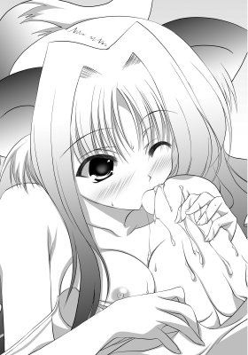

| 開運！ 巫女パラ神社 | |
| あすな ゆう | |
| フランス書院 (2009) | |
開運！ 巫女パラ神社
あすなゆう
イラスト／神無月ねむ
ぷろろーぐ 運命を待つ巫女たち
第一章 おいでませ、巫女パラ神社！
第二章 高慢巫女お嬢様の純情ご奉仕！
第三章 ボーイッシュ巫女が不運搾り！
第四章 キツネ神様が教えてあげる！
第五章 チビッ娘貧乏巫女の処女奉納！
第六章 夢の巫女さんバトルロイヤル！
えんでぃんぐ 島中の巫女がアナタにラブ！
ぷろろーぐ 運命を待つ巫女たち
緋袴の少女が神前にお神酒を供えた、その時だった。
彼女がお神酒の入った器を置いた途端、それは音も立てず、まっぷたつに割れてしまっていた。
ぱかっと、本当に冗談みたいに、まっぷたつに。
割れたのは対になった瓶子の片方だけで、断面は竹を鉈で縦に割ったみたいに綺麗だった。
なかに入ったお神酒がこぼれて、祭壇いっぱいにひろがっていく。
「あ」
日課のお供えものの準備をしていた巫女少女、連理みそぎは、思わず立ちあがってしまう。
ただでさえ幼さを強調しているかのような丸みを帯びた目もとはさらに大きく見開かれていて、特徴的なツインテールがかすかに揺れていた。
普段の快活な雰囲気はどこへ行ったのか、口もとはへの字に引き結ばれていて、どこか表情にも硬さがあった。
神様への大事なお供えのお神酒がいきなり駄目になってしまっては、無理もなかった。一日のはじまりの出来事としては最悪と言ってもよかった。
「みそぎはなにもしてない、から......」
別に誰かに責められたわけでもないのに、真面目さゆえにか巫女少女は自分自身に言いわけしてしまう。
彼女が瓶子にお神酒を注ぐ時にも異常はなかったし、本殿に持ってくる途中でどこかにぶつけた覚えもなかった。この巫神大社に修行に来てからの日課を行っているに過ぎなかった。
――今日に限って、どうして。みそぎ、神様を怒らせるようなこと、なにかしたのか。
自問しても、答えが出てくるはずもなかった。
「みそぎさん、またなにかしでかしましたのね？」
幾分、険のある言葉と共に本殿に入ってきたのは、つややかな黒髪の巫女少女だった。よく梳かれたボリュームのある濡れ羽色の髪に、切れ長の目もとに通った鼻筋の上品そうな顔立ちは、いかにも大和撫子の見本のような女性だった。
額の上には豪奢な飾りつけの挿頭がきらきらと山吹色に輝いていて、愛らしい鈴の房飾りがセットになっていた。挿頭に埋めこまれた輝石の象嵌細工も鮮やかで、彼女のあでやかさに花を添えていた。
「見てたのか、依都姫......」
別にやましいことなどないはずなのに、バツが悪くて、みそぎは言いよどんでしまう。
それを聞いて、依都姫はまるで鬼の首を取ったかのように、勢いを得て、話しだした。
「見られて困ることをしたんですのね、やっぱりですわね」
黒髪の巫女少女は通常人を遥かに凌駕するほど、大きく張った胸を高慢そうに反らせた。同時に、前髪の上に載った飾りものの房飾りの鈴が、その胸乳の量感を証明するかのような動きにあわせて、しゃらん、と揺れる。
初めて会ったとき、みそぎが金の髪飾りなんて、贅沢だ、と言ったところから、彼女、依都姫との因縁がはじまっていた。これは贅沢ではなく、普段着ですの――そう素で答えがかえってきたのだった。
みそぎの実家は千年ほどの伝統を有する神社だったが、交通の便が悪かったり、神社そのものにわかりやすい名物がなかったりなどで、参拝客の数は絶対的に少なかった。
加えて周囲の過疎化で氏子の数も減っていて、財政難の解決は目下の課題だった。
逆に依都姫のいる神社は明治以降に周囲の都市化の進展と共にできた神社で、歴史らしい歴史はなかった。ただ、大都市近郊にあることもあって、参拝客は多く、さらに時流に乗った企画を次々と打ちだして、県外からも多くの観光客を呼ぶことに成功していた。
集まった資金を元にさらに参拝客を呼ぶ算段をし、さらに資金が集まる。お金の面で苦労はなかったが、守銭奴と揶揄されて、神社としては肩身が狭かった。
伝統か、お金か。
依都姫の髪飾りについての何気ない会話からはじまったボタンの掛け違いは数々の修羅場を生み、そしてまた新たな闘争が生まれようとしていた。
「だから、どうして、そう決めつけるんだ。みそぎはなにもしてない。瓶子が勝手に割れただけだ！」
「ま、瓶子が勝手にですって。言いわけならもっと、らしくなさい。その図々しさ、開き直り加減は、ご実家の神社の貧し......いや、ご質素さに起因してるのかしら？」
「だから、ウチの悪口を言うなと言っているだろ！」
みそぎは腕をぶんぶん振りまわして怒る。
「あーら、悪口ではなくて、事実、を申しあげていますのよ」
口に手を当てて、ほほほ、とお嬢様笑いをする依都姫。みそぎと話しているうちに、こういう嫌味な仕草が身についてしまっていた。
売り言葉に買い言葉で、
「......お金があると、気持ちは貧しくなるんだな」
ぼそり、と呟くみそぎ。
それはしっかりと依都姫の耳に届いていたようで、彼女の頬がかすかに引きつる。
「な、なにをおっしゃいますの。お金と心は別ですわよっ。なんって、失礼な！」
依都姫は怒りで顔を真っ赤にする。
「最初の失礼はそっちだからな！」
お互いに、なにっ、と敵意を全力全開で剥きだしにする。
首だけを相手のほうに突きだしたまま、しばらく睨みあいがつづいた。
そこに一人の人物がすっと入ってくる。
みそぎも依都姫もその存在に気がつかなくて――――。
彼女はそのまま、今、まさに衝突しようとしていた二人の頭を、ぱん、ぱん、と棒状のもので連続して叩いた。
「痛っ。な、なにをするんだ」
「いきなり、なんですのっ」
みそぎと依都姫は同時に、自分の頭を軽く小突いた人物のほうを見た。
そこにいたのは、長身にショートヘア、小麦色に焼けた肌の、一瞬、美少年かと見紛うばかりの、凛とした雰囲気の女性だった。
その中性的な容姿は、高潔そうな印象を周囲に与えている。
巫女装束は、みそぎや依都姫と同じだったが、颯爽とした感じは巫女というよりも溌剌とした若武者を思わせた。
手には古風な細工の煌びやかな太刀を持っていて、それは彼女の身の丈ほどの長さのありそうな業物で。彼女、高天原八雲の太刀、八支刀だった。
彼女の神社は古来より武家の信仰が篤く、寄進された宝物だけで資料館が建つほどで、八支刀もその一つだった。巫女仲間の間では、重要文化財クラスと囁かれる刀だったが、恐ろしくて誰も八雲に事実を確認していない。
みそぎと依都姫は、その推定重文の柄で小突かれたのだった。
「八雲先輩！」
「声をかけてくださらないと、びっくりしますのよ」
二人の抗議の声に動じる様子もなく、
「いいかげんにしないか、ご神前だ」
と八雲は二人をたしなめた。
「芙蓉様がいないと、すぐ、これだからな。戻ってくるまで少しの間、おとなしくできないのか、まったく」
この神社の責任者である芙蓉から留守を任されていた八雲は、視線を祭壇のほうにやる。そこには先ほど、二つに割れた器があって。
「それにしても瓶子がまっぷたつとは、不吉な。今朝、芙蓉様が言っていたことと、関係があるのか」
手もとの刀の柄をぐっと握りしめた。
「不吉って、芙蓉様は運命の人がこの島にやってくると、言ってませんでしたの？」
「正確には違う」
と依都姫の言葉に、みそぎは口を挟んだ。憤然とした様子の彼女を尻目に、みそぎはつづける。
「とてつもなく大きな不運の塊を背負った少年がやってくる、そう芙蓉様は言ったんだ。同時にみそぎ達の運命の人になるかもしれないって」
「そうだな。その人の不運さえ、私達の力で祓うことができれば、晴れて運命の人というわけだ」
「では、芙蓉様がいないのは、その不運の塊の人を迎えに行ってるってことですの？」
聞かれて八雲は無言でうなずいた。
「運命の人、か......でも、みそぎはそういうの、よくわからないから......」
みそぎがぽつりと口にする。
「わたくしには、そのような殿方など必要ありませんわ。いつもいつも言い寄られて困っていますもの」
依都姫も戸惑い気味に呟いた。
「それは私も同じこと。修行中の身に男子など必要は......」
八雲も二人に同意する。
けれど、三人とも芙蓉の話していた「運命の人」という言葉がどうにも頭から離れず、ぼんやりと、夢想してしまっていた。
言葉とは裏腹に朱袴の少女達の期待は、胸の内でどんどんと膨らんでいく。
運命の人とのあれやこれやを想像するだけで、きゅううぅぅっと、身体の芯が甘い疼きを見せた。
三人の巫女少女は一瞬、お互いに目があってしまう。
「な、みそぎはなんにも変なことは考えてないからっ」
「わたくしもですわ。ご質素な伝統だけの庶民神社と一緒になさらないでください」
「私も決して可愛い少年だったらうれしいな、などとは――――あ」
八雲はそこまで口にしてから、小さく声をあげてしまう。
「八雲先輩、今、なんて......」
「そうですわ、なんとおっしゃいましたの？」
みそぎと依都姫、二人の視線が八雲のほうに向く。みるみるうちに、刀使いの巫女は真っ赤になってしまう。
「し、知らぬ。私は知らぬからな！」
赤面した顔のまま、八雲は必死になって否定する。そのまま彼女はムキになって、言葉をつづけた。
「二人とも、私は断じて、少年のことなど、考えていないからな。それに、私がそうだというなら、二人はどうなのだ」
先輩特権で、なにか言いたそうな二人を牽制する。
「う......それは......」
「どうして、わたくしがそんな破廉恥なことを......」
八雲の指摘に、みそぎや依都姫も自分がえっちなことを考えていることが見透かされてしまったみたいに思えて。
三人とも、かすかに顔を赤らめて、気まずそうに目をそらしたのだった。
第一章 おいでませ、巫女パラ神社！
ここは海の上。
どこか別の場所で、不運の塊と揶揄された少年は海水パンツ姿で、頼りない小さなゴムボートに乗ったまま、呆然と海岸線を眺めていた。
沖合の強い波が、少年ごとボートを上下に揺する。ふいに大きな波が来れば転覆してもおかしくない、そんな状況だった。
ちゃぷちゃぷとゴムボートの舷側を洗う波の音を聞きながら、御社慧は遠く離れた海岸線を眺めていた。うっすらとかすんで見える海水浴場のビーチ、そこに並ぶ屋台や海の家は砂粒ぐらいの大きさしかなかった。
ボートがあっても、自力で浜に戻るのは難しそうだ。
彼の乗ったボートは波のうねりに乗って、今、この瞬間も沖へ沖へと流されていた。
「やっぱり、ね......」
慧は諦観したかのようにぽつりと呟く。そこに焦りはなく、幾度もの困難の経験からくる落ち着きが垣間見えていた。それはまるで歴戦の傭兵のようで。十六歳の男の子とは思えないほどの柔和さと落ち着きがそこにはあった。
慧は不運体質だった。
そういう体質に科学的根拠があるのかどうかは彼にもわからなかったが、運というものの存在を強く実感せずにはいられないほどに、日々、不運が押し寄せてきていた。それは年を経るに従って規模が大きくなり、高校生になってからは加速度的に膨らんでいった。
日常を思いかえしてみても、ありえない不運が重なっていた。
自販機で買い物をしようとして、小銭を溝に落とす。このくらいは普通のヒト的不運だが、ここからが慧の真骨頂だった。代わりに取りだした野口英世先生こと千円札はそのまま、自販機に吸われて、出てこなくなってしまい――自販機は、故障。
自販機のトラブル時の連絡先のシールも剥がれていて、打つ手なし。機械は叩くと直るという伝説を実行しようと、軽く水平チョップを自販機に入れたところで、通りかかったクラスの好きな女子にそれを目撃されてしまう。
「これは、その、ね――」
言いわけしようにも、気合と共に放たれた水平チョップの深遠な理由が簡単に説明できるわけもなく、絶対零度の軽蔑視線に完全にフリーズさせられた。このタイミングで仲良くなって、ここで告白、みたいな未来予想図が一瞬で瓦解してしまう。
しかも、チョップの打ち所が悪くて、左手小指はしばらく使い物にならないというダメ押しつきだった。
バイトの採用が決まっても、そのバイト先が初日に倒産。自分の不運が影響したのかと、社長に頭をさげに行ったら、すでに夜逃げ。関係者と間違われて、債権回収のこわーい兄ちゃんたちに囲まれて、事情もよくわからないのに、つるしあげられた。
さらに学校でも、教師がテスト用紙をなくして、学年ただ一人の採点不能に。家族に事情を話したら、誰にでも苦手なことってあるからな、と妹にはぽんぽんと肩を叩かれる始末。ち、違うんだけど、という魂の叫びも、慧ちゃん頑張ったから、という母親の一言に強く打ち消されてしまった。自信のあるテストほど、彼の手もとにはかえってこなかった。
今日だって、気晴らしに計画した夏休み一人旅の初日。立ち寄った海水浴場で、釣りでもしようとボートを借りて海に出たばかりだった。穏やかなはずの海、眠気に誘われて少しうとうとしたスキに、信じられないほど沖に流されてしまっていた。通常の潮の流れでは考えられないことだったが、事実として、それは起こってしまっている。
やっぱり不運だからなのかな、そう慧は思う。
一人旅で、家にはたまには出先から絵葉書を出すよ、なんてのん気なことを言いおいて出かけただけだったから、行方不明になってもしばらく捜索されるとも思えなかった。
「いつの間に、こうなっちゃったんだろ」
呟いてみても、この大海原では、カモメの鳴き声がかえってくるぐらいで。
「よし！」
気を取り直して、慧はオールを握りなおすと、岸に少しでも寄せようと、ボートを漕ぎはじめる。
けれど、力強く漕いだオールのうち一本が手もとからすっぽ抜けて――――あれよあれよという間に潮流に飲まれてしまっていた。
唯一の命綱であるオール。
そのうち一本が流されるということは、もうボートは自力でまともに進むことができないということを意味していた。
漂流から遭難へ。
事態が急転していく。
遭難という事実は、普段の不運を軽く凌駕するものがあった。それは不運慣れした慧にとっても、衝撃的な出来事で。
「そんなのって、そんなのって、ないだろ――――――――――――っ!!」
遠くなっていく海岸線に向かって、彼は力の、力の限り、叫んでいた。
そんな彼の不運を知ってか知らずか、カモメが彼を嘲るように、もしくは慰めるかのように、あるいはその両方をこめて、大きな声で鳴きかえした。
真夏の青空に響く甲高いカモメの声を聞きながら、
「カモメに鳴かれても......」
そう呟くぐらいしかできなかった。
彼は振りあおぐように上空のカモメを見る。彼らが飛んでいく先には、大きな島があって、ボートもいつの間にかその島の近くまで来ていた。
木々の鬱蒼と生い茂る島と、その島影から朱塗りの大鳥居が見える。
海中から突きだした大鳥居の柱の太さは大人数人が手を繋いでやっと囲むことのできそうなほど大きなものだった。慧の知る限りの神社では見たことがないくらいの見事なもので。
それは高さも同じだった。側で見れば目が眩むほどの高さがあることは、容易に見てとれた。
海のなかに建てられた、世界遺産にも匹敵する巨大な大鳥居は、そこがただの島ではないことを如実に物語っていた。
「もしかして......人がいるかも」
いつの間にか、潮の流れはさらに速くなっていた。
慧は激しく上下するボートに振り落とされないように、必死にしがみついた。
海は先ほどよりも荒れているはずなのに、ボートの進み具合は不思議と安定している。まるで大鳥居にいざなわれるかのように、ボートはそちらのほうへぐいぐいと引き寄せられていった。
この先に待ち受けているのは、幸運なのか、不運なのか。
どちらにせよ、彼に選択の余地はなく、ボートの向かう先にある運命に身を任せることしかできなかった。
◇
島に漂着した慧はとりあえず人を探すことにした。
海パン姿のままナップザックを背負って、島の海岸線の砂浜を歩きまわる。
と、砂浜のずっと端から、誰かが慧に向かって手を振るのが見えた。
「おーい！」
慧も手を振りかえして、とるものもとりあえず、そちらに駆け寄っていく。
手を振ったのは、水着の女性らしくて、彼女は砂浜の脇にある岩場に立っているようだった。
息を切らしながら、慧が岩場までようやく辿りついたときには、彼女は足を組んで、平らな岩の上に腰をかけていた。
「あの、いいですか？」
慧が声をかけると、向こうはゆっくりと彼のほうを見る。まるで慧が来ることを知っていたみたいで、驚きはまったくと言っていいほどなかった。
「ああ、やっと来たわぁ。慧はんやね。待ちくたびれて、ひと泳ぎしとったのんよ。ウチは芙蓉、言うんよ。よろしゅうな」
手を差し伸べてきたのは、見事なブロンドの長髪がまぶしい女性で、髪のなかほどから愛らしいウェーブがかかっていた。南の島のビーチのような白い肌の豊かな肢体は、純白のビキニの下で窮屈そうにしていて、胸もとからお尻にかけての蟲惑的な起伏に、慧の視線は引きつけられてしまう。
すらりと伸びた形のよい素足は、慧の前で挑発的に組まれていて、そちらに目が行ってしまう。太腿からふくらはぎにかけてのラインは息を飲むほどの、美しさだった。
ブロンドの隙間に覗くきつね目の細い双眸に、物怖じするような色はまったくなくて、彼女は小さく舌なめずりする。かすかに残っていた清楚な印象が、一瞬で裏返り、悪魔的なそれに塗りかえられる。白の水着も、ブロンドもすべてが、慧を誘惑しているかのようだった。
慧よりも年上であることは確かだったが、数歳上なのか、それとも、もっとずっと離れているのか。若くも見えるが、ものすごく年を経ているようにも見える、不思議な女性だった。
「僕の名前、知ってるの。それにやっと来た、って......」
「そらあ、知ってるもなにも、わざわざ迎えにきたんやないの。そんなに不安そうな顔、せんでもええのんよ」
品のよい上方なまりのやわらかな声が、慧の耳を甘くくすぐる。その目は心配そうにさらに細められ、慧のほうを見た。
「でも、どうして？」
「なんでて、そうやねえ、神さまに教えてもろたからかな」
にっこりと笑う芙蓉に、慧は一瞬、引きこまれそうになってしまう。
「そんなからかうようなこと、言って......」
「からこうてないて、ほんまに。ほら、話聞いたるさかい、こっち――」
芙蓉は言いながら、自分の座っている脇の岩を、ぽんぽんとその手で叩く。
慧は言われるがままに、そこに座ると、促されるままに、自分がこの島に流された経緯を話した。
「なるほどなあ。不運体質かあ。でも、運のええ、悪いはしゃあないもんなあ」
彼を励ますような笑顔と共に、その二の腕がかすかに肘に触れる。意外にぷにぷにとやわらかい感触に、慧は驚いてしまう。
同時に、間近にある芙蓉の肢体が、ほとんど剥きだしの裸であることに改めて気づかされてしまう。
大きく盛りあがった胸乳に、お尻から太腿にかけての柔らかさを備えたラインは彼を夢中にさせるのに充分なものだったし、海水で洗われた芙蓉の肌は、健康的な美しさと、それ以上に挑発的な艶かしさを兼ね備えていた。慧はそちらに注意を奪われてしまう。
「まあ、気にしなさんな。不運ぐらい、これからウチらがなんとかしたるさかいに。そういうのは専門なんよ――」
芙蓉はいきなり慧の首に自分の腕を巻きつけてくる。やわやわとした二の腕と、もっとふわふわとした塊が、彼の肩口に押しつけられる。
予想もしなかった張りと弾力が直接、皮膚に触れる。
「ちょっと、その、ふ、芙蓉さん............その......」
慧はそれだけしか言えなくて、黙ってしまう。
「その、て、なんやのん。それだけやったら、わからへんで？」
かすかな笑みを含みながら、芙蓉は慧の耳もとでそれだけ囁く。
「ちゃんと言うてえな、ほら」
言いながら、芙蓉は自身の発達した胸乳をさらに慧に押しつけてくる。丸いカーブは慧の体にそって大きくたわみ、つぶれていた。
瑞々しさをはらんだ肌がぐいぐいと押しつけられる。ひんやりとした冷たさと、その後からじんわりと伝わってくるぬくもり。
「だから、ほら、その、なんていうか......」
慧はますます芙蓉を意識して、口ごもってしまう。ふわふわしたやわらかさが何度も彼を襲う。水着越しに、乳房の質量が確かに伝わってきていた。
先ほどまで海に入っていたからか、芙蓉の髪からは、潮の香りがかすかに漂ってきて、それが芙蓉の肢体の存在を強く感じさせる。
「なんていうか、なんやのん？ 言うてくれな、わからへんのんよ、ウチ」
慧がいやがる素振りを見せないのをいいことに、芙蓉は彼をそのまま抱きしめてしまう。
「だから、うむんっ......その......ってば」
動揺と、豊かな脂肪の弾力に少年はなにも言えなくなってしまう。ぎゅうううっと抱きしめられて、芙蓉のとろけるような香りと、巨大なマシュマロのえも言われぬ感触に、慧は酔ってしまっていた。
心臓がばくばくと音を立てて、なにも言えなくて。
――おっぱい、こんなにやわやわしてるんだ。
それだけしか考えることができなくなっていた。
芙蓉は目をぐるぐるまわして、乳房の感触に翻弄されている少年を見て、その愛らしさと、初々しさに思わず微笑んでしまう。
「なんや、可愛いなあ」
と、ふいに芙蓉は少年の体のかすかな変化に気づく。
それは次第に大きくなっていって。
「もう、こんなにおおきうして......ウチが悪いんかな」
まったく悪びれた風もなく、再び少年をぎゅううううっと抱きしめた。
「ちょ、ちょっと、芙蓉さん......その、僕――」
自身の大きくなったことを指摘されて、慧はバツの悪さに口ごもってしまう。彼女の手が元気になった慧の上を何度も往復する。
――ダメ、そんなとこ触ったら。
甘い愉悦に、少年はかすかに声を出しそうになってしまう。抵抗しようにも、そうすることで自分の今の状況を認めてしまうようで、慧はなにもできなかった。
芙蓉にされるがまま、いきりだけが意思とは無関係に大きく反応していく。
彼女は慣れた手つきでさらに慧の屹立を刺激してから、
「慧はんのこんなにしてしもうて......元に戻してやらんとあかんよね」
「元にって......」
「だって、ウチが悪いのんよ――」
言いよどむ慧に、しらじらしく、けれど確信犯的な力強さを持って、芙蓉はそう口にした。
「なあ、慧はん......ええよね？」
「でも、悪いとかいいとか、その......大げさなことじゃ......」
「――そらあ、久々の人間の男の子やしねえ。ウチ、我慢できへんのよ......」
芙蓉は小さな声でそうもらしてしまう。
「え、今、なにか言った？」
慧はウチが悪い、なんて言われたことに驚いて、芙蓉の次の言葉を聞き逃してしまっていた。
あわてて聞きかえす慧に、芙蓉はなんでもないのんよ、と笑顔で流す。
「ええやないの、慧はん。ウチのこと、いややないんよね？」
妖艶な流し目で、かすかに鼻にかかった、媚薬のような言葉が、彼の耳に流しこまれていく。
「秘密の場所があるんよ」
慧は抵抗することもできずに、ただこくりと、うなずくしかできなかった。
芙蓉に連れられてやってきたのは、二人が話していた岩場から、少し奥に行ったところにある、小さな洞だった。
一度海に入って、少し歩いた場所にその洞の入り口はあった。浅いながらも海水は洞の奥まで入りこんでいた。
芙蓉に手を引かれるようにして奥まで進んでいくと、かすかに陽が光の差しこむものの、まわりから完全に隔離されているようだった。
ビキニの背中は、肩口から腰、お尻のラインまで無防備なほど剥きだしで、歩くたびに肩甲骨がなまめかしく動いていた。
――今、芙蓉さんと二人っきりなんだ。
目の前にいる大人の女性が急に意識されてしまう。聞こえるのはちゃぷちゃぷと、二人の足が海水を押しのけて進む音だけ。
洞の一番奥まった場所にある岩場にたどり着くと、芙蓉はそこへ先に腰をかける。そうして立ったままの慧のいきりを自然な手つきで取りだした。
「芙蓉さん......」
「ええて、こないにして。我慢させてしもうたなあ」
精いっぱいのいとおしさをこめて、芙蓉は大きさを取り戻しつつある屹立を両手で包みこむようにして、扱きあげる。
しなやかな指先が敏感なブツに、やさしく、そして時に激しく絡みついていく。つるつるとした指の触感が、慧を追いこんでいく。
――芙蓉さんのすべすべした手が絡みついて、すごく気持ちいい......。
何度も下腹部に送りこまれる甘い刺激に、少年はただ翻弄されていた。
「どないなん。気持ちええのん。なあ、言うてえなあ」
わかっていると言わんばかりの顔つきで、芙蓉はさらにいきりを激しく責めたてる。雁首を擦りあげ、その張りだしを絞りあげる。愉悦に、慧のいきりはびくびくと震えた。
「芙蓉さん、すごい......いいよっ」
快楽に抗うようにして、慧はやっと言葉を絞りだす。
「わ、ほんまに！ うれしいわぁ」
芙蓉は心底、うれしそうに笑う。大人の妖艶さのなかに、オンナノコの無邪気さを見たような気がして、慧はどぎまぎしてしまう。
「ほんなら、こういうのはどうやろか」
大きくそそり立っていたブツを、芙蓉はいきなり咥えこんでしまう。口腔のぬめついた感触が、いきりの先端を暖かく包みこんだ。
「ど、どうしたの、んっ......そんなことして......」
いきなり屹立を襲った未知の快楽に、慧は驚いてしまう。
「ん、はむんっ。そんなに驚かんでも、ええやないの。こないして、ウチがええ気持ちにさしたるさかいに、な――――んむっ、はむぅっ、んぷはぁ、んむ」
粘膜同士の擦れる淫猥な音を立てながら、芙蓉の唇が艶かしく形を変えていく。唾液が口の端からあふれて、いきりの胴を濡らした。
舌の上で雁首が転がされ、甘く圧迫されているのが慧にもわかる。芙蓉の口腔内をいきりの先端が蹂躙している様を思うだけで、さらにそれは大きさを増していく。
それは芙蓉も同じようで、苦しそうな表情を時折見せつつも、酔ったようにいきりをなかほどまで咥えこみ、口腔全体を使って丁寧に扱いていく。
頬が口に含んだいきりのせいで、かすかに膨らむ。まるで大きな飴玉をしゃぶっているかのように、膨らみは色っぽく動いた。
「んむぅ、慧はんの、大きうて、はむぅっ、咥えきられへんよ。ん、もう、わかってんの......」
芙蓉は屹立への奉仕をつづけたまま、くぐもった声を出す。それは手間をあえて楽しんでいるような声で、ぺちゃぺちゃと淫らな唾液の音をさせる。
――もう、出ちゃうかも......。
高まった愉悦と、芙蓉の淫靡な姿に、精がせりだしそうになる。
そのタイミングを見計らって、芙蓉は口腔に収めたいきりを解放する。
「ぷはっ、まだ、これからやねんよ、慧はん」
大きく天をあおいだ屹立の先からは、唾液が糸を引いて、芙蓉の唇にまで繋がっていた。
彼女の口先がふいに雁首に近づいたかと思うと、そのまま愛しそうに、鈴口にちゅうぅぅっ、とキスがされてしまう。
「ふ、芙蓉さん......吸いすぎだから――っく」
不意打ちのようないきりへの強いキスに、慧は腰が動いてしまう。喜悦の電流が突然流しこまれたかのようだった。
「もっと、気持ちよおしたるから、こんなんで音ぇあげたらあかんのんよ」
今度は咥えこむのではなく、いきりの先端から根もとまで、丁寧になめしゃぶっていく。
舌先が屹立に艶かしく絡む音と、芙蓉の甘い吐息だけが、洞のなかに淫らに響いていた。
無心にいきりにじゃれつく芙蓉の姿に、慧は釘づけになってしまう。
――女の人って、こんなに乱れちゃうんだ......。
そうして、白のビキニの胸もとからこぼれださんばかりの、真っ白な乳房の半球が、目に飛びこんでくる。芙蓉が身体を揺するたびに、突きだした双乳は震え、その存在を主張しつづける。
ゴムまりのような胸乳の丸みがゆさゆさと、その質量の大きさを訴えかけていた。
ふいに顔をあげた芙蓉と慧は、目線が合ってしまう。
「慧はん、どこ見てんの。やらしいなあ」
自分のことは棚にあげて、芙蓉は慧の目線の向かっていた先を指摘する。
「それは、その......」
やましい部分を指摘されて、慧はどきりとしてしまう。胸の鼓動が自分でもコントロールできないほど速くなっていた。
「む、胸なんて、見てないからね、うん」
思わず口走った慧の言葉に、芙蓉の笑みがいちだんと大きくなる。
「あれ、ウチ、胸のことやなんて、言うてないよねえ......」
「あっ」
慧がしまったと口もとを押さえても、もう遅かった。
「慧はん。ウチの胸、ちゃあんと、見てくれはってたんや。なんや、うれしいなあ」
高く張った胸乳を、芙蓉は持ちあげるように両手で抱きしめる。重力に逆らって発達した盛りあがりが、さらに強調される。
合わせ目が押し当って、やわらかなカーブを描いた深い谷間になっていた。
「そうや、慧はん。こういうこともできるんよ、ほら」
口にするなり、芙蓉は乳房をいきりに押しつけてくる。まるで準備されていたかのように、丸みの狭間にすっぽりと屹立が収まった。
そのまま、脂肪のやわやわで、いきりを挟みこむ。
「芙蓉さん、僕が変なこと考えてたの、責めないんだ？」
「なんでえ、そんなこと考えて、どきどきしてるのが、可愛らしいんよ。それにウチの見て、そんなん思うてくれてるやなんて――ほら、こっちもびくびくいうて、はぅ、これだけで酔うて、イってしまいそやなあ」
芙蓉は膨らみをいきりからそっと離すと、ビキニの上の留め具を取り払う。
今まで窮屈に締めつけられていた、乳房が解放される。ぷるぷると震えを見せる乳房。その先端、乳嘴が興奮のためか、かすかに尖っていた。
無意識のうちに、慧はその手を尖りに伸ばしてしまう。
「ぁ、はくぅっ、慧はん、いきなり、なにすんのん......ぁうんっ」
芙蓉は敏感な箇所を、慧に刺激されて、あられもない声を出してしまう。
「そんなところ、触ったら、感じすぎてっ、あかんてぇ......」
「そんなに感じるの？」
彼が力をこめて摘みあげると、
「だから、ぁんっ......あかん、あかんてぇっ。ウチ、おかしうなってまうっ！」
背筋を反らして、胸先に走った愉悦の嵐をなんとか耐えしのごうとする。
「でも、気持ちよさそう、ほら、こっちも......」
「だから、あかんて、はうぅぅっ！ 言うてるのんよぉ......そこぉ、か、感じすぎんのんっ！」
慧から両方の乳房の先を摘みあげられて、芙蓉は声にならない声をもらす。先ほどの余裕は失われて、送りこまれる悦楽の波にただ翻弄されていた。
「感じてるんだ、じゃあ」
慧は芙蓉の反応がうれしくて、さらに乳房を強く責める。根もとから先端までを絞るように揉みしだく。
「だからぁ、んっ、あかんて、言うてるやないのぉ......ぁあぁぁあぁ、ぁーっ、あかんのっ!!」
芙蓉は喜悦に全身をよじらせながら、ひときわ大きな嬌声をあげる。
座ったまま大きく背筋を反らせて、びくびくと肩を震わせると、脱力してしまったかのように、ぐったりとしてしまう。
「どうしたの芙蓉さん？」
心配になって声を掛ける慧に、芙蓉はゆっくりと顔をあげる。
「なんや、慧はん、いきなりやないの。ものごっつう手慣れたお人みたいで......ウチ、いきなり気をやってしもうたわぁ......」
肩で息をしながら、陶然とした面持ちの芙蓉の頭には、見慣れぬものが二つ、ついていて。
「ふっ、芙蓉さん、それは!?」
彼が指さしたそれは、動物、それもキツネの耳のようだった。
芙蓉はそれを指摘されて、しまったとばかりにバツが悪そうに、ちょっと舌を出す。
「こ、これはやなあ。なんて言うか、その......」
言いわけを考えている間にも、純白のビキニショーツからはみだしたふさふさの巻き尾が彼女の背中からかすかに覗く。ふわふわとやわらかそうな、見事なキツネの巻き尾だった。
黄金色の耳に尻尾、そして流れるようなブロンドの長髪。どこか神秘的な妖艶さに、慧はじっと見入ってしまっていた。
「ばれてしもうたなあ。この姿を、見られたら、生かしておくわけにはいかへんでえ――――」
芙蓉は声のトーンを少しだけ落として、おちゃらけてみる。
けれど、慧に驚いた様子はなく、逆に芙蓉のほうが拍子抜けしてしまう。
「なーんて。あれ、慧はん、ちょっとは驚いてえなあ......」
「じゅ、充分、驚いてるよ、僕......。驚いて、こ、声が出ないんだけど。芙蓉さんは、その、妖怪なの？」
立ちつくしたまま、そう言うだけで精いっぱいだった。
「妖怪て、失礼やなあ。まあ、こないな言い方したら、妖怪にも失礼やけどなあ」
「じゃあ、違うんだ？ なんか妖怪とか、格好いいじゃない」
「慧はんは、妖怪が格好ええんか。ウチはな、もっと、もーっと格好ええのんよ。なんと、神さまの使いや」
「か、神さまの使い～！」
キツネ耳コスプレが趣味とか、海で水死したキツネの霊に取り憑かれたとか、色々と、想像はめぐらせていたのだけれども。
予想もしなかった、突拍子もない答えに慧は目を丸くしてしまう。
「そうや、ウチは慧はんを迎えに来たのんよ。神さまから、慧はんがこの島に来るて聞いて。だから、なーんも心配せんでええのんよ」
艶っぽい容姿とはうらはらな愛らしいキツネ耳をぴょこぴょこと動かしながら、芙蓉はいたずらっぽく微笑んだ。
「それとも、ウチのこと、信用でけへんの？」
座ったまま上目遣いで、しおらしい声を出す芙蓉。彼の手を自身のはちきれんばかりのマシュマロの上にぎゅっと押しつけたままで。
やわらかさと張り、そして質量の三重奏に、慧はなにも言う気さえなくなってしまう。
「そんなこと、ないけど......」
「じゃあ、ええやないの。つづきして、慧はん」
脂肪の膨らみのなかに指先がずぶずぶと埋まっていくのがわかる。このままずっと沈んでいくんじゃないかと思うほどで。
「最初はゆっくりと、こうやって、してえなあ。それから、だんだんと、強うしてやな......」
彼女は慧の手を取ると、自身の突きだしの上に載せて、それを転がすようにゆっくりと動かして見せる。
「うん、こ、こうかな」
慧はおずおずとした手つきで、弾力のある丸みを転がしてやる。上へ右へ左へそして下へと。魅惑の膨らみは彼の手の上で伸びて、縮んで、自在に形を変えていく。
「ぁん、そうや、そうやで、慧はん。ええわ、気持ちええわ......その、いきなり強うしてもらうのんもええねんけど、慧はんにやさしゅうされていうのんも、感じてしまうんよ、んっ、ぁあぁぁ......」
「芙蓉さんの胸、すっごく柔らかくて、手の指に吸いついてくるみたいで......」
「んっ、はぁあぁぁ......ウチも、慧はんにようしてもろうて、ええのんよ......」
芙蓉は目を細めて慧の愛撫を受け入れる。耳も尻尾も、刺激に時折びくびくと震えを見せた。
張りだした塊に指先を押しこんだ分だけ、力強くそれが押し戻されてくる。胸乳そのものが意思を持っているかのように、彼の手に絡みついてきていて。そのもちもちとした感触に幻惑されてしまう。
「ほんなら、慧はんのほうも気持ちようしよか――」
芙蓉はつきたての餅のような真っ白な乳房を再び、いきりに押しつけると、その谷間で包みこむ。
「かちかちで、立派やなあ、慧はんのは」
屹立を両の乳房で挟みこんで、丁寧に擦りあげる。胴の部分から、切っ先へと。やわらかさが、甘い感触を運んでくる。雁首の張りだしがぐい、と擦りあげられ、痺れるような悦楽が下腹部に走った。
豊かな乳房のもたらす愉悦に引きずられるようにして、慧はいきりをぐいぐいと芙蓉に押しつけてしまう。
「もっと、芙蓉さん......っ」
「せかさんでも、もっとようしたるさかい――」
芙蓉はあてがった両手を使ってさらに、胸乳を強く屹立に押しつけて、扱きたてる。同時にその先端に舌先を這わせて、刺激した。
「――っく、僕、出るっ、出ちゃいそうっ！」
「男の子やったら、もうちょっと、我慢しい。ほら、まだ大きうなってるさかい」
彼女は胸と口とを使いながら、いきりを弄びつづける。慧の状況にあわせて、緩急をつけながら、確実に彼を追いこんでいく。
――ん、顔に似合わんと、おおきうて、惚れぼれしてまうわぁ。
びくびくと反応する屹立を、芙蓉はぺろりと咥えこむと、舌の上で転がしはじめる。
「っ、はむぅぅ、こら、おとなしいせんと、んむぅ、あか、んのよ......」
口ごもりながら、いきりを口腔内で刺激する。愉悦にか、慧の腰はかすかに震えて、それが時折、喉の奥にまで当たった。
――んむぅ、ちょっと息苦しいけど、気持ちええのんやったら、うれしいなぁ......。
彼の反応は、芙蓉に少々の苦しささえ気にならなくさせた。自分の口で、目の前の少年が喜んでくれることがうれしくて、もっと強く奉仕してしまう。
そうして、淫らな唾液の音と共に、ひときわ強く、彼の切っ先を吸った。
「んむっ、はむぅっ、んちゅうぅぅっ」
「芙蓉さん、ごめん、もう、僕、だめっ！」
口腔のとろけるような粘膜の感触に、慧は達してしまっていた。
絶頂と共にいきりがびくびくと震えて、白濁を芙蓉の口腔に放ちつづける。口蓋から口底、そして喉奥までが、精の白に塗り変えられていく。
「っく、芙蓉さん、ごめんなさい、で、出ちゃうっ......」
謝罪の言葉とはうらはらに、粘りを帯びた液は溢れつづけた。
――すご......慧はんの熱いのが、んぐぅ、いっぱいで、んむっ......ほんまに、すごい......。

その白濁の量の多さに受けとめきれるかどうか不安になってしまう。芙蓉はきつね目を開いて、アピールするかのように、彼をじっと見た。そして、口をいきりから離すこともなく、丁寧に舌先を絡め、濁った蜜を嚥下していく。
「ん、ぷは......そんなに、悪いもんとちゃうのんよ、んくっ、んくくっ......」
喉を鳴らして、吐精をすべて収めてしまう。
それから、ゆっくりといきりから口もとを離した。
――男の子のん、久しぶりで、やっぱりええなぁ。
口の端にこぼれた精を拭いとると、
「ぷは、ぎょうさん出たなあ。ん、おいし......」
芙蓉はにっこりと笑みを見せた。
「今度は、ウチも気持ちようしてもらおうかな」
言うなり、屹立に手を這わせて、刺激しはじめる。その艶かしい手の動きにあわせて、いきりが再び元気を取り戻した。
「ほら、すぐに大きうなって。慧はん、若いなあ......」
「若いって、芙蓉さんも年取ってるわけじゃ――」
「ウチか。ウチは神さまの使いやから、びっくりするほどぎょうさん年、取ってるでえ」
「びっくりするほど？」
「そうなんよ。慧はんのおじいちゃんより、ずうっと、ずううぅっと上や」
「え」
そう目を丸くする慧に、
「だから、内緒や」
彼女は立てた人差し指を、そっと唇に当てて、いたずらっぽく微笑む。
「そやけどねえ、身体も、心もぴっちぴちなんよ、ほら」
少女っぽさを覗かせたかと思うと、芙蓉は妖艶さを湛えた視線を、慧に送ってきた。岩場に腰掛けたまま、海水につけていた足をゆっくりと抜きとる。
海水に濡れたふくらはぎの丸みが覗き、そして、形のよい足首がすっと水面から引きだされる。
その足を岩場の上にぺたりとつける。もう一方の足は水面に浸したままで、下のビキニがかすかにねじれて、太腿のつけ根にある場所が薄布一枚向こうに感じられる。
「慧はん、ほら、ええよね、ウチも......」
芙蓉はビキニのショーツを少しずつ、ずらしていく。引き締まった水着の布地がお尻や太腿の膨らみを強調するかのように、圧迫していく。
もう一方の足も水面から引き抜かれて、芙蓉は太腿を大きく割り開く形で、岩場の上に座る格好になる。
「そんなに、じいっと、見んといてえな。感じてしまうやないの......」
芙蓉は慧の視線を下腹部に感じて、艶っぽい声を出してしまう。身体をかすかによじらせながら、身体の芯の火照りをなんとか逃がそうとする。
「でも、芙蓉さんが、脱いでるから、さ......」
慧の言葉どおり、見られながらも、芙蓉のビキニショーツを少しずつ脱いでいく手は止まらなかった。彼自身も芙蓉の仕草から目を離せないでいた。
お尻の下までショーツをずりおろすと、芙蓉はかすかに腰を浮かして、太腿までそれをずらしていく。
太腿に引っかかったショーツの間から、太腿の付け根があらわになる。茂みは海水で湿り気を帯びて、スリットからはかすかに蜜が溢れだしていた。
慧は芙蓉のビキニショーツに手を掛けると、そのまま膝のところまでずりさげて、
「け、慧はん。ちょ、ちょっと待ってえなあ......ぁ、ぁあっ......」
その制止も聞かずに脱がしてしまう。
先ほどの余裕はどこに行ったのか、慧と視線があわないように、芙蓉は顔を横にそむけてしまう。彼の刺すような視線に、芙蓉は予想もしなかった羞恥を覚えてしまう。
――なんや、ウチ、慧はんに真剣に見られてしもうたら、生娘みたいで、恥ずかしうて......。
年上の矜持もあって、素直に口にすることはできなくて。けれど、恥ずかしさはそんなことをいっさい構わず、全身を激しくのたうちまわっていた。
ビキニの下が取り払われてしまったことによる、下腹部の頼りなさが恥ずかしさに拍車をかけていた。
芙蓉は慧に覚られないように、なんとか羞恥をこらえようとする。
我慢のあまり、かすかに身体に震えが走った。
「芙蓉さんのここ、触ってもいい？」
「な、なな、なに言いだんすんや、ほんま......」
突然の慧の申し出に、口ごもってしまう芙蓉。かすかに赤らんだ顔で、慧のほうを見る。
そうして、はっきりした返事をかえす前に、慧の指先がそっと陰唇の上を這っていく。
「っ、ぁ、ぁかんてぇ......」
「でも、目の前で見ちゃったら、僕」
興奮でさらに蜜液の溢れだすスリットの上を、じらすように彼の指が撫でこする。
「あかん、て......ぇ、い、言うてるやないの。やんっ、やぅぅんっ......」
慧の指によって淫らな唇が割り開かれて、なかから液が湧きだしてくるのがわかる。朱色の入り口が、物欲しげに、ひくついていて。
粘ついた液が膣口に糸を引いていた。
「すごい、まだ、こんなに溢れて――」
「だから、ぁんっ、そこ、いじったらぁ......ぁ、んっ」
すでに溢れた蜜が、膣口から溢れて、お尻のほうに滴っていく。
慧は人差し指を差し入れると、なかを掻きまわしていく。芙蓉の言葉とは裏腹に、侵入物を認めた彼女の膣壁は妖しく蠢いて、それをとらえようとする。
彼がびっくりして、膣壁を押し戻したり、擦りあげたりして、刺激すると、さらにその動きは激しくなって。
「指ぃ、そんなに動かしたら、ぁんっ、おかしゅうなって、しまうやないの。もっと、ぁんっ、や、やさしゅうしてえなぁ......んっ、はぅっ！」
「でも、芙蓉さんのがきゅううって、吸いついてきて――」
慧は割れ目をこじ開けるように、中指を差し入れると、そのまま秘部をほぐすようにくちゅくちゅと掻きまわす。
「ぁ、ぁあぁっ、そんなんしたら、ウチ、お、おかしゅうなってまう。指で、掻きまわさんといてえっ！」
「でも、芙蓉さんの、ここが僕の指を離さないんだから」
半分は事実で、半分は嘘だった。ぐいぐいと指を締めつける蜜壺と、芙蓉の乱れた反応がもっと見たくて、慧は半ば無意識のうちに、彼女を激しく責めたてていた。
こぼれた蜜が、指先から手のひらを伝って、手首まで滴ってくる。淫らな水音が洞のなかに響いた。
「あかん、あかんてぇ、慧はんの指で、ぁうぅぅんっ！ ウチぃ、おかしゅう、なってしまうっ！」
腰をかすかに浮かしたまま、芙蓉は切なげな声をあげる。キツネ耳は震えて、目もとは潤み、頬は赤く染まっていた。
時折、感じすぎてしまったためか、甘い喘ぎがもれた。
「ぁんっ、ぁ、ぁ、ぁあぁぁっ、そこは、あかんからぁ......」
慧は芙蓉の様子を見て、割れ目の奥まで差し入れた二本指をゆっくりと抜いていく。
「やっぱり、ぬ、抜かんといてぇっ......抜くのんも、かんにんしてえなぁ......」
慧の指についていくかのように、腰を浮かして、それを必死で捕まえようとする。
「でも、掻きまわさないでって」
「そうは、言うたけど......ぁんっ、ぁ、ぅんっ......」
「芙蓉さん、僕、わかんないんだけど、気持ち、いいの？」
人差し指と、中指。二本指を突き入れて、再び彼女の内奥を掻きまわす。膣壁を押しあげて、こりこりとした敏感な部分を強く擦りあげる。
「ぃうんっ！ き、気持ちいいて、そんなこと、聞かれたかて、困るやないの......」
「僕、わからないから」
再び慧の指先の動きが止まる。
「え、ええよ。き、気持ちええから、ほんまに、気持ちええから、もう、じらさんといてえなあ。ウチ、我慢できひんようになって、おかしゅうなってまうからぁ」
芙蓉の訴えるような声に、慧は膣壁をえぐるように刺激する。
「こ、こうかな......」
「ぁ、んっ......そうや、慧はん、ええ、よぉ......」
膣襞が蠢いて、慧の指に反応をかえしてくる。
「――うん、芙蓉さんのここ、すっごくえっちにうねってて」
「そ、そうや、慧はんの指が、よおて、ええよええよって、ウチのなかも言うてんのよ」
息を荒らげながら、芙蓉は慧の奉仕を受けつづける。
慣れてきた彼の指の動きは次第に、激しく、的確に芙蓉を快楽の高みへと追いやっていく。
芙蓉自身も淫らに腰を使って、慧の指、そこから生みだされる愉悦をひたむきに貪っていた。
「ぁ、っく――もう、ウチぃ、あかんっ！ イクぅ、イってしまうっ。もう、身体が熱うて、イってしまうのんよぉ！」
「イクの。芙蓉さん、イっちゃうのっ」
慧は膣の中程にある、少し硬めの場所を思いきり指で引っ掻く。芙蓉が何度も感じていた場所だ。指先にざらつきが引っかかって、そしてぴん、と弾けた。
「ひぅうぅんっ！ そ、そこ、感じすぎてぇっ、あかんっ、あかんからぁぁ――――っ！」
芙蓉は腰をびくんびくんと跳ねさせて、軽く絶頂に到達してしまう。
「言うてるやないのん、あかん、って......」
慧の指先を咥えこんだままで、彼女はゆっくりと顔をあげる。肩を上下させながら、うらめしそうに慧のほうをにらみつける。
「――はあ、いきなりやもん、慧はん。びっくりしたのんよ......」
「でも、いきなりイっちゃうとは思わなくて」
慧はおずおずと、割れ目から指先を抜く。
「んっ、はぁあぁぁ―――っ」
芙蓉は大きく息をつくと、慧のほうをじっと見た。
「今度は、慧はんのでちゃーんと、よおしてもらおか」
ぺろりと舌なめずりしてから、芙蓉は伸ばした手で器用に、慧のシャフトを扱きはじめる。
「ぁ、芙蓉さん、触るの、っ......強すぎて......」
芙蓉の瑞々しい手指が、彼自身を甘く、そして巧みに刺激していく。たちまちのうちにそれは大きさを取り戻していた。
「そんなこと、ないて。ほら、もう、大きうなってきた」
そそり立ったブツの先端を愛おしげに撫でこすりながら、芙蓉は慧を見ると、
「ウチのここ、指やのうて、これで気持ちようしてほしいのんよ」
手のひらの上にあった、いきりをそっと握りしめる。
「そんなこと、いきなり、ぁ、言われたって、僕――」
「こんな立派なもん持って、そんな謙虚なこと言うても、あかんよ、ほら」
手のひらのなかのブツはさらに大きく、硬くなり。
――慧はんのオチン×ン、また、硬とうなって......どんな感じなんやろ。
芙蓉はいきりのもたらす快楽の大きさを想像して、生唾を飲みこんでしまう。
「芙蓉さん、もう、いいよね」
慧は両手を芙蓉の腿に掛けると、屹立を膣口にあてがう。
「ええよ、慧はんの大きいのを、ウチに頂戴......」
その芙蓉の言葉をきっかけに、いきりをゆっくりと膣内に挿入していく。張りだした雁首が膣壁をゆっくりと押しひろげていく。刺激された膣襞が、侵入してきたシャフトに絡みつき、扱きあげていく。
「ぁ、慧はんの入ってきて、はぁ、お腹のなかが、ぐいぃぃって、ひろげられて、すごいのんよぉ」
「っく、芙蓉さんのも、細かいひだひだが、くいくいってまとわりついてきて、ぁ、っく、気持ちいいよ......」
慧は屹立に送りこまれる愉悦の波に、なんとか耐えるようにして、膣奥まで、進んでいく。
「動くよっ」
「ぁんっ、早う、来てぇなぁ......」
膣壁のざわついた動きを感じながら、腰をゆっくりと前後させる。溢れた蜜液と粘膜が擦れて、ちゅくちゅくと淫らな音を立てていく。
いきりの先端が内壁を擦りあげ、膣底を叩く。そのたびに、芙蓉は艶めかしい喘ぎをもらす。
――やっぱり、慧はんのすごいぃっ！ ウチぃ、こんな年下の男の子に簡単に、いかされてしまいそうで、やうぅぅんっ！
彼女は全身を震わせて、いきりの感触を受けとめる。そうして、意識を他にやってしまわないと、一刺し一刺しで達してしまいそうなほどだった。
「芙蓉さん、気持ちいいよぉ。腰が止まんない......」
「はぅぅうぅぅっ......ウチも、よすぎて、ぁーっ、いいっ！」
芙蓉も腰を動かして、より深く慧を受け入れようとする。膣襞が雁首の張りだしに何度も擦りあげられるたびに、甘い愉悦が脊髄を駆けのぼり、脳髄までも蕩けさせた。理性は次第に、快楽への渇望に置き換わっていく。
「もっとぉ、もっともっともっと、奥までしてえぇぇぇっ――慧はんのごっつい業物、欲しいのんよぉ！」
芙蓉は年上の余裕もどこへ行ったのか、自分でもびっくりするぐらいの大きな声を出して、彼のいきりを求めつづける。彼の腰に手をまわして、はしたなく自身の腰を擦りつける。
結合部からは、液が滴り、それが擦れて白く泡立っていた。腰同士が激しくぶつかるたびに、小気味よい音が鳴り、全身を貫くような官能が交換された。
「ぁうぅんっ、そこぉ、ぁかん、あかんて――――ぁ、っくうんっ！ あかん、言うてるのにぃっ！」
膣奥の感じやすい部分に、切っ先を突きたてられて、芙蓉は腰を跳ねさせる。そのまま座っていた岩場から滑って、慧にもたれ掛かるようにして、彼を海のなかへ押し倒してしまう。
大きな音と水しぶきがあたりを覆う。
慧はそのまま浅瀬に尻餅をついてしまう。上にはしっかりと抱きついたままの芙蓉がいて。驚きで目を丸くする慧とは違って、芙蓉は彼の上に乗ったまま、なまめかしく腰を使いだす。
「芙蓉さん、ちょ、ちょっとってば！」
「もう、我慢きかへんのよぉ。よすぎてぇ、慧はんのが、たまらへんのよぉ！」
腰を何度も上下させ、いきりを淫猥に食みつづけたまま、芙蓉ははしたない声を出しつづける。
「でも、海のなかなのに、っく......」
「慧はんが悪いんよ、こんな大きうして、ぁんっ、ウチぃ、おかしゅうなってまうっ！」
芙蓉の動きが激しくなるにつれ、慧のいきりもそれにあわせるように激しく突きこまれる。膣壁をかきまわすように右に左にえぐって、最奥部の子宮口をノックする。
鋭い屹立の先が、そこを打ち抜かんばかりに刺さる。
「ぁくぅぅっ！ そこはぁ、ほんまに、あかんて、かんにんしてぇぇっ！」
内臓までが揺さぶられ、脊髄を法悦の渦が駆け抜けていく。脳髄は膨大な悦楽にひたされて、真っ白になっていた。
――奥の、そこは、だめなんやぁっ！ おかしゅう、ウチぃ、こんな小さい子におかしゅうされてまうっ！
なんとかしてもらおうにも、彼の激しい責めに、その制止の言葉を口にすることができなくて。芙蓉はただ、はしたなく身悶えしつづけるしかなかった。
「ぁっく、もう、ウチぃ、イって、イってまぅっ！ あぅうぅぅんっ！」
「もう、ぁ、イっちゃいそう......」
腰をリズミカルに打ちつけあいながら、お互いが昇りつめていく。
「慧はん、なかにきてえな。ウチのなかに、慧はんのぎょうさん、欲しいのんよぉ！」
「僕も、芙蓉さんのなかにっ、出ちゃうっ」
慧は灼熱を、芙蓉の内奥に吐出する。
溢れだす熱で膣奥まで満たされていく。
「ぁあぁぁあぁっ！ きたぁっ、きたのんよぉ！ 慧はんの精液がぎょうさんウチのなかにきてぇええぇっ！」
「っく、出るの、止まんないのっ――」
芙蓉は内奥に注ぎこまれた精が引き金になって、そのまま絶頂に到達する。
「ウチも、イクのんよぉ、イクっ、イクぅうぅぅ――――――っ！」
脊髄を走り抜け、脳髄で爆発するエクスタシーを感じながら、芙蓉は慧の体をぎゅっと抱きしめる。
「ごめん、まだ、出ちゃうぅぅ......」
放たれた液は、さらに膣内を満たして、結合部からも、こぼれだす。
「ええのんよ。慧はんの熱々のやもの。――おおきに、うれしいわぁ......」
子宮内にまで精が流れこんでくる感触を実感しながら、芙蓉は慧を自慢の胸のなかに抱きよせた。
「ぁ、ぁあぁっ、まだ、慧はんのぎょうさんきてぇ。ウチ、酔うてしまうわぁ......ぁ、んっ......」
海中で結合して、慧を抱きしめたまま、芙蓉は陶酔した面持ちで彼を見つめていた。キツネ耳が昇りつめた余韻でか、ぴんと張ったままかすかに震えていた。
慧がそこに手をやって、やさしく撫でると、彼女は目を細めて気持ちよさそうにする。
「ん、ええわぁ、そこも、感じるんよ......」
「芙蓉さん、猫みたいだね......」
「......失礼なことを言うたらあかんのんよ。猫やのうて、キツネやし、それも神さまの使いなんよ」
半分水に浸かった状態で慧を抱き寄せつつ、芙蓉は慧の耳もとで囁く。
「疑ってないじゃない、僕」
「なんや、その目は、信じてないな、慧はんは。よっしゃ、ウチが神さまの使いであることをちゃんと証明したる。厄祓いは、ウチらの専門なんよ。慧はんの不運体質を、ウチが責任もって、治したるさかいに、な」
言うなり、芙蓉は一糸まとわぬ姿のまま、立ちあがった。
腰に手を当てて、まかせときとばかりに自分の胸を叩いた。
「うん、ありがとう」
その気持ちだけでもうれしくて、慧は胸にじんときてしまう。
ただ直立した芙蓉をまじまじと見ると、さきほどまでは申しわけ程度にでも、隠されていた部分が、今はまる見えで――。
急に照れくささが、表に出てきてしまう。
「ふ、芙蓉さん、上も、その下も見えてるんだけど......」
「なんや、慧はん。こないな深い、深ーい仲になったのに、まだ気になるんか。ええよ、ウチ。慧はんにやったら、なんぼ見られても」
「気になるとかじゃなくて、こう、目のやり場に困るって言うか......」
「あは、慧はん。照れてはるのん。そんなん意識されたら、ウチも照れるわあ」
「ち、違うんだけど――」
芙蓉の胸、ではなく、芙蓉が慧に迫ってきて、
「違うやなんて、ウチはそんなん、かまへんのんよ」
そのままぎゅっと抱きついてくる。
「んむ、ふ、芙蓉さん、く、苦しいから。胸、ほんとに......」
「ん、また、照れ隠しに、そんなこと言うて、ごまかして」
芙蓉の極上の膨らみのやわらかさと、ぬくもりを感じつつも、その息苦しさに、慧の意識は次第に遠のいていってしまう。
神様の使いである芙蓉とえっちしただけでは、慧の不運体質が改善されることはなさそうだった。
◇
「ほな、慧はん。ここで、待っといてえな」
芙蓉はそれだけ言い置くと、水着姿のまま、目の前の巨大な神社に入っていった。
彼の目の前にあるのは、この島に漂着する時に見たあの大鳥居のある神社だった。砂浜から、ずっと芙蓉に連れてこられて、どうやらここが芙蓉の住む、巫神大社ということらしい。
立派な朱塗りの巨大鳥居が沖に佇立する様は壮観の一言で、そこと目と鼻の先にある海に面した巨大な社殿と、その脇には長い回廊があって、いくつもの建物との間を連絡しているかのようだった。
海から船で訪れる時には、大鳥居をくぐって、そこから直接、船を着けて、本殿のほうに参拝できるようになっているらしかった。
ほとんどの建物は海沿いの砂浜に造られていたが、今は潮が満ちていて、本殿や回廊も含めた巫神大社全体がまるで海のなかに建っているかのようだった。
きらきらと午後の陽の光を浴びて輝く海面と、朱塗りの柱の鮮やかな鳥居や社殿を慧はぼんやりと眺めていた。神社にあまり詳しくない彼でさえ、その建物群が普通の神社のそれと比して明らかに大規模なものであることは見てとれた。
それほど規模の大きな神社であるにもかかわらず、慧はこの神社の存在を知らなかった。ゴムボートを借りた浜の近くにある観光案内所にも、この神社の存在は一言も触れられていなかった。
「この神社、いったい、なんなんだろ？」
結論はどうあれ、慧はこの神社に頼るしかなかった。
「まあ、いいか。気にしても、仕方ないし」
今までの幾多の不運を乗りきってきた楽観主義が頭をもたげてきて、細かいことは気にならなくなってしまっていた。
やがて、慧の許に一人、迎えらしき少女がやってくる。
それは、白衣に緋袴という、巫女さんスタイルで、髪をツインテールにしてまとめている、小柄な少女。砂浜の上を背筋をぴっと伸ばして、小さな歩幅で、しずしずと歩いてくる。
ひどく幼そうな感じで、慧の見たところ、十三、四歳ぐらいだろうか。
――年下の子もいるんだ。三つぐらい下かな、中学生、もしかしたら小学生かも。
彼女は慧の姿を認めても、一定の歩幅を崩さず、ゆっくりとした足どりで歩いてくる。緋袴に、足袋、草履と一般には歩きづらい足まわりだったが、まるで身体の一部のように自然に歩を進めてくる。
幼い外見に似合わぬ落ち着きぶりと、その巫女姿の自然な振る舞いに、慧は引きこまれてしまっていた。
「お前が、慧か？ 芙蓉様がおっしゃっていた、島に来た男子というのは？」
彼の視線を跳ねかえすように、どこか棘のある言葉が少女の口から発せられる。
「お、お前って......そんな年上の人に言う言葉じゃないよ。あなた、とか、あるじゃない」
少女の幼さと発せられた言葉のギャップに、慧は思わずそう口にしてしまう。
「と、年下だって？」
「ええと......違うの」
少女がわなわなと、肩を震わせていて。それは傍目にもわかるぐらいだった。先ほどまでどこか冷静だった語気にも怒りが孕まれていて。
「年下って言ったな、みそぎのことを。この連理みそぎのことを年下って......」
「だって小、いや中学生ぐらいに見えるんだけど......」
その一言がさらに、ツインテール巫女少女を刺激したのは間違いなかった。
刺すような鋭い視線が慧を射貫く。その勢いに、彼は思わず後ずさってしまいそうになった。
「じゃあ、慧。お前は何歳なんだ？」
「ぼ、僕。僕は十六だけど......」
「誕生日は？」
「せ、先月の二十三日......かな」
勢いに押されて、慧はそんなことまで口にしてしまう。
少し考えこんでから、彼女は慧のほうに再び向き直る。
彼女は背筋をぴっと伸ばして、大きく腕を組む。ツインテールがかすかに揺れていた。
そして、にっ、と優越感まじりの笑みを見せた。
「じゃあ、年はみそぎのほうが、一カ月と二十二日上だ！ みそぎが、年上、だからな」
その口調は妙に誇らしげで、年上、の部分が特に強調されていた。
「年下の、慧だっけ、よろしくな」
みそぎは元気よくそう言うと、手を差しだしてくる。
「うん、よろしく」
どこか釈然としない思いを抱えつつ、慧は握手をかえした。目の前の少女の機嫌が少し直ったようでホッとした。
「慧はどうして、この島に来られたんだ。普通の人間では入ることもできないはずなのに......」
巫女少女の鋭い質問に、慧は言葉につまってしまう。
「ええと、ふ、普通の人間じゃないからかなあ......うーん」
初対面の人間に、多分、おそらく、日本一の不運体質です、とは言えるはずがない。
「そっか。でも、来たからにはみそぎ達の客だからな、歓迎はするぞ」
みそぎははにかみを含んだ口調で言う。
そうして、
「ほら、芙蓉様に連れてくるように言われたんだから、さっさと来る」
とだけ言い置いて、みそぎはすたすたと先に歩きだした。
袴の後ろ姿が徐々に遠ざかっていく。
ツインテールの先が楽しそうに揺れていて。
慧は置いていかれないように、あわてて、その後についていった。
海にある鳥居と比べると、陸側の鳥居は小さなものだったが、それでも慧の家の近くの神社よりも立派なもので、そこにかかった額には、巫神大社と大きく書かれていた。
本殿につづく回廊の門は閉ざされていて、みそぎは木造の扉を勢いよく叩く。やがて、分厚い門がかすかな軋みの音と共にゆっくりと開かれる。
目の前に社殿につづく回廊がすっと伸びていた。
その両脇にはずらりと並ぶ、足袋と、白衣――そして、緋袴の列、列、列。
回廊は、左も、右も、ずらりと並ぶ巫女さんで埋めつくされていた。まっすぐな廊下の奥まで巫女の列は途切れもせずに、つづいていて。
数えきれないほどの巫女さんの群れが、いっせいに慧のほうを向くと、挨拶する。
「おいでませ～。お待ちしておりました!!」
地響きを起こさんばかりの巫女少女達の斉唱。
その圧倒的な物量に、慧は一歩、二歩と後ろにさがってしまう。
目の前には、今までの人生でも、これからの人生でもおそらく目にすることはないだろう、巫女さんの海がひろがっている。
「こ、こんな......聞いてないんだけど......」
すっかり圧倒されてしまい、声も小さくなる。
巫女列は本殿の反対側から出た別の渡り廊下のほうにもつづいていた。
彼のいる場所からは距離がありすぎて、巫女達の表情さえ判別つかない。けれど、慧がそちらのほうを見ると、緋色のラインがいっせいに会釈をかえしてくれた。
――とんでもないところに、来ちゃったのでは......。
そんな内心を知ってか知らずか、
「ほら、慧。なにをしてる。ぼんやりしてると、日が暮れてしまうぞ」
みそぎは彼をうながす。
じっと注がれる、数百、いやもしかするとそれ以上の純真な視線を感じながら、慧は巫女少女達の間を進んでいった。
広いとは言えない木造の回廊は、両脇に巫女さんが立つと、あとは二人が歩くのがやっとの幅で、二人はそこを抜けて、さらに奥へと進む。
きゃいきゃいと騒ぐ巫女列の間を歩くだけで、慧は肩身が狭くなるのを感じていた。そんな慧の気持ちは構わず、みそぎは歩きながら話しはじめる。
「芙蓉様から、説明はあったかもしれないけど――」
そう前置きして、みそぎはこの巫神大社の説明をはじめた。
ここは全国の由緒ある神社から巫女さんが集って修行する場として、遥か昔に設けられた場所だという。境内には樹齢千年と言われる大楠のご神木があって、少なくともそれより昔から、この巫神大社はあったらしい。
全国から集った巫女さん達は、ここで修行し、この巫神大社の厄祓いの秘儀を身につけることをもって修行の修了として、それぞれの元いた神社に戻っていくらしい。
みそぎもそんな一人だと言う。
「そんなに古い神社なら、歴史の教科書に出てきそうだけど......」
慧はその存在自体、今日知ったばかりだった。観光名所でもない。
「それは、みそぎも、ここへ来るまでは、ほとんど知らなかった。みそぎだって、ここで教えてもらったことばかりだから......」
それに、とみそぎはつづけた。
「この巫神大社自体、神社関係者にもほとんど知られていない、秘中の秘の場所なんだぞ」
「そうなんだ」
聞くことすべてが初めてで、慧はただ感心していた。みそぎはそんな彼の反応がうれしいのか、得意になって話をつづけた。
「その証拠に、内情を知らない神社関係者の間では、巫女さんがたくさんいるだけのパラダイス島、だなんて身も蓋もない噂も立ってて......島の名前の羽楽嗚島と絡めて、巫女パラ神社、なんてあだ名で呼ばれてたりもするぐらいだからな」
「み、巫女パラ神社......」
みそぎが怒ってしまいそうで口には出せないが、確かに、と慧は思う。数えきれない緋袴の列に、すれ違う無数の巫女達。これがパラダイスでなくて、なんだろう、と。
「まるで竜宮城みたいに、ウチの島を。まったくこれだから――聞いているのか、慧！」
「あ、うん」
みそぎの叱責で、慧は我にかえる。噂は時として真実を語るのかもしれない。
「とにかく、慧みたいなよそ者が来るなんて、知るかぎりでは初めてのことだ。それに島に来るだけならまだしも、この巫神大社に招かれるなんて、すごいことなんだからな。みそぎが思うに、慧は芙蓉様にすごく気に入られたのかもしれない。なんか悔しいけど......」
「き、気に入られたというか......なんというか......」
例の芙蓉とのひとときを思いだして、慧は赤面してしまう。人には話せない秘密が増えてしまった。
「ただ、不運つづきで、それで相談したら、なんとかしてやるって、芙蓉さんに言われただけだから」
「それなら、芙蓉様に相談して正解だったかもな」
少し先を歩いていたみそぎが肩越しに振り向く。
「多少の不運ならば、この巫神大社で修行しているみそぎ達に任せてくれれば、なんとかなるぞ」
「へえ。そう言ってくれるだけでも、うれしいな。ありがとう」
慧が笑顔でそうかえすと、
「そんな、あ、当たり前のことだ！」
怒ったような言葉がかえってきた。
そして前を向いたまま、みそぎは小さく呟いた。
「――なんとかなると思うから、慧のこと......」
そのまま無言でしばし回廊を歩く。巫女列はまばらになりながらも途切れることがなく、さらに曲がり角、曲がり角で複数人の巫女達が控えていた。
巫女、巫女、巫女。そしてまた、巫女。慧の先導をしてくれる少女もやっぱり巫女さんなわけで。
今日だけで慧は一生分の巫女さんを見たかもしれない、と思ってしまうほどの数だった。慧は人酔いならぬ、巫女酔いさえしそうだった。
全国から集まってきているというのもあながち嘘ではないかもしれない。
「ほら、ついた。ここだ」
みそぎが歩く足を止める。
そこは本殿の大広間で、さらに複数人の巫女が控えていた。
奥には祭壇があり、幾重もの御簾が下りていた。そのさらに向こうにご神体が鎮座しているのだろう。
脇から、控えている巫女達と違った格好をした、一人の人物が進みでてくる。
烏帽子をかぶり、千早を上から羽織った巫女装束の女性で、見事な黄金色の髪が目を引いて――――。
「ふ、芙蓉さん!?」
あまりに整った格好で、上品にゆったりと現われた女性。その彼女が芙蓉であると、慧には一瞬、わからなかった。それほどの神秘的な雰囲気と、風格がそこにはあった。
烏帽子の脇からは愛らしいキツネ耳が横に張りだしていて、やっぱり芙蓉さんなんだ、と彼を安心させた。
「驚いたのん？ 慧はん」
芙蓉は慧の驚きぶりを察したのか、いたずらっぽく微笑んだ。
「ようこそ、羽楽嗚島――巫神大社へ」
彼女は歓迎の意を表すかのように、大きく手をひろげた。
「この島に来たのもせっかくの縁やし。ウチらが慧はんの不運、祓わせてもらうさかいにな」
力強く彼女は宣言して、
「――それに、さっきの約束のこともあるのんよ。巫女パラ神社のふたつ名に負けへんように、ぎょうさんお祓いしよか。それとパラダイスやから、えっちなことも、な」
と、慧に聞こえるぐらいの小声と共に、ウィンクしてみせた。
期待を煽る芙蓉の言葉と仕草に、彼は胸のどきどきを抑えきれなくて、それを他の巫女達に覚られまいと努めるのに精いっぱいだった。
芙蓉はすっと、慧から視線をはずすと、姿勢を正して、控えた巫女少女達の一団を見まわした。
「誰か、慧はんの不運を祓おうと思う人はおらんの？ この成果次第では、巫神大社の修行の修了として、災厄祓いの秘儀を授けてええのんよ」
一同にやわらかく呼びかける。
巫女同士での、小声でのやりとりが交わされるものの、名乗りでてくるものはいなくて。しばしの沈黙が流れた。
そして――。
「まだ、未熟者だけど、やってみたい！」
声をあげたのは、慧をここまで案内してくれた少女、みそぎだった。
芙蓉は少し驚いたような表情をする。
「みそぎがやろうって言うのん。じゃあ、やってみいな。ここまで不運のついたお人はめずらしいから、頑張りや」
「はい。芙蓉様の期待に応えられるよう、頑張る！」
みそぎは力強く答えた。
その返事が終わるや否や、巫女集団のなかから、もう一人の少女が立ちあがる。腰までの流れるような黒髪を和紙の髪飾りでまとめた、清楚な雰囲気の少女。
ただ、そのなかにも、綺麗な弧を描いた眉と、正面を物怖じせずに見据えた目もとになみなみならぬ意志の強さを孕ませていた。
自信ありげに張った胸の二つの膨らみは高く突きだしていて、彼女が前に進みでると、存在感を再度示すかのように揺れる。その豊かさは白衣ごしにも見てとれた。
「待っていただけます？」
余裕たっぷりにまわりを見まわすと、前髪につけた黄金色の挿頭の鈴がしゃらん、しゃらんと揺れる。
周囲の目が自分に集まったことを確認してから、そっと胸もとに手を当てて少女は話しはじめた。
「みそぎさんがやるのなら、このわたくし、斎宮依都姫もやらせてもらいます。よろしいですか、芙蓉様？」
名乗りをあげた少女、依都姫は、かすかに顎をそらして、見下すような視線をみそぎに送る。
みそぎもその視線を跳ねかえすように、視線を送る。
「あなただけが頑張っているわけではなくてよ。あわよくば、先に修行を終わらせてしまおうなんて、なんて都合のよい。そうは問屋が卸しませんことよ！ 先に災厄祓いの秘儀を授かって帰るのはわたくしです」
高慢そうに、依都姫は言いはなつ。
「そんなこと、みそぎは思ってない。わがままな大神社のお嬢様は、気をまわしすぎなんじゃないのか。なんでも自分が一番でないと、気がすまないんだろう」
「な、なな、なんてこと言いますの。この小娘っ。みそぎさんこそ、伝統と由緒だけのちいさな、ちいさな、ほんっとにちいさな神社のひがみではなくって？ 歴史的なさる大神宮の近所にあるというだけで、朝廷からちょっぴり高い位をもらって歴史の古さが保証されているという。そんなの、金魚のフンですわっ！」
「言ったな。それなら、依都姫の神社は、金にまみれた守銭奴神社じゃないか！ 出す企画、出す企画が時代に媚びていて......」
「媚びているのではなく、時代にマッチしているのですわ。それに、ご利益もあるからこそ、人がたくさん集うんですの。外国人の方に配慮して五カ国語で案内の掲示をしてありますし、社殿の大きさだって、お守りの売り上げだって、あなたの貧乏神社とは比較にならなくてよ。し、信仰の力ですのよ！」
「「むむむむむむむむっ!!」」
二人の歯軋りと、唸るような声が本殿前の大広間に響く。
視線同士が激しくスパークして、火花が散っているのがわかる。
慧の目には二人の後ろに愛らしくデフォルメされた虎と竜が互いに牽制しあい、地の底から起こるようなゴゴゴゴゴ...という効果音と共に緊張感を周囲にあふれさせているのが見えた。
一触即発。
誰も手出しできないような修羅場がそこにはあった。
「いや、あのほら、二人とも――」
「なんだ」
「なんですのっ」
二人のぎらぎらとした視線を向けられて、慧は言葉を失ってしまう。
「えっと、だから、喧嘩は、その、ね......」
キツネの巻き尾を揺らしながら、ゆったりと芙蓉が二人の間に仲裁に入る。
「まあまあ、お二人さん、ここで喧嘩せんでもええやないの」
けれど、それも効果はなかった。
「この高慢わがまま娘とは、ここで一度決着をつけておかないと――」
「それはこちらのセリフですわ、貧乏小娘っ！」
再び唸りあいがはじまる二人に、芙蓉も溜め息をつくしかなかった。
「では、その不運祓い、この私も参加させてもらおうか」
すっと、巫女集団のなかから歩みでてきたのは、長身にショートヘア、小麦色に焼けた肌の、一瞬、美少年かと見紛うばかりの、凛とした雰囲気の少女だった。
その中性的な容姿は、高潔そうな印象を周囲に与えていた。
巫女装束は、他の二人と同じだったが、颯爽と現われた彼女の腰には古風な細工が煌びやかな太刀が吊ってあった。
それは巫女姿ながら、溌剌とした若武者を思わせる。
太刀の柄に手を掛けながら、取っ組み合いをはじめそうなみそぎと依都姫の二人を牽制しつつ、前に出る。
「この高天原八雲。お二人と共に、慧殿の不運祓いに参加させて頂きましょう。我が分身、我が魂とも言えるこの一振り、八支刀の名にかけて」
そのまま自身の覚悟を示すかのように、八支刀の白刃の一部を見せる。
灯籠の明かりに照らされて、太刀の抜き身の刃がぎらりと光る。
柄も鞘も見事な細工がなされていて、なにより八雲の身の丈ほどもありそうな長さが目を引く刀だった。
「や、八雲先輩もか」
「話が違いますわっ！」
みそぎと依都姫はびっくりしたように抗議する。
八雲は二人の先輩格で年も十九歳、彼女達を指導する立場にあった。その八雲が乗りだしてきては、二人ともあわてざるを得なかった。
「修行を早く終え、我が社に帰り、親孝行したいのは、当然の理。私とて、後輩に先を越されるのは気分のよいものではないのでな」
そう八雲は挑戦的な笑みを浮かべた。
「いかがでしょうか。芙蓉様？」
「それは、参加する人数は多いほうがにぎやかで、面白そうやしなあ。ええよ、うん。それに機会は平等にないとあかんしなあ」
芙蓉は大きくうなずいた。
「では、慧殿。よろしく」
八雲は、そよ風を思わせるような涼やかな笑みを見せた。
慧もつられて、にこりと微笑む。
「僕こそ、よろしくお願いします」
その無意識の笑顔に、八雲のほうがやられてしまっていた。八雲の頬はゆでた蛸みたいにさっと色が変わって、真っ赤になっていた。沸騰の熱が脇まで伝わってきそうなほどで。
「こ、ここ、こちらこそ、よろし......く、頼む......」
視線をちゃんとあわせることもできず、八雲は目をそらしたまま、なんとかつっかえながら、挨拶をかえす。
それがどうしてか、慧にはわからなくて、つい聞いてしまう。
「八雲さん、僕、変なこと言っちゃったかな？」
「いや、その、変なことはなにも言っていないと思うが、な......変なのは、むしろ、私のほう、で......」
じっと慧に顔を覗きこまれて、八雲はますますしどろもどろになって。
「じゃあ、どうして。耳まで真っ赤だよ」
「ま、まあ、よいではないか！ そんな顔で覗きこまれたら、この私と言えども――」
彼女はそれだけ言うと、慧が呼び止める間もなく、逃げるように巫女の一団のなかにまぎれこんでしまった。
「変なの......」
慧の愛らしい笑顔に八雲は完全に参ってしまったのだったが、当の彼にそんなことはわかるはずもなく。慧はその後ろ姿を見ながら、首をかしげるぐらいしかできなかった。
「ほなら、慧はんのお祓い、はじめましょか。まずは――」
芙蓉が二人を見る。
「みそぎがやる。祓いの神楽舞で、慧の不運を取りのぞいてやろう」
そう宣言して、彼女は力強く一歩進みでた。
神楽舞の準備を終えたみそぎは先ほどの彼女とはまったく違った雰囲気を、その身にまとっていた。年頃の女の子のそれではなく、神聖な、張りつめた感じを周囲に発散していた。
巫女服の上から羽織った千早や、手に持った鈴だけがその雰囲気を醸しだしているのではない。彼女の正面を見据えた落ち着いた視線や、所作――舞に際しての少女の心構えが、その雰囲気を生んでいるのだった。
慧はみそぎが舞う場のすぐ脇に正座していた。祓いの対象となる慧は、舞の場の一番間際に、座らされている。
彼が見上げた真正面に、みそぎは直立していて――。
彼女は手に持った鈴を小さく一回振る。それを合図に、太鼓や笛の音が鳴りはじめ、みそぎの神楽舞がはじまった。
それはみそぎらしい、凛とした、少女らしい端正さに満ちた、しなやかな舞だった。雅やかな楽曲の音色に合わせて、リズミカルにみそぎの手もとの鈴がしゃんしゃんと鳴り響く。
ゆるやかに、時にはなにかに憑かれたかのように彼女は激しく舞いつづけた。
時間も忘れるほどに見ているものを引きこむ、端正な舞で、一番間近で見ている慧もその舞に心を奪われずにはいられなかった。
正座して痺れた足も、まったく気にならないほどに。
曲と共に、舞い手の動きも激しく神がかったものとなり、小太鼓や鉦鼓の連続的な音がさらに舞の速度をあげていく。
そして、高い笛の音の独奏と共に、ゆるやかに、舞は終わりを告げた。
現実に戻ったみそぎは全身汗びっしょりで、肩で息をしていた。足どりはややふらつき気味だった。
踊りのすごさに圧倒されて、慧は思わず声を掛けてしまう。
「すごい、みそぎさん。よかったよ」
「そ、そうか。よかったか」
言われて、みそぎは少し照れたような仕草を見せる。
「うん、よかったよ。ホントに」
みそぎの顔が赤いのは、今の舞のせいだけではなかった。慧が心底うれしそうな表情を見せると、
「――よかったか」
みそぎは噛みしめるように小さく呟いた。
「うん」
返事と共に慧は思わず立ちあがるが、目の前の舞を不慣れな正座でじっと見ていたせいで、すっかり足が痺れてしまい、大きくよろめいてしまった。
「あ、っと」
強い痺れでふらついたまま、みそぎが神楽舞を舞っていた場所から、慧は大きく脇にそれていく。バランスが上手く取れないままに、お神楽に使われていた、大太鼓のほうに寄っていって――足がもつれたまま、そこに突っこんでいってしまう。
「あ、慧っ......」
「慧さん」
みそぎと依都姫、二人の制止の声も遅く、慧は大音響もろとも、大太鼓を押し倒してしまっていた。その音に彼自身の悲鳴もかき消されてしまう。
思わず目を閉じた一同が、瞼を開けた時には、転がった大太鼓を抱えたまま、寝転がった慧がいた。
痛みに顔をしかめつつ起きあがる慧を見て、
「あーあ。あかんかったみたいやね」
芙蓉は大きく溜め息をついた。
「どうやら、不運はまったく祓われてないようですわね、みそぎさん」
横から現われた依都姫は勝ち誇ったように、みそぎに言う。
「く......」
言いかえす言葉もなく、みそぎは悔しそうにうつ向くだけだった。
「では、このわたくしが、慧さんの不運、祓わせて頂きますわ。皆さん、準備をお願いします」
依都姫が声を掛けると、彼女の側にいた数人の巫女さん達があわただしく動きだす。彼女の指示に従って、本殿の祭壇前にしめ縄を真四角に張り、手慣れた様子で、儀式の準備を進めていく。
――友達なのかな？
慧の疑問に答えるように、みそぎが耳打ちする。
「依都姫の取り巻きだ。実家が大きな神社だから、同じところからとか、縁の深いところからとか、何人か一緒に来てるんだ」
そう言われてみると、友達というよりも、はっきりとした主従関係が透けて見える。
「できましたっ、依都姫様」
複数人が並んで、準備が完了したことを彼女に告げた。
「では、慧さん。不運祓いに取りかかりましょうか？」
依都姫は慧をうながして、祭壇前のしめ縄を張った真四角の空間に座らせた。
綺麗に張られたしめ縄には、正方形の紙片を連ねたような形の紙垂がいくつも垂らされていて、内部が特殊な空間なのがわかる。
ただ、垂らされた紙垂はよくある白ではなく、金箔が丁寧に貼られているのか、すべてがゴージャスな金色をしていた。
目の前の依都姫も、紙垂を幾本も棒の先から垂らした大幣を手に持っていた。ゲームやアニメで神職や巫女がよく振りまわしていたりする、あのアイテムだった。
もちろん大幣につけられた紙垂も、富の力を感じさせるがごとく、山吹色にきらきらと光り輝いていた。
彼女の目の前には、大きな火鉢があって、すでに炭火がちらちらと燃えている。差し向かいに座らされていた慧に、火鉢の熱気が強烈に伝わってきていた。
「では」
と、大幣を振りながら、彼女はおもむろに祈祷の言葉を唱えはじめ、手もとの護摩木を火のなかにくべはじめた。
木々には、慧の不運を祓う祈りの言葉が書きつけられているのだろう。それらが次々と火のなかにくべられていく。パチパチと音がして、火勢が強まるなか、依都姫の祈りの言葉が朗々と本殿大広間に響いた。
燃える護摩木からの熱で、慧の額はいつの間にか汗びっしょりになっていた。それは目の前の依都姫も同じで、ひたむきに彼女は祈りつづける。
依都姫の真摯な様子に慧はなにも言えず、ただ、彼女を見守りつづけた。
さらに護摩木が投入され、大幣が左に右にと、大きく振られる。
と、勢いを増した炎が、振られた大幣の先に燃え移ってしまう。
あっという間に、大幣は炎上して、それを振りまわすことで、まわりのしめ縄や紙垂にも火がついてしまっていた。
「依都姫さん、燃えてるよ！」
それでも集中力のなせる業か、一心不乱に目を閉じて、祈りつづける依都姫。
あわてて駆け寄った慧は、燃えた大幣を取りあげたものの、その時にはすでにあちこちに火がついていて、
「か、火事や！ ちょい、ほら、皆、火い消しいやぁ！」
「ほら、消火器、あそこの祭具置き場にあったでしょ、取ってきて」
「だから、ケチらずに防火設備、つけましょうって言ったじゃないですかあ！」
怒号と悲鳴が飛び交い、あたりは大騒ぎになっていた。
ところどころに小さな火のついた本殿の大広間を巫女さんの群れが右往左往して、消火活動にあたる。
幸いにして火は燃えひろがらずに、本殿のボヤ騒ぎはようやくのことで治まりを見せた。
焦げ臭い匂いの支配するなか、火の元となった依都姫は立ちつくすのみで。
みそぎになにか言われるまでもなく、握りしめられた拳がわなわなと口惜しそうに震えていた。
「ほら、僕の不運が原因だと思うし。依都姫さんのせいじゃないからさ」
慧は励ますつもりが依都姫を刺激するようなことを言ってしまう。
依都姫から言葉はなく、彼女はただ悔しそうに唇を噛みしめている。
「ねえ、って」
心配になって慧はもう一度、声を掛けた。それでも先ほどのことがあまりにショックだったのか彼の言葉はほとんど耳に入っていない様子で、
「――このわたくしが失敗するなんて、信じられませんわ......」
と、誰に言うでもなく、呟きを口にするだけだった。
「他に慧はんの不運、祓おういうお人はおらんのん？」
芙蓉が呼びかけても、みんなボヤ騒ぎで疲れきっていて、名乗りをあげる者はいなかった。
――とりあえず、終わったみたい。
今日のお祓いはもうないらしく、慧は胸をホッと撫でおろした。
そのお祓いの中心になった、みそぎと依都姫は傍目から見ても、疲れきった様子で、ぐったりとしていた。
――一生懸命、してくれたんだもんね。
慧は二人に近寄ると声をかける。
「その、みそぎさんに、依都姫さん。二人とも、ありがとう。なんていうか、すごく、うれしかったよ。僕の不運に、ここまでしてくれるヒトなんていなかったから」
そうして、彼は邪気のない笑みを二人に向けた。
みそぎも、
依都姫も、
驚いたように、慧のほうをまじまじと見た。
「そんな、ありがとうなんて......みそぎ、なにもしてないのに」
「わたくしもです、そんな礼を言われるなんて。失敗しておいて......」
「でも、こんなに頑張ってくれて。結果ももちろん大事だけど、頑張ることにも意味があると思うんだ。次に繋がってくると思うしね」
心なしか、二人とも顔を赤らめたまま、慧のほうに見入っていた。
慧はそのことに気づかずにつづける。
「だから、もう無茶なお祓いはいいからさ。運命を受け入れることも大事だと思うんだ」
そこまで言って、彼は二人を見た。
けれど、彼の話は途中から、二人の耳には入っておらず――。
「そうだな。失敗しても、全力をつくせば次があるしな。まだ、みそぎにやり残したことはあるはずだ」
「ですわね。わたくし、斎宮依都姫の手が、まだつきたわけではありませんわ」
みそぎと依都姫は、気を取り直したように立ちあがった。
「あの、だから、無茶なお祓いはだね――」
「そこまで感謝してくれる慧のためだ、みそぎ、頑張るからな！」
「それは、わたくしの台詞です。修行の一環ではなく、もっと私自身の問題として、一生懸命取り組ませてもらいますわ」
「あの、ええと......」
言葉につまった慧を尻目に、二人ともやたらに張りきってしまっていて。
慧の厳しい修行ならぬ、厳しいお祓いの日々がこうしてはじまりを告げたのだった。
これこそ、慧の不運体質がまだ治っていない証拠、と言えた。
第二章 高慢巫女お嬢様の純情ご奉仕！
巫神大社に招かれた初日。
数々のお祓い攻勢にさらされつづけた後、慧はやっとのことで解放された。そうして、しばらくの間、寝泊まりするための別室に案内された。
部屋は本殿からは渡り廊下で繋がった、裏の建物群のなかにあり、多くの巫女達もその建物内で寝泊まりしていた。
部屋は落ち着いた造りの座敷で、六畳ほどの広さだった。障子を開けて縁側に出ると、石造りの池に、丁寧に刈りこまれた植えこみと、日本風の庭がひろがっていた。
慧は縁側に腰を落ち着けると、ぼんやりとその庭を眺める。
海の近くということもあって、かすかに潮騒の音が聞こえてきた。けれど、音らしい音はそれだけで、真夏の神社の夜は、しんとした静寂に包まれていた。
物音一つしない、その暗闇の向こうには、まるでなにかが潜んでいるかのような気さえしてしまう。慧がじっと目を凝らしていると、何者かが飛びだしてきそうな気配さえあった。
都会育ちの慧にとっては、電気の明かりのほとんどない田舎の夜の深い暗闇は、息を呑むほどの底知れない怖さがあった。
――ゆ、幽霊とか出ないよね......。
そんなことまで自問してしまう。
と、その時だった。
今まで、静けさを保っていた、庭の植えこみががさがさと音を立てる。
「うそ......。ほ、ほほ、ホントに出たの!?」
まだ姿だって見ていないのに、その騒がしい物音だけで、慧は腰を抜かしそうになってしまう。
「こんなとき、ど、どうしたらいいんだろ――」
すぐさま逃げようとするものの、体に力が入らない。縁側にへたりこんだまま、無様に後ずさりすることぐらいしかできなかった。
「ねえ、幽霊さん。僕なんか食べても、おいしくないからさ――」
幽霊相手にそんなことを言っても仕方ないのはわかっていたが、人間、必死になるとどうでもいいことまで口をついてでてしまう。
それでもがさがさという、植えこみの音は収まりそうもなくて、こちらにゆっくりと近づいてくる。
――もう、駄目かもっ。
慧は怖さから思わず目をつぶる。
それから一秒、二秒と過ぎていき、それでも植えこみから出現した幽霊と想定されるなにかは襲いかかってくる様子もない。目をつぶっている慧にも、気配からすぐ近くにいることだけはわかった。
おそるおそる慧が目を開けると、そこには腕組みをした少女が不満げな様子で立っていて、
「幽霊ですって、また失礼なことを言いますのね。このわたくしに向かって」
しっとりと潤った黒髪を後ろに払いながら、かすかに怒気を孕んだ口調で答えたのは、依都姫だった。
おでこのすぐ上には豪華な髪飾りがついていて、依都姫が大きく胸をそらして不満をあらわにすると、同調するかのように髪飾りにさがった鈴が、しゃらん、しゃらんと音を立てた。
「あ、ゴメン。でも、いきなり出てくるんだもん。本当に、幽霊かと思っちゃったって......」
「そんな、ひどいですわ。せっかく、慧さんの不運祓いのリベンジにやってきましたのに......」
「リベンジ、するの。そんなムキにならなくても......」
言われてみると、先ほど本殿での緋袴に白衣といういでたちに加えて、上から神楽舞の際に着る千早を上から羽織っていた。
手には小さな神楽鈴を持っていて、音が鳴らないように、もう一方の手で押さえているようだった。
「ムキになってなんかいませんわ。あの極貧神社の小娘に、グローバルな大神社のこのわたくしが勝てないなんて。少し、ほんの少し、許せないだけですの」
それがムキになってるってことだと思うんだけど、なんてことは慧に言えるはずもなく、流されるように同意してしまう。
「そこで、部屋に帰ってから、思いだしましたの。実家から、超強力な封印の札を持ってきておりましたのを。わたくしの実家の神社で売っている最高級のお札のさらに上をいく、スーパースターデストロイヤルなお札ですのよ！」
「スーパースター......」
いやな予感、いやそれは確信に限りなく近いもので、慧は少しずつ後ずさりする。
「大丈夫、痛くありませんから......大丈夫、ほんとに大丈夫ですのよ」
依都姫は懐からお札を一枚取りだすと、それを構えるようにして、座りこんだままの慧ににじり寄ってくる。
近づいてくる依都姫に思わず警戒してしまう慧。
「――それで、どうするっていうの？」
「どうする、って、ちょっとしたお祓いの手助けをしてもらうだけですわ。これで慧さんの精気を完全に封じこめてしまいますの。こんな風にですわっ――」
依都姫は彼が油断したスキを狙って、その股間にお札を貼りつけてしまう。
「こ、これ、取れないんだけど......」
抗議をしても後の祭りで、慧がはがそうにも、お札はズボン越しにしっかりといきりに張りついてしまっていた。
依都姫は慧のいきりにおずおずと手を伸ばすと、お札越しにゆっくりと撫でていく。
「わたくし、少し考えましたの。慧さんの不運がなぜ祓われないのか」
息がかかりそうなほど間近な距離で、いきりを丁寧に弄びつつ、依都姫はつづける。飲みこむ唾の音さえ聞こえてきそうなほどだった。
「それはあまりに慧さんの不運が大きくて、根深いからだと。ですので、このお札でダムみたいに、体のなかから溢れるものを塞きとめてしまって、いいものも悪いものも溜めて溜めて、そうして一気に放出させてしまえば、と思ったわけですの」
「溜めて、放出させる、って？」
腑に落ちない様子の慧に、依都姫は突然、顔を赤らめる。
「ですから、舞を見ていただいて、ですね。殿方は、こう、女性の舞を見て、よろこばれると前に聞いたことがありますの。こう見えても、わたくし、身体には自信がありますのよ......」
座りこんだ慧に押しつけるように、依都姫は盛りあがった胸乳を近づける。彼女の両手は大きさを強調するかのように、そっと乳房の上に置かれていて、触れるか触れないかの距離で、慧を誘惑する。
「でも、舞と、む、胸の大きさは、関係ないよね......」
せりあがってくる生唾を、慧はなんとか飲みこんだ。
「で、ですから、それ以上に、こ、このわたくしに、説明をさせないでください......」
依都姫は逃げるようにすっと立ちあがった。
かすかな部屋の明かりだけが照らすなか、彼女は慧の目の前で舞いはじめた。
鈴をしゃん、しゃんと鳴らしながら、はじめはゆっくりと全身を動かしていく。背筋を伸ばして、ステップを踏んでいく。大きく身体が移動するごとに、千早の奥に窮屈そうに閉じこめられた両の乳房が、量感を証明するかのようにふるふると揺れた。
胸もとの飾り紐に手をかけると、するするとそれを解き、千早を脱ぎ捨てる。
息はあがり、身体は次第に火照りを見せてくる。依都姫はさらに激しく神楽を舞いつづける。
躍動感溢れる動きと共に、胸乳はいっそう激しく振りまわされて、白衣を突き破らんばかりに、大きく動く。
慧の視線は依都姫の舞に向けられていて。
――慧さん、じっと、わたくしを見てますの、んっ、あんなに一生懸命......。
熱い眼差しが注がれていることを意識するだけで、身体の芯が切なく締めつけられた。膣奥からじわりと蜜が溢れるのがわかる。
内側では胸先の尖りが襦袢と擦れて、思わず声を出しそうになってしまう。
白衣の襟は大きく開かれて、蟲惑的なまでの膨らみ同士の合わせ目が、ゆさゆさと覗き、鈴の音にあわせて、存在を主張しつづける。
――わたくしの、こんなにはしたない姿を、見られてしまって、だめ、ですの......。
訴えかけるような依都姫の視線は、慧の彼女の肢体を求める視線に押しかえされてしまう。
白衣の合わせ目からは、発達した丸みがこぼれだしてしまいそうで。けれど、依都姫自身の意思で舞をやめることはもうできなかった。
見られることの羞恥は、それ以上の痺れるような心地よさへと転じていて、それが彼女にさらなる淫らな舞を強要していく。
――ん、っ、はぁぁあぁぁ、慧さん、もっと、もっと、わたくしを、ご覧になってくださいっ！
見られることの快楽が依都姫の全身を支配していく。
汲めども汲めどもつきぬ恍惚のもたらす愉悦に、酔いしれてしまっていた。
依都姫は、さらに激しく、憑かれたように神楽舞を舞い続ける。陶酔感に包まれた瞳を慧のほうに投げかけながら、さらに激しく全身を躍らせた。
――ぃうんっ、わたくし、慧さんに見られてるだけで、もう、イってしまいそうで、ぁーっ、だめですのぉおぉぉ......。
腰紐を自ら抜きとると、緋色の袴がゆっくりと滑り落ちていく。
白衣の裾のきれ目からは、息を飲むほどの真っ白な腿が剥きだしになっていた。そこから膝、そしてふくらはぎと、素足がさらされてしまっていた。
「や、だめですの......だめ......」
依都姫は舞の手が止まりそうになる。ふっくらとした内腿をぴったりと閉じたままで、ステップがぎごちなくなってしまっていた。
神楽舞の最中にいきなり袴を失った頼りなさは、衆人環視の前でショーツを剥ぎとられてしまう以上のもので。
依都姫の心を満たしていた陶酔感が再び耐え難い羞恥に塗りつぶされていく。
――ぁうぅぅ、見ないでくださいっ、慧さん、わたくし、やっぱり恥ずかしいですの......。
舞の最中で膝を折って、慧の前に崩れてしまう。そのまま羞恥の生む快楽に屈してしまいそうになっていた。
「慧さん、わたくし......恥ずかしくて......」
蜜壺が何度も収縮を繰りかえして、目の前にある慧の猛りを欲してしまっていた。お札さえ、自分が取ってしまえば、後は快楽の赴くままに貪ることだってできた。
――慧さんの、欲しい、欲しい欲しい欲しい、欲しいですのっ。でも......。
けれど、依都姫の心の奥底に残った一辺のプライドの欠片がそれをさせなかった。
「でも、わたくしがここで折れてしまったら、慧さんの不運祓いが途中になってしまいますの......」
「っく、僕、もう、おかしくなりそう、で......」
体のなかで渦巻く欲望に、彼の心も体も悲鳴をあげているかのようだった。それを示すかのように、慧の猛りは尋常ならざる大きさにまで肥大していた。
男性の持ち物をほとんど知らない依都姫でさえ、その大きさが普通でないことは容易に知れた。
「もう、少しの我慢、我慢ですのよっ」
依都姫は自分で言い聞かせるかのように、慧のほうに這っていく。白衣が着崩れて、左の肩口があらわになってしまう。
足を投げだして座りこんだままの慧に、依都姫はかぶさるようになる。
「わたくし、責任をもって慧さんの不運祓わせていただきますから......」
いいよ、そんなこと、そう彼が口にするよりも早く、依都姫は彼のブツに手を伸ばしていた。
「失敗したこのわたくしにあんなに親切にしてくださったのだから、わたくしだって、慧さんのために......」
依都姫の指先はおそるおそるゆっくりといきりの先に近づいていく。
「怖いわけでは、ないんですのよ。怖いわけでは......」
彼女は聞かれていないのに、そんなことを口にしながら、おずおずといきりの先に触れる。
「んっ」
ズボン越しに、依都姫の指の腹の柔らかな感触が伝わったのか、慧はくぐもった声と共に、かすかに腰を跳ねあげる。
依都姫の下腹部は貪欲なまでに彼の猛りを欲していたが、身体と気持ちは別で、どこか初めてへのためらいがあった。
そのまま先端から、根元へと依都姫の手指がおずおずと、いきりを撫でこすっていく。
「――っく」
その甘い感触に、慧は思わず腰を動かしてしまっていた。
依都姫は手での奉仕をつづけたまま、彼を見る。頬は赤らめたままで、それでもどこか興味深そうな色を瞳に湛えていて。
「わたくし、初めてで......。気持ちいいんですの？ 慧さん」
聞かれても、慧はうなずくことぐらいしかできなかった。
「もっと、よくして、ぁんっ、さしあげますわ」
言いつつ、彼女の責めの手は休まらない。さらに大きくなった屹立を丁寧に擦りあげて、とろけるような刺激を送りこんでくる。
「依都姫さん、僕、もう、っ、ぁっく......」
慧は彼女の奉仕を受け身のまま、享受しつづける。通常であれば、すでに達してしまうほどの悦楽が彼の体内には注ぎこまれていたが、お札の力がそれを抑えこんでいる。
じらされつづけた慧は気持ちのやり場がなくて、下半身を必要以上に揺すって、なんとか気をまぎらわせようとしていた。
依都姫は時折、彼の様子をうかがいつつ、行為はさらに積極的なものになっていく。
――もう、少しですわね。もっと、慧さんの精を溜めてから......んっ。
彼を追いこむように奉仕をつづける依都姫自身も、身体の火照りを抑えることはできなかった。まるで小さな溶鉱炉を体内に持ってしまったかのようで、溢れる蜜と愉悦で、膣奥は溶けてくずれてしまいそうだった。
熱い蜜が溶けだした銑鉄のように、姫割れを押し開いて、流れだしてきていた。
――わたくしが、言いだしたんですから......我慢しないと......。
自分に言い聞かせようとするものの、気持ちは正直で。
依都姫はなんとか自分をごまかそうと、諸肌を脱いで、魅惑の膨らみを慧のほうにせりださせると、
「慧さん、気持ちよさそうで――。わたくしも、してほしいんですの......」
紡錘形に盛りあがった、やわらかなまるみをふるふると震わせて、上目遣いにおねだりする。
愛らしい薄紅色の尖りが慧の眼前に突きだされて、彼は自然にそこに唇を当てる。
おずおずと唇を這わせていた慧だったが、次第に大胆に胸乳を弄びだす。指を膨らみに潜りこませて、縦横に形を変えて、乳房を搾りあげていく。
手指に搾られて苦しそうな張りだしの先を音を立てて、吸い、甘噛みする。
「っ、はぅぅっ......そこ、ですのぉ。慧さん、いい、ですのぉ......」
ぺちゃぺちゃと、唾液の音をさせながら、淫らに乳房をしゃぶられてしまう。依都姫は自身の痴態にさらに気持ちが高ぶっていくのを感じていた。
「ん、依都姫さん、すごい、ボリュームで、ぅむんっ......」
押しつけられた鼻面のくすぐったさに、依都姫は、また声をあげてしまう。
「だめ、やっぱり、恥ずかしいんですの......わたくしともあろうものが、いやらしく胸を、しゃ、しゃぶられてしまって、感じてしまってますの......だめ、だめですのぉ」
自身の恥ずかしさを誤魔化すかのように、否定的な言葉を吐く。けれど、肝心の乳房は慧に押しつけられたままで、彼が無心に依都姫を求める姿に、どこか充足感を覚える視線を投げかけていた。
顔から発火してしまいそうなほどの恥ずかしささえも、悦びに感じられた。
依都姫の体温とやわらかさを感じながらも、慧はさらにじらされて。その行き場のない苦しさが、依都姫の双乳を激しく、強く弄ばせた。
さらに暴力的なまでに大きくなった刀身を依都姫の下腹部にぐいぐいと押しつける。
充実した感触は依都姫の気持ちを強く揺さぶった。
――これが、男の子のですのね。すごすぎますの......もう、充分ですわね......。
依都姫は、喉を鳴らして唾を飲みこむ。
そのまま、いきりの上に貼られたお札を取りのぞいた。
暴力的なまでに膨張した猛りはお札の封印がなくなると、跳ねるように慧のズボンから飛びだす。
「ぁんっ、なんですのっ！」
依都姫は天をあおいだいきりに頬を軽く打たれてしまう。
――こんなにすごいのに、わたくし、なんだか、どきどきしてしまってますの。殿方の大きなものを見て、き、期待してしまうなんて、わたくし......。
間近にあるいきりを依都姫は惚れぼれと眺めてしまっていた。
「慧さん、それでは不運祓いの、つ、次の段階に移りますのよ......」
事務的に不運祓いのことを口にしないと、理性をなくしてしまいそうで。
「不運祓いの一環として、こういうことをしますのよ。わたくしは、本当はこんなにはしたない娘ではありませんのよ、そこの所、勘違いしないでください......」
いきりを丁寧に刺激しながら、言いわけめいたことをつけくわえる。
けれど依都姫の気持ちは、慧の猛りに向かっているようで。
先端から、根元まで両手で包みこむように上下させたかと思うと、手指の先で雁首をまんべんなく擦りあげる。
連続的に押し寄せる愉悦の波に、慧は、ただうなずくことぐらいしかできなかった。
「ど、どうですの、き、気持ちいいんですの？」
「き、気持ちいいって、いうか、その......」
うつ伏せ気味に圧し掛かるような格好のまま、依都姫はいきりを丁寧に愛撫しつづける。
「その、どうですの、わ、わたくし、初めてだから、わからないんですの......どうしたら、いいのか」
興奮しながらも、どこか不安を孕んだ表情を依都姫は見せる。かすかにふくらんだ唇が、それを押し隠すかのように言葉を紡ぐ。
かすかに朱を帯びた口先の艶かしさに、慧の目は引きつけられてしまう。
「これで、いいんですの。その慧さんのを――お、おっ、大きくしたのは、わたくしの責任ですから、不運祓いも最後まで、させて......いただきますの......」
「そ、そんなこと、僕も、わかんないから......」
官能的な魅力を内に秘めつつ、依都姫の口もとが、形を変えていく。
慧はわからないと言いながらも、その唇の動きに、完全に魅せられてしまっていた。
「どうしたら、いいんですの？」
「どうしたら、って」
目に入るのは、かすかな湿り気を帯びた唇と、つるつるしたその内側。そして愛らしく覗く白い歯で。不満げに突きだされた厚みのある口唇が、蟲惑的に慧を誘う。
「口でしてほしいな」
今までじらされた反動で、慧は衝動的に、そう口にしていた。
言ってしまってから、慧はおずおずと彼女の様子を見る。
依都姫は、一瞬なにを言われたのかわからない、といった感じで、ぽかんとしていた。
そして、
「えええぇぇええぇぇっ！ 口でするんですのっ！」
「そんなに驚かなくても、いいじゃない」
「お、驚いてなんて、いません――少し、びっくりしただけですわ。口でするんですのね、口で」
「いやなら、いいんだけど......」
「い、いやとかではないんですけれども、そんなことしてしまって、わたくし、慧さんにはしたなく思われてしまうのでは、と」
依都姫は緊張した面持ちで、彼の顔をうかがうように見る。
「はしたなくなんて、思わないから」
「本当ですの――本当に、本当の本当ですの？」
彼の逡巡をほんのひとかけらでも見逃すまいと、彼女は目を大きく見開く。瞳の奥がかすかに潤みを見せていて、そこに初めてへの躊躇があった。
「うん。それに、不運祓いなんだよね」
「そ、そうですわね。不運祓いなんですのよ」
小さく口のなかで、そう繰りかえしながら、依都姫はいきりに唇の先をゆっくりと近づける。吐息が切っ先にかすかにかかり、くすぐったさに、慧は腰を動かしてしまう。
じらされた身としては少しの刺激だけでも、達してしまいそうだった。
依都姫の口先が小さな音と共に、鈴口に押しつけられると、舌先が先端の割れ目に丁寧に這っていく。おずおずと、それでも丁寧に、いきりの先が巫女少女によって丹念に舐めとられていく。
はじめはおっかなびっくりだった彼女の舌の動きも次第に大胆なものになっていった。
先端をつるりと飲みこんで、舌の上で柔らかく転がしたかと思うと、つばきの音と共に強く吸いたてたりして。
慧は依都姫の無心の奉仕をただ、受け入れていた。
いきりはさらに大きく、硬くなっていき、それが依都姫の興奮をいっそう高めた。その感触は口腔内から直に伝わってきていて、依都姫のひたむきな奉仕への反応がかえってきているようだった。
――わたくしの口のなかで、まだ、大きくなって......すごい、ですわ。んむぅ。
依都姫はただ、無言で屹立に奉仕しつづける。舌がいきりを舐めしゃぶる、ぺちゃぺちゃという音だけが夜のしじまに響きわたる。
喉の奥をふさがんばかりの雁首の張りが、彼女の気持ちをいっそう高ぶらせていた。口腔内いっぱいにひろがったいきりの形状さえ、舌先や口蓋の感触で目に見る以上にリアルにとらえることができた。そのうえ、暴発寸前の猛りはびくびくと震えを見せている。
――このわたくしが、こんなことまで。んぐ、でも、もうとめられませんの......。
巫女として、ふさわしくない、いけない行為だと、彼女自身が一番よくわかっていた。けれど、そのことこそが彼女の気持ちに火をつけていた。
「んっ、はむぅ、んっ――」
依都姫は先端から、胴、根元までいとおしさをこめて屹立を愛撫する。
胴を横から咥えると、不器用にはむはむと唇を動かしていく。
「ん、依都姫さん、もう......っく」
慧の我慢の利かなさそうな様子に、後押しされ、依都姫はさらにいきりに激しい刺激を加えていく。
「慧さん、んふぁ、気持ちよさそうで、わたくし、うれしいですわ、んむんっ――」
そそり立った屹立に甘くキスして、強く吸いたてる。口腔内で転がして、圧迫したりと、依都姫は考えうる限りの奉仕を行っていく。
――はしたなくても、もっと、気持ちよくしてさしあげますわ。不運祓いの責任があるんですもの。
依都姫は自分自身の躊躇を押し殺すかのように、責任を言いわけにする。
喉のほうに勢い余って突きこまれることさえ、彼が感じてくれているのだと思うと苦しさのなかにうれしさを覚える。
――わたくしの行為で、こんなに感じてくださってるんですのね、んむぅ。
奉仕することがうれしくて、依都姫はひたむきに彼のいきりを愛しつづけた。
唇を使って、雁首を何度も激しく擦りあげる。一往復ごとに、慧はかすかな声を立てた。
「っ――。駄目だから......」
「でも、ふぁ、んちゅ、こんなに感じて、ますのに」
彼女は責めの手を緩めず、さらにいきりに愉悦を送りこんだ。慧が達しそうな様子は、依都姫にも強く感じられて。
「依都姫さん、出ちゃうよっ！」
慧は、依都姫の口のなかに精を溢れさせてしまう。
「んくっ、な、なんですのっ!?」
はじめなにが起こったのかがわからず、依都姫は目を丸くする。いきりを頬張ったままで、内奥が白濁に覆われていく。
吐精と共に、いきりがびくびくと震えて、そりかえり、弾みで依都姫の口もとから、外へと飛びだしてしまう。
「ぁんっ、いっぱいなにかが出て、やぅうぅんっ！」
猛りきった屹立の先端から、白い体液が溢れて、あたりに振りまかれる。依都姫の鼻先から、唇、頬、額とたちまちのうちに、精の半透明な濁りに汚されていく。
あお向けのまま、依都姫の奉仕を受けていた慧は、そのいきりから、とめどなく蜜を溢れさせつづける。それは彼に覆いかぶさるような格好でいた依都姫の顔だけでなく、巫女服の白地の胸もと、そして袴の朱色までをも、白く染めた。
「すご、いっ――まだ、出てますのね――」
依都姫は動じずに、放たれた精を受けとめつづけた。
「これが、男のヒトのですのね。わたくし、初めてで......」
彼女は驚きと興味が先立ったような感じで、かかった精を指先で拭いとる。
「っ、ごめん、我慢できなくて......」
「たくさん出ますのね。でもその分、わたくしの口が、よかったということですのね」
依都姫は、口の端についた精の残滓をぺろりと舐めとりながら、
「わたくし、無視されるのが一番、腹が立ちますの。そこにいないみたいに見られるのが。ですから、こんなに感じてくれるのなら、これぐらい、かまいませんことよ」
いたずらっぽく微笑んだ。
慧もつられるようにして笑うと、依都姫の鼻の頭についた精を指先で拭いとる。
「このわたくしにここまでしたのは、あなたが初めてですわよ。でも、これだけ出たら、溜まった不運も一緒に祓われたことだと――」
苦笑する依都姫。その眼前で、いきりが再び元気を取り戻す。
「ま」
小さくあげた声と共に、依都姫の視線は自然とそこに行ってしまう。
――また、慧さんの大きくなって......一度だけでは、祓いきれないのですわね。
同時に、依都姫は自身の身体の火照りを再び強く自覚してしまっていた。
熱い蜜は下腹部をすでに濡らしていて、それはさらに内奥からとめどなく溢れつづけている。
「でも、その大きくなってしまったって、いうことは、その......」
依都姫はじっと慧を見ると、言いよどみながらも、つづける。
「まだ、完全に不運が祓われたわけではないですわね。この、わたくしが、さ、最後までしてあげましてよ！」
依都姫は、きっぱりと宣言する。
逆に慧はそこまでハッキリ言われるとは思っていなかったらしく、
「本当にいいの、最後までって......」
思わず確認してしまう。
「くどいですわよ、慧さん。このわたくしが、やると言ったら、やりますのっ！」
依都姫は顔を真っ赤にして、そう声高に主張した。
けれど、言いだしてしまったものの、彼女にはそのやり方がわからない。
――最後まで、って、どうやれば、いいんですの。わたくし、勢いにまかせて、とんでもないことを言ってしまったのでは......。
依都姫は黙りこんでしまう。慧も口を出すことができなくて、しばしの沈黙があたりを支配する。
その間も膣襞は彼の猛りを欲してか、何度も激しく収縮する。
――迷っていても、はじまりませんわ。
彼女は決意をこめて、顔をあげる。
「最後までって、どう、やるんですの？」
「どうって、い、言われても――」
「わたくし、そんなに魅力が、ありませんこと？」
あお向きのままの慧に、半ばまたがるようにして、依都姫はにじり寄ってくる。その眼差しは真摯で、かすかに潤みを帯びていた。
依都姫の上半身はすでに裸で、下半身にショーツを一つ、着けているだけだった。
彼女は剥きだしの白い内腿を迫りだすようにして、少しだけ体を起こした慧の眼前に接近する。
「魅力がないとか、言ってないじゃない、いきなりでびっくりしちゃって」
慧は、目の前の瑞々しい肢体に引き寄せられてしまっていた。依都姫からは甘い匂いが漂ってきていて、それが慧の気持ちに火をつけたのか、
「もっと、近くに来てほしいな」
と、依都姫を求めた。
「ち、近くって、言いましても。そんな近くに、顔を近づけるなんて......」
依都姫は自身の内側にある躊躇と、慧にせかされる気持ちのなかで揺れる。それが緩慢な動作に現われていた。腿の付け根をゆっくりと慧のほうに寄せていく。
下腹部は熱く火照り、蜜がとめどなく溢れだしていた。敏感になったそこは、少しの刺激でも達してしまいそうなほどに痺れている。
今まで感じたことのない感覚で。そのことだけで、依都姫は戸惑ってしまっていた。
――わたくしの身体、こんなに反応してしまって......なんて、はしたなくて、でも、止めようがないんですの。
蜜が溢れて、スリットを湿らせていく。それが目の前の少年に知られるかと思うだけで、火を噴きそうなほどの羞恥が、全身を駆け巡った。
「依都姫さん、もっと近くに――」
慧の手が、依都姫の腰に当てられると、彼のほうにぐいと引き寄せられる。
突然のことで、ほとんど抵抗しようもなく、依都姫は彼の顔を腿で挟む格好になる。
「ぁんっ、な、なんてこと、するんですのっ。そんなところに、顔を押しつけるなんて」
「でも、不運を祓ってくれるって......」
彼は下から依都姫を見上げて言う。
「っ――。確かに、そう言いましたけど、でも、これは、こんなことは、聞いておりませんわ。ぁんっ、だめ、だ、だめですの」
下腹部に顔を埋めたまま、ショーツ越しにキスを繰りかえす慧に、依都姫は必死で抗議する。
けれど、身体の芯は、さらに熱く火照っていて。もっと、慧に愛されたかった。無茶苦茶にされたがっていた。だから、本気で抗おうにも力が入らなかった。
たくしあげた袴のなかで、慧が動きまわって、そのたびに甘い愉悦が下腹部を襲う。
依都姫からは、だめ、という抗いの言葉が少なくなり、次第に喘ぎまじりの吐息が多くなっていった。
――こんなにされて、わたくし、感じてるん、ですの。ぁっく、そこは、ぁ、ぁくぅんっ。
声を必死で押し殺しても、下腹部に走る心地よさは、否定しようもなく、腰がびくびくと動いてしまう。
ショーツ越しではなく、直接、してほしかった。けれど、大神社の跡取り娘のプライドがそれを口にさせなかった。
慧は膝立ちの両腿の間から顔をあげると、依都姫のショーツに手を掛ける。
「ぁ、そこは――」
依都姫の制止も聞かずに、ショーツをゆっくりとおろしていく。かすかにけぶる茂みは、しっとりと潤いを帯びて、その割れ目からは、蜜がとぷとぷと溢れていた。
「すごい、もう濡れてるんだ......」
「いっ、いい、いちいち指摘なさらないで、くださいっ！」
恥ずかしさを押し殺すように、それだけ口にするのが精いっぱいだった。
「――ひぅ、っ」
慧の人差し指がとろけそうなほどの熱と、潤いを帯びた姫割れに突き入れられた。突然の異物感に、依都姫は言葉を失ってしまう。
「そこは、だめなんですのぉ、いきなりは、だめですの、ぁ、ぁあぁぁっ、ぁくぅんっ！」
「ホントに、だめならやめる、けど」
言葉とは裏腹に、下腹部を押しだすようにして、彼の指先を受け入れる依都姫。その動作に、慧は戸惑い気味に言う。
身体の内部をぐちゃぐちゃにかきまわされる、心地よさと衝撃。そのせめぎあいのなかで、彼女は口にした言葉と、自然な身体の反応。どちらが本意なのか自分でもわからなくなっていた。
「だめですけど、ぁんっ、だめじゃ、ないんですのっ！ ぁんっ、やぅうぅぅんっ、そこぉ、感じてしまいますのぉっ！」
初めて自身のなかに他者を受け入れる衝撃に、依都姫は言葉にしようもない混乱に襲われていた。いやではないけれども、変わっていくことが怖かった。
はしたなく慧の指先を受け入れて、それで喜びを覚えてしまう自分がいることが、依都姫は恐ろしい。
「ぃうんっ、やっぱり、だめぇえぇぇっ！ そんなところを、ぐちゃぐちゃにかきまわさないでぇ――っ！」
今自分が発した言葉を打ち消すかのように、依都姫は腰を振りたてて感じてしまう。突き入れられた指先でほぐされたスリットからは、とろとろと、体液が溢れてきて。剥きだしの太腿を雫が滴り落ちていく。
依都姫の、だめ、という言葉に反応したのか、膣口を丁寧に愛撫していた彼の手が止まる。
ただ、責めの手は緩まらずに、入り口からさらに奥へと侵入していく。感じたことのない異物感だけで、依都姫は達してしまいそうだった。
狭い通路をくぐり抜けて、内奥の複雑に襞の折り重なった部分まで潜りこんだ指先が、特に敏感な箇所を甘く擦りあげていく。
「ひぅ――そこも、だめですのっ、らめっ、らめぇえぇ――――っ!!」
敏感な部分をえぐられるたびに、依都姫の理性は溶かされて、はしたない嬌声をあげてしまう。
慧の指先が何度も突き入れられ、敏感な部分が次第に柔らかくほぐされていく。
くちゅくちゅと粘膜をかきまわす音と共に、甘い愉悦が姫割れに注ぎこまれる。先ほどの突き抜けるような強い刺激は次第になくなってきていて、はじめは指先一つでも刺激的だったものが、徐々に物足りなくなってきていた。
依都姫の心の奥底にはもっと激しい悦楽を求める気持ちが頭をもたげはじめていた。そんな彼女の渇きを強めるかのように、じらすようなかすかな悦びが、絶え間なく送りこまれつづける。
切なそうに喘ぎをもらしながら、彼女は腰を慧の指先にぐいぐいと押しつける。
――ん、ぁんっ......慧さん、指だけでなく、もっと、もっと慧さんのが欲しいんですのに。
内心どれだけ思っても、慧の行為が進展することはなく、依都姫は目を潤ませながら、思わず彼を睨みつけてしまう。
「ぁう、ぅぅっ、慧さん、だめなんですのぉ、そんなんじゃ、だめ......ですの」
「だめって、気持ちよくないの？」
「そ、そそ、そんなことは、な、ないんですのよ。でも、そんなじゃ、とにかくっ、だめですのっ！」
顔を林檎みたいに真っ赤にして、依都姫は強く否定してしまう。慧はそんな彼女を見て、不思議そうに小首をかしげている。
――い、言えるわけないじゃないですの。慧さんのが欲しいなんて......。
依都姫は慧のそそり立ったいきりに、ちらりと目を走らせてしまう。
暴力的なまでに大きくなったそれに身体の中心を貫かれることを、依都姫は強烈に想像してしまう。
不安と、それ以上の期待に、心臓がドキドキするのが、自分でもわかった。その鼓動は、慧に聞こえてしまうのではと心配するほど、速く、強くなっていく。
「じゃあ、どうしたら、いいの？」
慧は無邪気な声で、依都姫をじらす。
「ど、どうしたらって、それは、わたくしのなかに......」
「なかに？」
不思議そうに見つめてくる慧。他意がないのはわかっていても、ひどく意地悪をされているようで、依都姫は素直にいきりをねだる気持ちにはなれなかった。それでも彼女の身体の芯は、目の前の屹立を求めて、甘く、激しく疼きつづける。
――わたくし、もう、が、我慢できま、せんの......。
切ないほどのもの足りなさが、巫女少女のプライドを揺さぶり、その理性をたたき壊していく。
「わたくしのなかに、慧さんのが欲しいんですの。この大きなもので、めちゃくちゃに、してほしいんですのっ！」
依都姫は耳まで真っ赤にしながら、大声で叫んだ。焼けつきそうなほどの羞恥を、なんとかこらえるのが精いっぱいだった。
「はしたなくても、もう耐えられませんのぉ、意地悪なさらないで、ください......」
彼女はすがるような目で少年を見ると、いきりに、自身の膣口を押しつける。こぼれだした蜜が、切っ先を濡らしていく。
「意地悪なんて、そんなことないよ。僕こそ、いいの、本当に」
依都姫は返事の代わりに、こくりとうなずくと、そのまま自身の両腿を大きく開きながら、しずしずと腰を落としていく。
ほぐれた膣口が、あっけないほどつるりと、雁首を飲みこみ――そこで、依都姫の腰の動きが止まる。
「――は、ぅぅう......」
彼女はつらそうに、くぐもった声をもらした。
「だ、大丈夫？」
「っ、大丈夫では、ありません、けど、でも、いけそう、ですのっ、ぁ、ぅうぅ」
蜜壺はまるで意思を持っているかのように、屹立の先端に吸いついてきて。奥への侵入を強くうながしているかのようだった。
依都姫は額に汗を浮かべながら、さらに腰を落としていく。襞が雁首をぐいぐいと締めつけるかのように複雑に絡みついてくる。
「――ん、ぁっ、慧さんので、わたくしの奥までいっぱい、ですのっ......」
つらさと満足さとが入り交じった表情が依都姫の顔にひろがっていく。姫割れは大きく口を開いたまま、いきりを完全に飲みこんでいて、繁みの切れ目から覗く突起がかすかに震えていた。
かすかに肩を上下させながら、依都姫は初めてのいきりを全身で感じているようで、内壁が品定めでもするかのように、蠢いて、とろけそうなまでの刺激を送りこんでくる。
切っ先から張りだしまで、ねっとりと絡みついた膣腔の生む愉悦に、慧は抜くことも、挿すこともままならなかった。
「っ、く、依都姫さん......」
「気持ち、いいんですの、わたくしのなかが......」
頬をかすかに赤らめながら、依都姫はそうかえした。彼にまたがったまま、ほとんど動けずにいた彼女だったけれど、少し様子が変わりはじめた。
初めての痛みは次第に、それ以上の悦びへと変わっていて、無意識のうちに、腰を振ってしまう。
かすかな息づかいは甘い喘ぎへと変じていく。淫らな動きに彼のほうが、追いつめられてしまっていた。
「だめだっ、依都姫さん。そんなに動いたら、でちゃう、から......」
「そんなこと、言いましても、もう、自分の意思では、止まらないんですのぉっ！」
彼女はさらに大きな声をあげ、乱れつづける。結合部は繰りかえし抜き差しされて、くちゅくちゅと淫らな水音を立てる。張りだしが膣壁の敏感な箇所を擦りあげ、膣底を叩くたびに、さらに大きな愉悦が彼女のなかで暴れ狂う。
「ぁんっ、わたくしのなかをごりごりと、慧さんのが擦りあげて、た、たっ、たまりませんの。やぅうぅぅんっ、そこはっ、ぁーっ、よすぎてぇえ――っ、だめですのぉおぉっ！」
依都姫はただ快楽に翻弄されて、理性もなにもかも、失っていく。自ら馬乗りで腰を上下させながら、量感溢れる胸乳を掻きむしる。さらけだされた乳房の膨らみがたわみ、自在に形を変えていく。
「もっと、ぁんっ、ひぅぅうっ、もっと、ですのぉっ！」
「もっと、て、依都姫さん、激しすぎ、だから......」
慧自身も彼女のリズムに合わせるように、いきりを突きあげてくる。内臓までも麻痺させてしまうかのような、悦びの連続が依都姫を襲う。もっと、全身めちゃくちゃにして欲しかった。
「胸も、わたくしの胸も、触ってほしいんですの......全身、めちゃくちゃに、してほしいんですのぉ......」
依都姫は感極まった表情で、それだけを言う。瞳は潤んで、頬は赤らみ、どこか恍惚とした表情をしていた。
剥きだしの乳房は驚くほど真っ白で、大きく盛りあがったそれは、彼女の動きにあわせて切なそうにふるふると震えていて。
彼はうながされるままに、彼女の乳房にその両手を埋める。吸いつくようななめらかさと、やわらかさ、そして力をこめた指先を押しかえすような弾力がある。
「ぁん、そう、ですの......」
彼の指先が乳房を強くつかむ。指の間から白い肌がこぼれるのが、見てとれた。敏感な乳房をつかまれたことのかすかな痛みさえもが、愛されているのかと思うと、悦びに転じていく。
「ぁ、んっ、そう、ですの、もっと力いっぱい、して、いただきたいんですの！ っ――――やぅう、ぁんっ、いい、ですのぉ」
指先が艶かしく、胸先の丸みの形を変えていく。まるでつきたての餅のように、伸び、縮み、そして震えた。
慧は甘い感触に誘われるように、激しく胸乳を揉みしだきつづけ、依都姫はその愛撫をせがむかのように、双乳を彼のほうに迫りださせる。腰同士をぶつけ合いながらも、さらにお互いの存在を求めつづける。
「やぅうんっ、もっ、と――。もっと、もっともっともっと、もっとぉ――っ、欲しいんですのぉ！」
くしゃくしゃに乱れた朱袴や、上着を気にもとめず、依都姫は喘ぎ、乱れつづける。流れるような黒髪が滝のように、露出した肩口から、胸乳、そしてお腹へとかかって、肌の白との艶かしい対比を見せていた。
――わたくし、こんなにはしたない娘だったなんて、でも、はしたなくても、構いませんのぉ！
依都姫は憑かれたように、痴態をさらしつづける。快楽につぐ快楽は、彼女をさらなる高みへと追いつめていく。
「ひぅううんっ、なんですの、これぇっ！ 慧さんのがまだ、奥で暴れてぇっ、やだぁああぁあぁっ！ そんなにしたら、わたくし、壊れてっ――しまいますのぉおおぉ――――っ！」
「でも、もう、僕もやめられないからっ」
慧自身も快楽に引っ張られたのか、さらに激しくいきりを彼女の内奥に打ちつけてきて。膣内がめちゃくちゃに掻きまわされている感触が依都姫を何度も襲う。とろけそうな快楽に、自分の内部だという自覚さえ薄れていく。
「気持ち、よすぎてえっ、はくぅうんっ、わたくし、本当に、こっ、壊れてしまいますの、壊れてぇ――ひぐぅうぅっ！」
いきりが子宮口をえぐり、脳髄を今までにない法悦が直撃する。
愉悦に脳裏を白く焼かれて、依都姫はただ叫ぶことしかできなかった。それでも腰の動きはとまらなくて、彼女の意思とは無関係に、身体は愉悦を貪りつづける。
「依都姫さん、もう、僕、もうイキそう、っく......」
慧は腰を跳ねるように突きあげて、依都姫はそれを背筋を激しく反らして受けとめる。身体の芯に撃ちこまれる喜悦の激しさに、その高貴な顔立ちが歪みを見せる。
「もう、わたくひ、だめですのぉ――あくぅうんっ、だめって、言ってますのぉ！」
「そんなこと、言っても――」
依都姫の制止の声も、慧の動きを止めることはできず、さらに激しくいきりが内奥をえぐる。脊髄を貫く愉悦の連続に、依都姫はただひたすらに嬌声をあげつづけることしかできなかった。
「壊れちゃうのぉっ！ 壊れちゃうんですのっ、そんなに激しくなさら、ないでって言って――――やぅうぅんっ！」
朱袴に白衣を、めちゃくちゃに乱れさせて、巫女少女はただ救いを求めつづける。襲いくる悦びの大きさに、依都姫は狂ったように感じつづける。
そこから逃れようにも、自由になる腰は屹立を、さらなる悦楽を貪ってしまって。まるで麻薬のように、いけないとわかっていても深みにはまってしまう。
「ぁぁあぁぁっ、お願いですからぁ、もう、わたくしが、わたくしで、なくなってしまい、ますのっ！」
乳房が激しくこねまわされて、同時にいきりが内奥へと突き刺さる。膣壁の敏感な部分を擦りあげて、切っ先が子宮口を割り開く。
爆発的な刺激が、身体の芯で弾けた。
「そこぉおぉ――っ、そこは、そこは壊れちゃいますのぉ！ だめ、だめだめだめっ、らめですのぉおぉ――――っ、やはぁあぁぁ――――――――――っ!!」
依都姫は今までにない乱れようで、初めての絶頂を体験する。法悦の奔流に意識が押し流されてしまって、なにも考えられなくなってしまう。
同時に膣壁が収縮して、慧の屹立を締めあげる。雁首から根元まで、ぴったりと吸いついて、吐精をうながそうとする。
「ぁ、く、出すよぉ......」
「はぅうぅ、これ以上されたら、わたくひ、らめになっちゃいますのぉ......」
艶かしく蠢く膣襞は彼女の意図とは無関係に、淫らに精を絞りだす。溢れた白濁が膣奥をいっぱいに満たしていく。
「は、っく......」
「ぁうんっ、熱いのぉっ、慧さんの熱いのが、入って――ぁあぁぁあぁっ、入ってきますのぉ！」
慧の上に崩れ落ちるようにして、依都姫はそれだけ言うのが精いっぱいだった。吐きだされた精は子宮にまで届き、彼女の身体の芯を甘くとろけさせていく。
さらなる精を貪ろうと、無意識のうちに腰がかすかに上下するのを止められない。結合部からはいっぱいの蜜が滴った。
「わたくしのなかに、慧さんのがいっぱいで、はぅうぅぅ、うれしくって、身体の奥が疼きますの......」
依都姫は何度も彼の名前を呼びながら、繋がったままで彼にもたれ掛かってくる。胸乳のやわらかさと、温かさ、そして脱力したためか、意外な重みが慧の上に載ってきて、そのまま彼女はすがるように、首根っこに齧りついてきた。
絶頂の余韻を感じたまま、二人は体温を共有しあった。
幾度かさらに愉悦を交換した後、その余韻とも言える気だるさのなかで、慧と依都姫は肩を並べて縁側から、夜の庭をぼんやりと眺めていた。
交わりの熱が次第に全身から引いていき、けれど、身体の中心ではまだ、かすかにわだかまっていた。
周囲は真っ暗闇で、かすかな物音さえもなかった。
静けさが心さえも吸いこんでしまいそうななか、
「わたくし、あの子には、負けられませんの......」
依都姫はふいにそう口にした。
「あの子って、みそぎさんのこと？」
「ええ。あの貧乏神社の小娘に負けるなんて、このわたくしのプライドが許しませんの。あの娘の実家、千年ほどの歴史があるんですのよ、小さくって、ほとんど知られてない神社ですのに......」
「そうなんだ。よく知ってるね。喧嘩するほど仲がいいって言うからさ、本当は仲良しなのかなって」
「なっ、なにを言いますの。みそぎさんと、このわたくしが、仲がいいだなんて......」
少し間を置いてから、考え直したように、でも、と依都姫はつづける。
「あの娘のこと、嫌いではありませんの。真面目で、融通が利かなくて、でも、時々、はっとさせられますの。巫女としての原点を思いださせられるって言うか――。あら、わたくし、なんだか変なことを話してしまいましたね」
彼女は慧のほうを見るとバツの悪そうに、笑った。
「うん」と慧も楽しそうにかえす。
しばしの沈黙の後に、
「わたくし、あのお祓いをした時、本当に自信がありましたの、大丈夫って言う。けれど、まったく駄目で、失敗したとき、本当に気持ちが折れてしまいそうだったんですの......でも、慧さんにありがとう、って言われて――」
わたくし、うれしかったんですの......消え入りそうな声で、依都姫は口にした。
言うなり、彼女は顔を伏せてしまう。垂れた黒髪に隠れてわからなかったが、かすかに肩が震えていた。
三角座りした朱袴に顔を伏せたまま、依都姫はじっと動かなくなってしまう。慧はなにも話しかけず、彼女の肩を軽く抱いた。
かすかな波の音を遠くに聞きながら、静かな島の夜は、ゆっくりと更けていった。
第三章 ボーイッシュ巫女が不運搾り！
「これが、今日の最後の修行だ」
みそぎから最後、という言葉を聞いて、慧は安心から疲れがどっと溢れだすのを感じていた。
思いかえせば、今日一日は修行修行修行の連続で、慧にとって一番長い日だった。
たくさんの巫女さんの笑顔に囲まれた神社で、夏休みが終わるまでのんびり過ごせたらいいなあ、という夢想はあっさりと打ち砕かれてしまったのだ。
「慧の不運をなくすには、その体質を変える必要がある。そのためには、精神も肉体も鍛えて、不運に憑かれない体質に改善していく必要があるんだ」
そんなみそぎの主張に、
「でも、不運と体って、関係ないじゃない！」
慧はそうやって抵抗を試みたら、
「そんなことはないぞ。昔から、健全な精神は健全な肉体に宿るって、言う。不運だって、不運そうな体質に宿るものなんだ。だから、修行をして体質を変えていけば、きっと慧の不運も逃げていく。それは、みそぎが保証する！」
なんの迷いもなく元気溌剌巫女少女は、にっこりと笑う。さんさんと降り注ぐ陽光のような笑顔に、慧はすべての抵抗を封じられてしまっていた。
そうして朝の四時前からはじまる地獄の猛修行が幕を開けたのだった。
暗い山道を全力で駆け巡ったかと思うと、おき火の上を素足で渡り、島からかすかに見える双子岩までの遠泳、九百九十九段の石段を鉄下駄を履きつつ連続階段ダッシュ、素手で月の輪熊と格闘、岬の崖から紐なしバンジージャンプなどなど。
だんだんとエスカレートしていく修行のメニューに慧は身も心もへろへろになってしまっていた。
「最後の修行って、なにするの？」
少し警戒しつつ、慧は尋ねた。
「みそぎも気持ちに迷いが出たときにする、定番的なヤツ、水垢離だ」
「水垢離？」
詳しく話を聞くと、冷たい滝にしばらく打たれることで、身も心も清めるというもので。水は冷たそうだったが、今は真夏だったし、それならなんとか耐えられそうに思えた。
二人は島の片隅にある滝に赴く。あたりは鬱蒼とした森林に覆われていて、せせらぎが流れていた。あたりを包む潤いを帯びた、清浄な空気が肺に心地よかった。
みそぎは朱袴を脱ぎ捨てた、白い着物のまま、慧は上半身裸で、水のなかに入った。
そのまま彼女は滝のほうにゆっくりと進んでいく。
水しぶきが彼女の全身を濡らして、淡い肌色が透けてみえた。水分で張りついた白衣はみそぎの幼い、けれども、女の子らしいまるみのある線をあらわにしていた。
ほんのりと膨らんだ胸もとに、括れた腰から、かすかに突きだしたお尻まで、裸そのものを見るよりも、艶かしくて。自然にそちらのほうに目を奪われてしまう。
「どうした、慧。早く来ないと、日が暮れてしまうぞ」
みそぎは彼のほうに寄ってくると、その腕をつかんで引っ張る。
遠くで見ていても刺激的だったみそぎの愛らしい肢体が間近に迫ってきていて、目のやり場にひどく困ってしまっていた。
ぴったりと張りついた白衣の線は、太腿のふくらみまでをも綺麗に描きだしている。
けれど、みそぎ自身は、そのことにまったく気がついていない様子だった。
「うん。だけど......」
やっぱり慧の視線はみそぎのほうに行ってしまう。
半裸のまま、触れるか触れないかの距離で、みそぎは慧のほうを不思議そうに見かえした。
「ほら、慧。早く来るっ」
みそぎは彼の腕を引っ張ると、滝の側まで連れていった。
慧のそんな浮ついた気持ちは、水垢離修行の激しさでいっぺんに吹き飛ぶこととなる。
源泉が湧き水であるため真夏でもひんやりと冷たく、その滝の水がかなりの高低差で落ちてくる。
実際、落ちてくるのは水というよりも、ある程度の質量と冷たさを持った塊で、ひたすら打ちのめされそうになるのに、耐える、耐えつづける、といった具合だった。
平然とそれに耐えているみそぎを見て、彼女が巫女修行を長年していることをまざまざと思い知らされてしまう。
「み、みそぎさんは、いつも、こういうこと、し、してるの？」
寒さと衝撃で声がどうしても震えてしまう。
「いつもではないけど、時々は、しているぞ」
「そ、そうなんだ、すごいね」
長時間つづけるうちに体温が次第に奪われ、連続的な衝撃に、気がだんだんと遠くなってくる。時間が経てば経つほど、水垢離修行の厳しさが見えてきていた。
二人とも、次第に言葉は少なくなり、ただ水の冷たさと衝撃を感じつづける。
やがて、
「そろそろ、終わりにしようか」
脇のみそぎの言葉で本日の修行は終わりになった。もう陽は暮れかけていた。
「もう、へとへとなんだけど」
「最初はそんなもんだ。だんだんと、身体も気持ちもついてくるようになる」
みそぎは自信たっぷりに答える。
――ちょっと、ち、違うんじゃ......。
けれど、彼女の得意そうな顔を見ていると、そんなことはどうでもよくなってしまっていた。
しかし、朝からの慣れない修行の数々は、慧の体に予想以上の負担をかけていて、水からあがって着替えても、震えは止まらず、体はいつも以上に重かった。
「慧、どうかしたのか。大丈夫か？」
彼の様子をおかしいと思ったのか、みそぎが心配そうに問いかけてくる。
「あ、うん。大丈夫だよ、なんでもないから。みそぎさんこそ、平気なの？」
「みそぎか。みそぎはこれぐらい、なんともないぞ。それに、慧と一緒なら、もっと頑張れる気がする......」
と少し頬を赤らめながらかえしてくる。
「なら、よかった」
気が緩んだ途端、熱っぽさとかすかな眩暈も一緒に襲ってきていた。けれど、それを目の前の巫女少女に言いだす気にはなれなかった。
慧は体のだるさを押し隠すように、
「じゃあ、帰ろうか」
と口にした。
◇
帰ってから、慧は食事もとらずに自室で寝こんでしまう。
みそぎや依都姫には心配されたが、つい、なんでもないよと話してしまっていた。
しばらく休むと体調はだいぶ戻ってきたものの、水垢離の無理がたたったのか、熱っぽいことには変わりなく、風邪を引いたみたいだった。
「なんか、やわだなあ......僕」
誰に言うでもなく、ぽつりと呟いてしまう。
多少の修行で、慧の不運がなくなるなんてことは、やっぱりないようだった。
少しだけ元気が戻ったこともあって、彼はごそごそと布団から這いだそうとする。誰かが部屋に入ってきたのはその時だった。
「病人は無理をしないほうが、よいのではないか？」
障子戸を開けて、そこに現われたのは腰に見事な長刀を吊った、細身で、長身の巫女装束の女性、八雲だった。
手には大きな風呂敷包みを抱えた彼女は、いつもながらのすがすがしい笑みを見せる。
「た、高天原先輩！」
突然の闖入者に、慧は思わず大きな声を出してしまう。
「静かにせんか。他の者には内緒で来ているのだ」
と軽く目配せをする。
「ど、どうして、ここに」
「食事に出てこなければ、なにかあったかと気になるだろう。だから来たまでだ」
しれっと言い放ってから、布団から出ようとした彼をそのまま無理やり寝かせてしまう。
細長い大きな物体の包まれた風呂敷を布団の脇に置いて、慧の顔を覗きこんだ。
そうして、額に八雲の手が置かれた。ぴたりと吸いつくように当てられた、その手のひらはひんやりとして、熱っぽい慧の頭には心地よかった。
「やはり、風邪か。疲れた体で慣れぬ水垢離などするからだ......」
短く切りそろえられた髪が間近に迫ってきて。そのすぐ下から覗くうなじや首筋の小麦色の肌は、きめが細かくて、ボーイッシュななかに混ざる色っぽさを強く印象づけていた。
「それに、不運ぶりは健在のようだな......」
八雲は安心したように言う。
慧にほとんど密着するような感じで、八雲は話をつづける。
衣擦れする巫女服と、呼気と、そしてぬくもりと。
慧の心臓はゆっくりとその鼓動を速めていく。
「それと、高天原先輩はよそよそしい。八雲でよい」
とつけくわえた。
「や、八雲って――そんないきなり」
「病人はなにも言わず、寝ているがよい」
慧の言葉をその一言で封じると、そのまま、彼の布団のなかに入ってくる。
「どうして、ふ、布団のなかに入ってくるの、八雲さん」
「それはだな、その、風邪を引いている時は、人肌で暖めて......というのがあるだろう。慧殿であれば、それを実践してもよいと思ってだな」
かすかに顔を赤らめながらも、八雲は平然とした様子でそう言いきってしまう。
――そ、そういうもんかな。
と一瞬流されそうになるが、もちろんそんなことはなくて。
「え、ええええっ！ でも、それは雪山とかで遭難したときの黄金パターンなんじゃ、風邪引いた時もあったっけ......」
「最近は、そういうのも、ある。細かいことは、気にするな――」
「き、気にするなって、言っても......」
そんな慧の抗議を封じるかのように、彼の顔を自身の胸もとに抱き寄せた。かすかなクッションが柔らかく慧の顔を包みこむ。スリムに見えた胸もとは意外にふくよかだった。
「ちょっと、は、反則だから......」
彼の形の上での抵抗も、ふわふわとした感触と、甘い香りに、打ち消されてしまう。
「反則でも、構わぬ。慧殿とこうしていられるのなら、な」
耳もとで呟く八雲の言葉は、客の風邪を心配するようなニュアンスではもちろんなくて。
「そんなこと、言ったって......」
慧は八雲の胸からなんとか逃れようと、反対側を向く。そんな彼を引き寄せようと、八雲の抱きしめる力はいっそう強くなった。
「この私では物足りないか、慧殿？」
弱々しい声で、そう聞いてくる八雲に、いやとは言えるはずもなく、
「そんなことはないけれども......」
と口にする。
「そうか、よかった。初めて会ったときから、慧殿とこうしたかったのだ」
八雲の声が明るく弾むのがわかった。その呼気がかすかに耳朶を打つ。
鏡に映った八雲の顔は真っ赤に染まっていて、心臓の鼓動さえ聞こえてきそうだった。慧の鼓動もそれにつられるように速くなっていく。
彼女の指先はするすると慧の体の上を這って、かすかに熱を帯びつつあるいきりの上に到達する。
「それに依都姫とも、したのだろう」
「え」
と目を丸くする慧に、
「い、依都姫に先を越されてしまっては、この私も悠長に構えているわけにはいかないからな――」
八雲は脇に先ほどから置いてあった風呂敷包みを解くと、その中身を部屋の壁に立てかけた。それは一抱えもある金属製の大きな鏡で、鏡面はつるつるに磨かれて、鈍い光を放っていた。
「この鏡は、我が社の宝物、大祓の鏡だ。慧殿の不運を祓うのによいかと思って、部屋から持ってきたのだ。ただ、つ、使い方が難しくて、な。今までは数百年、使うものがなかったと聞く」
言われて見ると、年代ものの金属製品らしく、うっすらと錆がかかっていて、元の地金の色がわからなくなっていた。けれど、手入れがしっかりされているようで、鏡面は鈍いながらも光を放っていて、慧と八雲の姿が映りこんでいた。
「数百年、誰も使ってなかったの？」
依都姫のお札の時と同じいやな予感がして、そう聞いてしまう。
「そうだ。これで慧殿の不運をある力に変えて、体外に放出する」
努めて淡々と説明しているつもりの八雲だったが、それでも声が上ずるのを抑えることはできなかった。
八雲は慧のいきりを弄びつつ、話をつづける。甘い指先の感触が、慧のいきりを大きくしていく。
彼が鏡のほうを見ると、鏡面がぎらりと異様な光を放ったように、ほんの一瞬見えた。同時に下腹部の血液の流れがいっそう激しくなる。
「なんか、おかしいんだけど、僕。ある力って、も、もしかして」
「その、もしかして、だ。災厄を精の力に変えて、祓う、そういった神具なのだ。その効果がすさまじすぎて、村一つを滅ぼしたと聞く。結果、我が社に奉納という名の厄介払いをされてきたのだ」
「ちょ、ちょっと、八雲さん。村一つ、って、すごいことなんじゃあ......」
「大丈夫、昔の話だ。だから、怖くて、数百年だれも使っていなかったのだ」
「けど、っく......まだ大きくなって」
さらに大きさを増す慧の猛りを、八雲はいとおしげに撫でていく。布地越しだったが、少し触れられるだけで暴発しそうなほど、それは敏感になっていた。
「それにお祓いもだが、慧殿の運気をあげるのによい方法がある。それはだな――」
「そ、それは？」
妖しく蠢く指先の感触に反応してしまいそうになるのをなんとか我慢しながら、問いかえす。
「運気をあげる、女性と交わるということだ。こ、この私など、どうだ。運気には自身がある。いわゆる、あげまん、というヤツかもしれんぞ」
「ん、っく――どうして、突然、そんな......」
「芙蓉様に聞いたことがあるのだ。究極の不運祓いは男女の交合のなかに、その秘ありと」
「そんなことって――」
慧に八雲の言うことが信じられるはずもなかった。けれど、下腹部でいとおしげに蠢く彼女の指先に翻弄されて、落ち着いて考えることができるわけもなく。
大祓の鏡の力が彼の下腹部を支配していた。
「そ、そういうもんかな......っく」
慧の屹立は八雲の度重なる愛撫で、すっかり大きくなって、布地越しにも存在を見てとることができた。
「鏡の災厄祓いと、私自身の運気と、一石二鳥だろう。だ、だだ、だから、この私とだな......何度も、お、同じことを言わせないで、くれ......」
八雲は自分の声がかすかに震えるのを感じていた。年下の少年にとはいえ、普段は口にしないようなことを言うのはやはり、気持ちの上ではばかりがあった。
それが神具を使ったお祓いに類する行為であっても。
胸中で暴れる羞恥を必死に抑えて、それだけを告げる。
「いいの？」
「よくなければ、こんなことはしていない。それに、私も慣れているわけではない」
自分の胸もとに後頭部をもたせかけたままの少年は、鏡を通じて八雲のほうを、不安そうに見つめる。
その視線の愛らしさに、八雲は思わず抱きしめてしまいそうな衝動に駆られてしまう。
八雲はそのまま勢いで、慧のいきりをズボンのなかから取りだした。
手もとでさらに熱と硬さを帯びた屹立は、その幼い表情に似合わぬほど暴力的で。その対比が彼女の淫らな気持ちを掻きたてていく。
――これが、慧殿の業物なのか。鏡の力が乗っているとはいえ、すご、い......。
目の前の彼の姿とは対照的で、それがさらに八雲の気持ちを高ぶらせていく。
彼女は手指を絡ませたまま、先端から根元まで丁寧に扱いていく。
触れられた箇所が、先ほどよりも敏感になっているようで。八雲のつめの先の引っかかるような感じや柔らかな指の腹のつるつるした感触さえも伝わっているのかもしれない。
八雲の行為で彼がその体を震わせているかと思うと、純粋な悦びと、やましい行為に耽っていることの悦びとで、全身がさらに火照ってくる。
「慧殿、き、気持ちいいのか......」
慧は送りこまれる悦楽になにも答えられず、ただ小さくうなずいた。八雲は自身の奉仕が彼に愉悦を与えていることがうれしくて、さらに激しくいきりを撫で擦った。
「っく、もう、出ちゃうから」
言うなり座ったままの慧は白濁を溢れさせた。
八雲のしなやかな指先に白い精が絡み、それを淫靡に飾りたてていた。
――慧殿の、こんなに出てるのに、まだ元気なのか。すごい......。
びくびくと反応するいきりの感触に、八雲は責めの手をやめずにいた。さらに精が溢れ、彼女の手を汚していく。
精の塊が手に絡んで、べとべとになっていたが、八雲は手を放さずに彼の猛りを扱きつづけた。
大祓の鏡の力のためか、精が無尽蔵に溢れつづける。
「っく、もう、だめ、だから。八雲さん......ちょっと......」
慧は腰をかすかに浮かして、灼熱を吐きだしながらも、八雲を制止しようとする。けれど、八雲の手は憑かれたように、いきりを愛撫しつづけて、放出される蜜に魅了されているかのようだった。
「慧殿、もっと、もっと出して、不運も一緒に祓ってしまわないとな。それにしても、すごい、まだ、出ている......」
「だから、もう、っく、そんなにしたら、ぁ――」
さらに大きな衝動と共に精が溢れて、巫女少女の神聖な手を汚していく。気づくと八雲の巫女服の袖は乳白色の粘液で染めあげられてしまっていた。
慧はさらにいきりを追いつめようとする八雲の手をなんとか押さえる。
あれだけ、精を噴きださせたのにもかかわらず、屹立はその大きさを保ったままだ。
「ただ、出すだけじゃ、僕、我慢できないから」
慧は、姿勢を器用に変えると、八雲の首筋に唇を這わせる。その手は胸もとと、お尻に伸びて、その衣服の下に潜りこんでくる。
鏡の力の後押しもあってか、慧は積極的に八雲を責める。
「ぁ、んっ。慧殿、いきなり、そんな、とこっ......」
触れられる驚きと、怖さ、そして、悦び。いくつもの複雑な気持ちが混ざりあって、思わず声を出してしまっていた。
「そんな、ところって、まだ直接、触れてないんだけど......」
先ほどまでいきりを撫でさすっていた大胆さとは裏腹の、初々しい反応に、慧は戸惑いを隠せずにいるようで。
「ちょ、直接でなくても、いきなりふ、触れられては、その、だな......」
八雲は顔から火が出そうなほどの恥ずかしさを必死でこらえながら、なんとか話す。慧の言葉ももっともで、大胆なことをしていたのは、八雲自身のはずだった。
けれど、ふいに攻められる側にまわった途端に、本来の初々しさが顔を覗かせてしまって。
「わ、私とて、そんなにみ、淫らな娘では、ないのだ。なにもかも、慧殿が悪いのだ、慧殿があんまりに、可愛いものだから......ぁんっ、だから、触っては駄目、だ、と言っている――」
「駄目って、言われても、僕も、やめられないから。八雲さんのせい、なんだからね」
慧は八雲を下に組み敷くと、舌先を首筋から耳もとへと這わせていく。かすかな喘ぎと、嬌声が混じり、送りこまれる甘い感触に、八雲はときおりその身をびくびくと震わせてしまう。
――っ、く、まだ、なにもされていないのに、感じてしまって......。
そのまま小ぶりの耳たぶを甘噛みされてしまう。
「ひゃうんっ、い、いきなり、なにをする。慧殿とは、いえ――そこは弱いのだ......だから、や、やめないかと、ぃうんっ！」
執拗に耳もとを責められてしまい、八雲は抵抗する気力さえなくしてしまう。
舌先が耳孔で戯れる音と、感触に全身がさらに熱く火照ってくるのが、わかる。かすかに身をよじらせて、逃れようとしても、さらに慧が追いついてきて。されるがままになってしまっていた。
白衣の合わせ目が慧の手によって大きく開かれ、同じ白地の襦袢が覗く。
「だから、まだ、こ、心の準備が......ぁっく......」
慧の手が、薄手の襦袢越しに胸乳に押し当てられる。その感触だけで、声がもれてしまっていた。
そのまま指先に力が加えられ、かすかな膨らみがゆっくりと転がされていく。
「慧殿にこうされてるなんて、すごく不思議な、はぅんっ、き、気持ちだ」
羞恥と、それ以上の切なさで、身体の芯が熱くとろけそうだった。八雲は胸先を時折襲う甘い痺れを、息を浅く吐いてなんとか堪える。油断すれば、身も心も目の前の相手に持っていかれそうだった。
襦袢の腰紐がするりと解けて、そのあわいが開かれる。
「まだ、そこは――やめろと、言っている......だか、らぁ......んっ」
胸の敏感な部分を執拗に刺激されて、全身の力が緩んでしまう。そこに慧の手が差し入れられた。
素肌に直接彼のつめたい手が触れる。
「はぅうぅ......」
無意識のうちに声が出てしまっていた。
「ん、八雲さんの、なんかすべすべしてて、気持ちいいよ」
「わ、悪かったな、む、胸がなくて......ぁううぅ......」
「そんなこと、言ってないじゃない。もう、感じてるのが、わかって、ほら......」
慧の両手が小ぶりの丸みを優しく揉みこねる。敏感な乳嘴は、その心地よさを示すかのように硬い尖りを見せていた。
「馬鹿なことを言う。感じてなど――やぅうぅぅんっ！ い、いないと、ぁっく、いないのだから......な」
指先が尖りを弄ぶたびに、愉悦が胸郭を巡る。その刺激の強さに、八雲は嬌声をあげずにはいられなかった。
「感じてないんだ、じゃあ、もっとしても、いいよね......」
慧は意地の悪そうに言うと、さらに激しく薄い脂肪の層をこねまわした。上下左右に引っ張られるだけで、連続的に悦びが沸き起こってしまう。
――っく、こんなに感じてしまって......こんなに淫らな娘では、ないのにっ。
自分でそう思っても感じてしまう身体は止められない。胸乳を愛撫される感触にただ翻弄されてしまっていた。
さらに慧は硬く尖った乳嘴をがりりと、甘噛みする。
「ひぅ――――。それは、禁じ手ではないか、や、やめないと......ぁくぅうぅぅんっ！」
いきなりの責めに八雲は跳ねるように大きく背筋を反らせてしまう。
「じゃあ、やめようか、八雲さん」
意地悪そうに慧は言う。にこにことした表情は、八雲がその言葉を否定するだろう事を見越しているようだった。
「慧殿、意地悪すぎるぞ。この私がどう答えるのか、わかっている言葉だ、それは」
八雲はふいと横を向いてみせる。
慧はそれをさせまいと、さらに小ぶりの胸もとを甘く責めたてた。
「んっ、はぅうぅ、だから、慧殿......そんなにされたら、おかしくなってしまうではないか......」
剥きだしの控えめな膨らみをぐちゃぐちゃにされている感触が心地よくて、次第に抵抗する気もなくなってしまう。
うわごとのように、彼の名前を何度も呼び、感じつづけた。
やがて、慧の手が胸もとから徐々に下へと向かう。
「ぁ、まだ、そこは――」
八雲の制止の声もむなしく、慧の手が朱袴のなかに潜りこんだ。
「――き、気持ちの準備が......」
声を出そうにも、緊張で蚊の鳴くような声しか出なかった。
身体の奥が切なさで締めつけられ、蜜が溢れるのが自身でもわかった。それを知られるのが怖くて、両腿を硬く閉じてしまう。
横になったまま少し背中を丸めて、まるで胎児みたいな格好になってしまっていた。彼女からあの凛々しさが失われてしまっていて。
「八雲さん、もしかして......初めて......？」
問われて、八雲はこくりとうなずく。
起きあがって、悪いか、という目でじろりと慧を睨む。その視線に彼のほうが怯んでしまい、
「そ、その積極的だったから......」
と口にするぐらいしかできなかった。
ややあって、
「――それは、慧殿が悪いのだ」
ぼそりと言いわけめいた口調で、八雲が呟いた。
「......慧殿が悪いのだぞ」
彼から視線をそらして、うつ向き気味のまま、もう一度、そう口にする。身体を起こした、八雲の横顔は真っ赤に染まっていて、恥じらいでかすかに肩が震えていた。
「僕が悪いって言うんだ、八雲さん――」
慧は彼女の耳もとで、いったん言葉を切ってから、
「じゃあ、もっと悪者になっても、いいよね」
言うなり慧は座りこんだ八雲を横から抱くと、その袴を捲りあげる。健康的に焼けたはりのある太腿が剥きだしになった。
「ぁ、まだ、私はいい、とは......ん......」
慧の手は、彼女を味わいつくすかのように、大胆にそこを這っていく。内腿から、かすかに覗くショーツに手が掛かった。
「っ、く......そこはまだ、ぁ、んっ......」
浅く息を吐きながら、八雲はそれだけ言うのが精いっぱいだった。言葉では抵抗できても、身体にはほとんど力が入らず、無抵抗に等しかった。
目の前に立てかけられた大祓の鏡には、八雲のあられもない姿が、丸映しになっていた。
たくしあげられた朱袴の下からは、膝を立てた状態で、その両腿がなまめかしく、あらわになっている。彼の手が内股にかかり、股の付け根までも大きく割り開かれているような格好だった。
八雲は改めて自身の恥ずかしい格好を再認識させられて、火を噴きそうなほどの羞恥に全身を襲われた。
同時に、そんなあられもない姿態を見られて感じてしまっている自分に戸惑ってしまう。
――こんな、私ははしたない格好をさせられて、感じているというのか......。
頭で否定しても、慧の視線を感じるだけで、身体の芯がとろけそうなほどの熱を帯びていき、膣奥からは、とぷとぷと蜜が溢れた。
慧の手が彼女をじらすように、ねっとりと下腹部を這いまわり、ショーツの上を撫でさする。まるで、八雲の気持ちの高ぶりを知っているかのようで、さらに羞恥が燃えあがって。
「慧殿、やっぱり、私は――こ、これ以上されてしまったら......」
「でも、不運祓いって言って、鏡を持ちだしたの八雲さんじゃない、もう、治まらないんだけど」
「しかし――」
慧のいきりはしっかりと反応していて、朱色の袴越しにも硬さと熱が伝わってきている。ためらいながらも、八雲の気持ちは彼自身へと向いていた。
――慧殿の業物が、当たって。これが、私のなかに本当に入るのか......。
その大きさと存在感を改めて実感して。それが八雲のどきどきをいっそう高めていく。下腹部はますます熱を帯びて、切なさに、膣奥が甘く収縮していた。
さらに膣襞から蜜が湧き、出口を求めてスリットから溢れださんばかりだった。
「それじゃ、いいよね......」
言いつつ慧の指先がショーツにかかる。薄い生地を引き伸ばしつつ、ゆっくりと引きおろされていく。
淡い繁みがあらわになり、それが鏡にも映っていた。
「――すごい、えっちい格好だよね」
「いちいち、言わなくても、わかって、いる......」
鏡に映った自身の痴態を、八雲は正視できずにいた。
指先が繁みにもぐり、それを掻きまわすようにして、その下の敏感な部分を探っていく。繁みに溢れた蜜が絡み、淫靡な輝きを見せた。
大事な部分をまさぐられている様子が鏡を通じて、八雲にも手に取るようにわかった。
――こんなに慧殿にめちゃくちゃにされて、でも、私は......。
辱しめられるほどに、気持ちが高揚していて。認めたくなくても、淫らな指先の動きが、そして大きく口を開けた秘所から溢れる液がそれを示していた。
ショーツが脱がされてしまうと、そこを隠すものはなにもなくて。朱の袴の下は、素裸の下腹部があらわになっていた。なにもつけていないことの頼りなさが、逆に興奮を掻きたてていって。
鏡に映った姫割れを意識しているかのように、その入り口を慧の人差し指と中指が割り開き、掻きまわしていく。
くちゅくちゅと、粘膜と指先の擦れる音が響き、たまった蜜がこぼれた。
「八雲さん、鏡に、大事な鏡に八雲さんのが映ってる」
「だからぁ、わかっていると、言うのに......。この私が、バチあたりな真似をしてしまうなんて――」
八雲は耳まで真っ赤にしてうつ向きながらも、鏡にちらちらと視線を送ってしまう。
鏡には感じてしまった自身の蜜割れがはっきりと映っていて、お尻には慧の剛直がぐいぐいと押しつけられていて。
「でも、バチあたりなのに、感じてる。八雲さん」
スリットを掻きまわして、溢れる蜜を掬いとると、慧はそれを目の前に持ってくる。
「い、意地悪ばかり言うと、もう、し、しないからな」
お尻をかすかに浮かせて慧のいきりを擦りあげつつ、すねたように口を尖らせる。
「っく、それは、こ、困るかも......」
けれど、お互いがお互いを欲していて、それが止めようもないことは、二人が一番よくわかっていた。
じらすように、姫割れをほぐす、指の動きさえもどかしかった。
――この私が、こんな......おちん×んを求めてしまうなんて、でも、欲しいのだ、そなたのたくましいモノを感じたい、のだ。
八雲は浮かしたお尻で、いきりを責めたてた。
緋袴のつるつるした布地で、何度もいきりの敏感な箇所が擦りあげられて、慧は再び達してしまう。
くぐもった声が後ろから聞こえてきて、それが彼女の気持ちをさらに燃えあがらせる。吐精してもなお大きさを維持する猛りを何度も何度も責める。
「そなたのを、私のなかに、早くっ、欲しいのだ」
求めても、求めても、彼の指先は意地悪そうに、膣襞を擦りあげるばかりで。
八雲も意地になって、朱袴で彼自身を責めつづけた。
噴出した白濁が袴を濡らし、その感触が彼女のお尻にも伝わってくる。
それでも、慧のじらしはつづいて、
「慧殿ぉ、やっぱりそなた、悪者ではないかっ。こんなに切なくて、そなたを欲しているのに。もう、辛抱できんのだ......」
喘ぎまじりに、瞳を潤ませながら、声を絞りだすように訴えかけた。
「辛抱できないって、言っても、この体勢じゃあ、どうしようか。っく、動くと、また出ちゃうから......」
鏡に映っているのは大きく両足をひろげた八雲と、それを脇から抱える慧で。彼が動くよりも、彼女が腰をあげて、天をあおいだいきりを求めたほうが早かった。
「私が、う、動けばよいと言うのか......」
答えはすでに出ていて。
「だめ、かな？」
「だめではないが、でも......でも、だな......」
胸中で荒れ狂う羞恥を押し殺して、八雲はそう口にするだけで精いっぱいだった。けれど、気持ちも心も、慧のいきりを欲していることはまぎれもない事実で。
「じゃあ、ゆっくりと、ほら腰をあげて――」
慧の言葉が彼女の背中を押す。
ゆっくりと腰を浮かすと、スリットから溢れた蜜が、内股をつたい落ちていく。
否定しようにも、溢れた液は止まるところを知らなくて。指先に載った雫はかすかな粘り気を帯びて、糸を引いていた。
「いっぱい出てるね」
かすかな慧の囁きに、八雲は言葉もなく、けれど、顔を真っ赤にさせてうなずいた。
「み、認めちゃうんだ」
「もう、いいだろう。わ、私がすればよいのだろう、私が......。そなたになら、どんなにはしたない姿でも、み、見てほしいのだ」
そう、消え入りそうな声で言うと、八雲は浮かした腰を慧のいきりの切っ先に持っていく。
鏡には、自身の下腹部と、そして暴力的に上を向いたいきりが映りこんでいて、これからしようとしていることが手に取るようにわかった。
「私は、初めてなのだからな。こういうことをするのも、そなたとだから......」
照れを押し隠すようにして、八雲は話す。自身の割れ目を大きく指先で開きながら、しずしずと腰を落としていく。
そうして、屹立の先が膣口と触れるか触れないかで、動きを止める。
緊張でかすかに震えているのが、慧からも見てとれる。
彼は八雲をうながすように、腰を少し突きあげて、膣口に切っ先を押し当てる。粘膜といきりの先が、くちゅくちゅと擦れて、彼女を誘う。
「せかさなくとも......わかって、ぁくぅうぅぅ」
八雲が腰を落とし、いきりの先を飲みこんでいく。雁首が入り口をぐいと押しひろげて、内奥までゆっくりと進んでいくのがわかった。
膣襞がぐいぐいと、いきりを奥へ奥へと飲みこもうと蠢動する。けれど、初めての証がそれを頑強に阻む。
彼女は傍らに置いた、八支刀の柄をぐっと握りしめる。
――そなたと、一つになるのだ。なんの迷いがあろう。
腹を括ると、八雲は腰を深々と落として、いきりを自身の膣奥に収めていく。
「ん、っ......はぅうぅぅ......」
大きく息を吐きながら、いきりの胴までも、八雲は自分のなかに飲みこんでしまう。
「八雲さん、大丈夫？」
「ん、大丈夫だ。そなたが心配してくれるなら、な」
慧が差しだした手を、八雲はぎゅううっと握りかえす。指先同士を絡めて、その存在を確かめあう。
神具の鏡に映った巫女服の少女は、まくりあげられた朱袴の下で、そそり立った猛りをしっかりと咥えこんでいた。
侵入した屹立をさらに奥へ受け入れようと、膣襞が複雑に蠢き、蜜壺が淫らに収縮をはじめる。
「っく、もう......八雲さんのなか、すごくて――」
かすかな震えと共に、熱が膣奥に注ぎこまれる。
「ぁあぁぁっ、まだ、動いてもいないのに......熱いのが、いっぱいなかに入って」
不意打ちのような吐精に八雲は甘い声をあげてしまう。悦びが身体の芯を叩き、それが膣腔の活動をいっそう活発にさせていく。
「また、うねうねって、絡みついてきて、っくぅ」
慧は腰の突きあげと共に、膣底にさらに乳白色の液を流しこんだ。
「そなた、い、いきなりすぎるぞ......だめ、ぁーっ、そんなに一気に注がれたらぁ、ぁくぅんっ、私、い、イってしまうぅうぅぅっ！」
慧の上にまたがったまま、全身をくねらせて、精の愉悦を受けとめつづける。
「だ、大丈夫？ まだ、っく、いっぱい出そうなんだけど......」
「ぁ、ぅんっ。もう、大丈夫そう、だ――んっ、はうぅ」
いきりを奥まで収めた充実感が、下腹部を甘くとろけさせていく。今までに味わったことのない快楽が、身体の芯を駆けあがっていく。
喘ぎが無意識のうちにもれてしまっていた。
もう我慢しきれないかのように、八雲は小刻みに腰を揺する。結合部からは蜜が溢れた。彼女の腰の動きにあわせて、慧の動きも次第に激しくなっていく。
腰同士がぶつかり、擦れて、ちゅくちゅくと、淫らな水音があたりに響き、そこに二人の呼気が混じった。
「ぁんっ、慧殿ぉっ、そんなにしたら......私、感じてしまって、はぅうぅんっ！」
彼女の嬌声は次第に大きく、乱れていく。誇り高き、凛としたその声音は、蜂蜜にも似た、とろけるような甘さを孕んだものに変わっていった。
さらに、慧のいきりが彼女の芯を貫く。
「ひくぅううんっ！ そこぉっ、感じてしまうのぉっ。感じすぎて、しまうからぁ！」
言葉とは裏腹に、八雲は自身の腰の動きを止められないでいた。いきりの愉悦を貪るように、そのお尻を彼のほうに押しつけてしまう。
大きな鏡にはあさましく腰を振る姿が映っていて、それでも快楽への欲求には耐えられそうもなかった。
いきりは精を溢れさせながら、膣奥を何度もえぐりつづける。
精の麻薬のような愉悦と、屹立の内奥をえぐるような物理的な愉悦が連続的に八雲を追いこんでいく。
「やめては、だめだが......けれど、こんなに感じすぎてしまったら、ひゃうぅんっ！」
ふいに訪れた慧の責めに、おとがいをそらしてひときわ大きな叫びをあげてしまう。
「そこは、よさないかと、言っているのに......またぁ、っ、ぁうぅぅんっ！」
いきりは八雲の一番感じやすい部分を擦りあげて、そのまま内奥を貫き、子宮口に達せんばかりに深々と突き刺さる。
溢れだす快楽の大きさに抗うかのように、八雲は自身の分身たる刀を胸にしっかりと抱いた。
さらなる快楽に押されるようにして、八雲は腰を使いつづける。姿見には膣口がいきりを飲みこみ、そして吐きだす様が映しだされていて。
「んっ、八雲さんの、すごくえっちに映ってるね」
「なにを言う、そんなことは、ぁんっ、ないから。感じすぎてしまう、この身体が悪いのだ、私はそんなにえっちな娘では、ないから、な」
「でも、ほら、八雲さんのなか、めちゃくちゃに吸いついて、きてるよ......」
「はぅうんっ！ そんなこと、口にするなと、言うのにっ！ そなたのが、よすぎて、感じすぎるから、感じすぎちゃうからぁ......慧殿が、この私をえっちな娘にしているのだ......」
喘ぎ喘ぎ、八雲はそれだけ言うので、いっぱいいっぱいだった。さらに激しく腰を上下させて、いきりを受け入れつづける。
ほぐれた蜜壺は艶かしく蠕動して、いきりを容赦なく責めたてる。
膣壁のつぷつぷが擦れて、同時に雁首の張りだしが締めつけられて。
「――くぅ、八雲さん、僕、もう、出ちゃう」
「私も、私もそなたので......達して、しまうっ！ 達して、しまうのぉ――っ！」
その言葉をきっかけに、抽送運動がさらに激しさを増す。もうこれ以上ないと思っていた喜悦がさらに膨らんで、八雲の脊髄を駆けのぼって、その脳髄を白く焼く。胸に抱いた八支刀だけが、世のなかとの確かな繋がりのようにさえ思えた。
それほど、愉悦が八雲の下腹部を侵食している。
「ひくぅうんっ！ まだ、感じちゃうのぉっ、こんなに、なってまだ、気持ちよく、なって、そなたので、もっと感じちゃうのぉっ！」
八雲は壊れたように、幼さを含んだ声を出してしまう。快楽に脳髄が浸ってしまって、ただ痴態をさらしつづけることしかできなかった。でも、目の前の彼にされるなら、それでもいいと、心の片隅で思っていて。だからこそ、安心して八雲は乱れ、法悦に身を任せることができた。
慧の突きあげがいちだんと激しくなったかと思うと、
「く、出ちゃうよ......」
言うなり、彼は切っ先から、白濁を溢れさせた。
それは今までにないほどの量と熱を持っていて。注がれた液の量の多さに下腹部に圧迫感と、その数倍の法悦をもたらした。
子宮の奥までも乳白色で塗りこめられていく。
「ぁああぁぁぁっ！ なかにぃっ、そなたのが、いっぱい入ってきてるのぉ......いっぱいで、ぁくぅうぅ――――っ！」
さらに灼熱の塊が打ちこまれる。
それは子宮口を割り開き、奥の奥まで到達して弾けた。
白濁は下腹部の器官という器官を侵食し、至悦をもたらした。
「奥っ、ぁーっ、ぁあぁぁぁぁあぁ、達してしまうからぁ、ひくぅ――――んっ！」
八雲の下腹部は溢れた白濁と、容赦なく突きこまれるいきりに、犯されて、果てさせられつづける。
絶頂が何度も襲い掛かってきて、そのたびに、嬌声をあげずにはいられない。
「まだ、入ってきて......そなたの、そなたの精で、達してしまうぅっ、達して――」
爆発的な喜悦の連続に、八雲は何度も昇りつめてしまう。
「またぁっ、そなたの熱いのが、いっぱいなのに入ってきて、またっ、また達してしまうっ！ ひぐぅうぅんっ、達しちゃうぅ――――っ！」
もう下腹部は快楽で蕩けてしまって、ほとんど感覚はなくなってしまっていた。
けれど、突き入れられるいきりの存在感だけはわかって、それが世界と繋がっているすべてだった。
「またぁ、私、達しちゃうっ！ また......ぁーっ！ たっひすぎて......ぁーっ！ やはぁあぁぁぁぁんっ!!」
闇夜を切り裂かんばかりの、甲高い嬌声と共に戻ってこられないほどの悦楽が八雲を蹂躙しつづけた。
快楽の爆発に掻き消えそうな意識のなかでも、精が注ぎこまれる感触だけは伝わってきていた。
それがいつ終わったのか、脱力した八雲の身体を慧がしっかりと抱きとれていた。少女は八支刀をしっかりと胸に抱いたまま、うわ言のように彼の名を呼ぶ。
「そなたのこと......もう、離さぬ、離さぬからな」
彼はその言葉に応えるように、力強く八雲を抱きかえした。
八雲の身体は思った以上に細身で、華奢で、強く抱きしめると壊れてしまいそうなほどだった。
二人は横に寝転がった体勢でしばらく抱きあって。
「っく、不運、少しは祓われたみたい。もう、出しきったみたいだから......」
慧は笑って、そう言う。
鏡はすでにぎらぎらとした輝きを失っていて、年代相応のくすみが表面に浮きでていた。彼の屹立もそれなりの状態に戻っていた。
「ならば、よかった。ただ、私はそなたのもので、しばらく動けそうもないが......」
満足そうにお腹のかすかな膨らみをさする八雲。まだ精のもたらす余韻が尾を引いているようだった。
二人とも、朦朧とした頭で身体を寄せあって、お互いのぬくもりを確認していた。
と、障子の向こう側で、ぎしりと廊下のきしむ音が鳴る。
「誰なの？」
問いかけた慧に応えるように、障子が開く。
そこにいたのは見事な金髪の豊満な女性と、黒髪をツインテールにまとめた小さな少女――芙蓉とみそぎの二人だった。
「あ」
慧も、八雲も驚きで、ただ呆然と二人を見るだけだった。乱れた着衣に、絡んだ肢体。言いわけのしようもない。
芙蓉は頭の後ろを手で掻きつつ、ばつの悪そうに笑う。
「あんなあ、覗くつもりはなかったんやけど......大きい声が聞こえてきたから、なんやあったんかなと思うてなあ、つい来てしもうたんよ。だから、ほら、大事なところは見てへんで......」
一方のみそぎは、そっぽを向いて部屋のなかを見ようともしない。
「みそぎさん？」
おずおずと慧が声を掛けると、冷たい視線が彼に投げかけられる。
「不潔なっ！ 神に仕える身で、この神聖な巫神大社で、そんな行為に耽るなんて、みそぎは許さないからな！」
捨てぜりふを残して、みそぎはその場を立ち去る。床板を踏み抜かんばかりの大きな足音が彼女の怒りを示しているかのようだった。
「なんや、間の悪いところに来てしもうたなあ。ほな、また」
言うなり、芙蓉もそそくさと立ち去ってしまった。
再び八雲と二人きりになると、胸のなかで彼女は甘えたように問う。
「慧殿は、みそぎがいいのか？」
真正面から八雲の涼やかな、それでいてどこか弱々しさを含んだ瞳で見つめられてしまうと、そうだ、とはもちろん即答できない。それに彼自身も、自分の気持ちをわかりかねているところがあった。
「どうなんだろ......」
「そなたの気持ち、今はみそぎに向いていても、すぐにこちらに振り向かせてやろう」
言うなり八雲は、慧の首根っこに齧りつくように、抱きついた。
――僕、どうしたら、いいんだろう。
八雲の髪のさっぱりとした香りが漂うなかで、慧は自分の気持ちの行き先を決めかねてしまっていた。
第四章 キツネ神様が教えてあげる！
翌朝。
慧の気怠かった体もすっかり軽くなり、風邪は完全に治っていた。今日はみそぎや依都姫のやって来る気配もなく、平穏な一日になりそうだった。
彼が部屋の外に出ると、見慣れない巫女少女が廊下の脇に立っていた。
――僕が出てくるの待ってたのかな、まさか。
緋色のセルフレーム眼鏡に、ショートボブの少女は慧のほうに近づいてくる。眼鏡の奥の瞳は興味深そうに彼を見つめている。
「お、おはよう。僕の顔、なにかついてるかな......」
と聞かずにはいられなかった。
「風邪は大丈夫なんですか？ 少し気になってしまいまして」
かすかに顔をうつ向かせて、はにかみ気味に言う。
「うん。もう大丈夫だよ」
「そうですか。それはよかったです。修行と称して、様々な無茶がなされていると聞きまして......」
心配そうな顔をする眼鏡の少女に、
「そんなことないから、心配しないで」
慧はそうかえした。
「そう、ですか――なにか、不都合がありましたら、なんでもおっしゃってくださいね」
眼鏡の少女は微笑みを見せる。
そうして、丁寧にぺこりと一礼して、去っていった。
――僕の風邪、噂になってたんだ。
慧は改めて自分が普段いる世界とは違う場所にいるんだと認識させられた。慧にとって彼女らがめずらしいように、彼女らにとっても慧はめずらしい存在のようだった。
朝食をすませると、散歩がてらに神社のまわりを巡ってみる。
巫神大社の内外は、全国から多くの巫女さんが修行に集まってきているということもあって、巫女さんを見ない場所はなかった。
海へと大きく突きだした舞台や、本殿の周辺にはあたりを掃除している巫女少女達がいるのはもちろんのこと、神社の敷地の外にも、一人で祝詞や神楽舞の練習をする巫女服の女の子がちらほら見かけられた。
慧はすでに有名人で、すれちがいざま、顔も知らない巫女さんに会釈されることはもちろん、少し離れた集団にきゃいきゃいと騒がれることも一度や二度ではなかった。
朱袴に、白衣の少女達のいない場所はなく、慧は一人で落ち着けそうな場所を探して島を歩きつづける。
やがて巫神大社の裏から、島の奥に向かう小さな道を見つけた。
彼はそこをずーっと抜けていく。鬱蒼と茂った森が切れた所で、目の前に海がひろがっていた。
島の反対側に出たのだ。
足もとには、岩場がひろがっていて、あたりにはたくさんのカモメが飛び交っていた。吹きつける海風に、髪の毛を押さえながら、岩場のほうへ出ていく。
ふと、気配を感じて脇を見ると、少し先に、巫女服の、それもよく知っている女の子を見つけた。
彼女も慧に気づいたらしく、こちらを見る。その視線には、少し軽蔑の色があって、彼は一瞬、ひるんでしまいそうになる。
その少女とは、みそぎだった。
慧が近づいていくと、みそぎは不機嫌そうに、海のほうを見たままで。みそぎが手に持っていたパンの耳らしきものを飛んでいるカモメのほうに投げると、空中で一羽が上手くキャッチする。それを見て、また別の一羽が近くにやってきていた。
「みそぎさん、いい？」
「別にみそぎの島ではないのだから、いちいち許可を取らなくともいいぞ」
みそぎからはぶっきらぼうな返事だけが戻ってきた。
慧はみそぎの脇に座ろうとして、バランスを崩しそうになってしまう。
「おっと、と」
「足もと、注意しないと、怪我するぞ」
みそぎは慧の様子を見ていないようで、しっかりと見ていたようだ。
そのまま脇に腰をおろした慧は、彼女がカモメに餌をやっているのをぼんやりと眺める。次第に集まるカモメの数が増えてきて、一羽一羽が公園などによくいる鳩とは違って大きく、迫力があった。
みそぎの持ってきていたパンはあっと言う間になくなってしまった。
あたりにはまだ、不満そうに滞空しているカモメが何羽もいた。
「あ、みそぎさん、餌あげるのなら、こういうの持ってきてるよ」
彼が小ぶりのナップザックから取りだしたのは、ビスケットの袋で、それをみそぎに手渡す。
半透明の袋のなかにはどっさりとビスケットがつまっていて。そのなかの一枚を慧が取りだしてカモメのほうに投げると、一羽が絶妙のタイミングでそれをさらっていく。
「あ、取ったね」
「本当だ。この子ら、ビスケットの味も知っているのか？」
みそぎも夢中になって、手もとのビスケットを集まったカモメ達にやっていく。
やがて、集まるカモメの数がさらに多くなり、それらがみそぎのまわりに集中して飛来する。
「あ、こら、そんなにたくさんで来ても、全部はやれないからな！」
彼女の抗議の声もむなしく、さらに多くのカモメがみそぎを取り囲んで、ビスケットをせがむ。隣りにいた慧も驚くほどのカモメの数。その羽音だけで圧倒されそうだった。
カモメをなんとか牽制しようと声を掛けるものの、相手が鳥類では言うことを聞くはずもなく、あわあわとしているみそぎのまわりで何羽ものカモメが羽ばたきをする。
「ダメだってば。順番にだな、あ、袋を突つくな。欲張りは、もらいが少ないぞ」
どれだけ諭してみても、効果があるわけではなくて。薄手の袋は破かれて、ビスケットが散乱してしまう。そこにさらに、カモメの群れが殺到した。
餌をやっているというよりも、カモメに襲撃されていると言ったほうが正確な、そんな光景になってしまった。
「大勢で、来るなと、言うのに......」
いつの間にか羽音で、みそぎの声さえかき消されてしまう。
「み、みそぎさん、大丈夫！」
カモメの群れが立ち去った後には、ビスケットがすべて奪い取られて、立ちつくす、みそぎがいるだけだった。
「なんとか、無事だ。この通り、全部取られてしまったけど。あんなにがっついてくるとは、思わなかった......」
「まあ、ね。袋の中身を見せちゃったのがよくなかったのかな」
みそぎが岩場に再び腰をおろし、慧もそれにならう。
先ほどのカモメ達は何事もなかったかのように、二人の周囲を飛びまわっていて、その鳴き声が響いていた。
「で、ここに来たのは、みそぎになにか用事でもあるのか？」
「いや、用事ってわけじゃあないんだけど」
「そっか。用があるわけじゃないんだ」
みそぎは残念そうに、ぽつりと呟くと、そこで会話が止まってしまう。
ややあって、みそぎが再び口を開く。
「昨日の修行。みそぎが無理させてしまったみたいで......」
「そんなことないよ。僕の不運祓いに協力してくれて、うれしかったんだから。なんか。お礼言いそびれちゃってるけど......」
「そうか、ならばよかった――みそぎ、嫌われてたら、どうしようかと」
彼女は心底、ほっとした様子で口にした。
「あ、昨日のことなんだけど、その夜の......」
慧がおずおずと昨日の八雲とのことを口にすると、みそぎの表情がかすかに曇る。
「それは、慧の勝手だからな。好きにしたらいいんじゃないのか？」
好きにしたらいい、と言っているわりには、言葉の端々に憤りが感じられて。彼女は慧から顔をそむけながらつづける。
「――みそぎは、身長も低いし、スタイルもあまりよくないからな。八雲先輩とは張りあおうと思っていないが......」
「張りあうって？ みそぎさんと八雲先輩が？」
一瞬、なにを言われたのか飲みこめなくて、慧は聞きかえした。
みそぎの横顔がみるみるうちに朱に染まって、まるで穿いている袴の赤と遜色ないほどだった。
「それって、もしかして、僕のこと気にかけてくれてるってこと？」
慧の問いかけで、みそぎはさらに赤くなる。慧も突然、そんな反応をされるとは思っていなくて、胸の鼓動が速くなっていくのがわかる。
「な、なな、なにを言わせるんだ、慧は。みそぎはなんにも言ってないんだからな。今のは、忘れてくれ。今のみーんな、なしだから」
「なしって、まだ――」
慧がなにか言いだそうとする前に、みそぎは立ちあがろうとした。
あわてて動いたためか、バランスを崩してしまう。
「危ない」
慧は、そのままこけてしまいそうなみそぎの手を取った。
「すまん......慧」
それだけ言うと、みそぎは再び座りなおす。
手は握ったままで、慧もみそぎも、なんとなく離す機会を逸してしまっていた。
言葉はなくて、慧がみそぎの手を軽く握ると、思った以上に強い力で、みそぎは握りかえしてきた。
なにか言いだしたら、今の雰囲気が壊れてしまいそうで、なにも口にできない。
胸の鼓動がとくん、とくんと速くなっていく。
ほどよい緊張感と心地よさが同居したような感じで。
彼女の存在感に、岩場に打ち寄せる波の音や頬を撫でる潮風といった周囲の空気が少し遠のいていく。
みそぎのかすかに汗ばんだ手は思ったよりも冷たくて、そして柔らかかった。
◇
真夏とはいえ、滝の水は冷たかった。
――みそぎは、慧に無茶をさせてしまったのか。
水垢離の最中、みそぎは滝の水を身に浴びながらも、そんなことばかり考えてしまっていた。普段であれば無心になれるのに、慧に風邪を引かせてからは、色々な考えが頭のなかに浮かんできてしまう。
――でも、そんなに怒ってなくて、よかった......。
水の冷たさよりも、慧のことが気になって仕方なかった。少しの余裕でもあれば、彼のことを考えてしまう。
次に考えてしまうのは慧の不運祓いがうまくいくかどうか、ということで。
八雲と一緒の現場を見て、怒りと同時に湧いてきたのは不安だった。それは自分以外の誰かが不運祓いに成功してしまうのではという不安。
その不安による苛立ちが、表出した怒りを大きなものにしていた。
けれど怒ったところで、みそぎ自身のお祓いがうまくいくかどうかの確証を得られるはずもなく。彼女の悩みはつきなかった。
「みそぎ、もうそろそろあがらへん？」
そんな彼女に脇から声を掛けてきたのは、共に水垢離の行をしていた芙蓉だった。
「あ、はい......」
みそぎは芙蓉に言われるがままに、滝から離れる。少し前には先ほど一緒に滝の水を浴びていた芙蓉がいた。
腰までの見事な金髪は水に濡れて、その背中にぴったりと貼りつき、その切れ目から、括れた腰の艶かしいラインがつづいて、大きく突きだした丸いお尻に繋がっていた。水垢離の際には緋袴を着けていないため白衣の切れ目から、素足のふくらはぎが見えた。また、下着もつけていないため、濡れた白衣は透けて、淡い肌色が艶かしく覗いていた。
芙蓉が振りかえると、充実した胸もとが強く自己主張をしていて、それは同性のみそぎでさえ、ほれぼれと眺めてしまうほどのものだった。
――慧も、こういうのがいいのか......。
芙蓉のスタイルのよい身体つきを見ても、不思議と彼のことを考えてしまう。
「なんやの、みそぎ。じろじろと、ウチのこと見て......変なこと考えてるんとちゃうのん？」
「へ、変なことなんて、別に......考えてないから」
自分の考えを見抜かれてしまったように思えて、みそぎはあわてて取り繕ってしまう。
「ほんまに？ なんや、ぎょうさん悩みがあるような顔に見えるけどなあ」
水に濡れた巻き尾を左右に揺らしながら、うかがうように視線を送ってくる。まるで、すべてを知っているといった雰囲気で。
「そんなことはない！ みそぎの悩んでるのは、慧のことだけだからな――」
そこまで言ってしまってから、あ、と小さく声を出してしまう。けれど、もう言ってしまったことは、元には戻らない。
「あらら、半分は冗談やったのに。ほんまに、悩んでることがあったんやね」
少し驚いた顔をしてみせる芙蓉。張りだした二つのキツネ耳も、ぴんと立つ。彼女はみそぎの肩を軽く抱くと、そのまま自分のほうに引き寄せた。
「ウチでええんやったら、話聞こか」
少し間延びした、穏やかな声は意地を張っていたみそぎの心を氷解させるのに充分なものだった。
みそぎは返事の代わりに小さくうなずくと、立ったまま芙蓉に身体をもたせかけた。
滝から少し離れた岩場に二人で腰かけてから、みそぎはぽつりぽつり話しはじめた。
「いつも慧のことばかり考えてしまって、でも、慧がみそぎのことを、どう思ってるのかわからなくて......」
「ふーん、それやったら、みそぎはんが慧はんを好きやいう気持ちは、はっきりしてるわけやんね」
うつ向きぎみにぽつぽつと話すみそぎの顔を覗きこむようにして、芙蓉は言う。
「うん。みそぎは慧が好きだ」
「なら、答えは決まってるやないの。一か八か、迫ってみたらええんとちゃうの」
言いながら、大きく盛りあがった胸乳をみそぎのほうに押しつけてくる芙蓉。
「迫ってって、芙蓉様みたいに誘惑するということか。でも、みそぎは、芙蓉様みたいな、悩殺ボディというのか、そういうのは持ってないから......」
「あ、そんなことで、悩んでるのん。それやったら、心配せんでもええよ」
そのまま芙蓉は、みそぎをぎゅうううっと、抱きしめる。マシュマロみたいにふわふわとした乳房が顔に押しつけられて、窒息してしまいそうになる。
「んむ、芙蓉様、苦しい、苦しいから――ぷは」
助けを求める声を出して、その圧迫が緩んだ。芙蓉はみそぎを軽く胸に抱いたまま、
「ええか、みそぎ。男の人をゲットするのんはな、身体だけやないんよ」
耳もとで甘く囁く。
「みそぎはこんなにちいそうて、可愛いやないの」
「みそぎは、可愛くなんて――んっ、芙蓉様ぁ、変なところ......触って......」
巫女少女の後ろ向きな言葉を打ち消して、芙蓉の手がみそぎの胸もとに触れる。
そのまま芙蓉は、みそぎのかすかな膨らみを手のひらの上で転がしながら、話す。
「ここもこんなに可愛いやないの。ウチみたいにおおきうしてるのんよりも、ちいさいのがええ、言う人もおるんよ。慧はんはどっちなんやろうね」
「そんなこと、慧に聞いてみないと、はぅ......強くしたら......」
「ん、強うしたら感じてまうの。じゃあ、これやったらどないなん？」
芙蓉の手が濡れた白衣のなかに差し入れられる。そのまま片方の胸のまるみを強く握る。
「だか、ら、ぁくぅうぅ......強くしたら、みそぎ、変な気分になってしまうから」
「変な気分になったら、あかんのん、みそぎ。もっと身体の力抜いて、気持ちようなったらええやないの。充分、可愛いて、な」
芙蓉はみそぎの白衣の合わせ目をひろげて、その形の整った胸のふくらみをあらわにさせる。彼女の愛撫のせいか、乳嘴はつんと、愛らしい尖りを見せていた。
「ぁんっ、可愛くなんか、ない、から。はぅうぅんっ！」
「ウソはあかんのんよ、みそぎ。胸もええ形して、ん、うらやましいわぁ」
彼女の両手が剥きだしになった両胸を揉みこねていく。みそぎは胸をそらして逃げようとするものの、芙蓉の手はそれを許さず、執拗に追いすがっていく。
「ふぁ、あぁ......胸ぇ、だめ、だ。そんなにしたら、みそぎは、んっ......」
「気持ちええんやったら、気持ちええ、言うてもええのんよ――」
指先だけでなく、芙蓉の唇が胸先を這っていく。舌先が乳房の先端に絡んだかと思うと、そこを強く吸いたてられた。
「っく、そこは――やぅううぅんっ！ だめなのぉ、だめなんだから......」
「だめやけど、気持ちええんやろ、素直になれへんかったら、これでしまいにしよか？」
言いつつ、芙蓉は胸もとから唇を離す。
「......それは、その」
ねだることもできず、突き放すこともできず、みそぎは複雑な表情で芙蓉を見る。けれど、高ぶった気持ちを抑えることはできるわけもなく。
「みそぎ、素直になったらいいのか......」
と、ぽつりと呟いた。
「うん、そうや。素直が一番なんよ。ほんなら、もっと気持ちようなろか」
芙蓉は言うなり、再びみそぎへの愛撫をはじめる。両手で胸もとを揉みしだき、首筋に唇を這わせていく。
「っく、みそぎ、そこは弱い、から......」
「ん、ちゅ。可愛い声出して。弱い、いうことは、もっとしてえ、言うことやね」
「や、違っ――はくぅうぅっ、そこぉ......」
独り合点して、芙蓉はみそぎの首筋から、うなじにかけてキスの雨を降らせる。
「可愛いわぁ、みそぎ」
みそぎの反応の愛らしさに、芙蓉は小さな巫女を抱きしめてしまう。
「――みそぎは、か、可愛いか......」
すでに真っ赤な頬が、照れでさらに赤くなる。
口にした言葉には戸惑いを抱きながらも、可愛いと言われることへの素直なうれしさはあった。
「うん、可愛いのんよ。自分では、気づきにくいやろうけどなあ、ん、はむ」
「ふぁぅんっ、変なところ、噛まないでよぉ！」
芙蓉は軽く耳たぶを齧ると、そのまま耳介に舌先を這わせていく。ぺちゃぺちゃと粘膜の擦れる音が耳もとに淫靡に響いて、それがみそぎの気持ちを高ぶらせていく。
「ふぁ。ぁんっ......芙蓉様ぁ、そこ、感じちゃいますう、やぅうぅぅ......」
「もちょっと、素直さが、ん、足りひんみたいやなあ」
耳責めをつづけながら、白衣の間に差し入れられた手が、さらに下へと向かう。柔らかなお腹の上をまさぐりつつ、奥へと進んでいく。
「ん、んんっ、そこは――」
下腹部でなにかを探すようにさまよっていた指先は、なにかを見つけたように一直線に腿の付け根に迫り、蜜液の湧きだしつつあったスリットにするりと潜りこんだ。
「ひゃぅうぅぅんんっ！」
腰をかすかに震わせて、みそぎは今までにない嬌声をあげてしまう。
白衣の下に芙蓉の手が這っていくだけでも、かすかな罪悪感があったが、その指先が大事な場所を侵食していくことは、ひどくいけないことをしているような気持ちになってしまう。
けれど、それがどこか心地よくもあって。
みそぎは身体をよじって抵抗しながらも、感じてしまう声まで止めることはできなかった。
「ひゃうぅぅ、芙蓉様ぁ、指でくちゅくちゅ、したら、だめ、だ......みそぎ、感じて、しまう」
「ええんやったら、もっと、ええて、言うてもええで」
耳もとの芙蓉のささやきは、まるで悪魔の誘惑のように思えて。
――だめ、だ......こんな、はしたない声を出して、しまって......でもぉ、我慢できない。
膣口の浅いところをゆっくりと掻きまわしていた人差し指がするりと抜けると、すべついた下腹部を執拗に撫でまわす。
「はぅうぅ、そこは、だめ......ぁあぁあぁ、っ」
白衣の下で見ることはできないのに、淫らな手の動きがみそぎにははっきりとわかった。
「じゃあ、ここはどないなん？」
言うなり芙蓉は膣口の上の莢に触れる。みそぎの口からは押し殺したような喘ぎ声がもれた。
「そこは、本当に、だめ、だから......」
かすかに触れられただけで、痺れるような愉悦が脊髄を抜ける。そこを責められると本能的にだめだと、みそぎはわかってしまって。身体を硬くしてしまう。
「だめ、言うことは、ええて、言うことやね」
にこりと微笑むと、芙蓉は包皮をまくって、その尖りをぴん、と人差し指で弾いた。
「――ひくぅううぅんっ！」
声を押し殺すこともできず、みそぎは甲高い嬌声を立てた。
「そこは、感じちゃうから、だめ、だ。気持ち、よくなりすぎて――はぅううぅ、んんっ、だめだと、言って、だからぁっ！」
「ほなら、もっと感じたらええやないの、ほら」
芙蓉は剥きだしの突起をさらに指の腹で転がして、押しつぶして、刺激しつづける。
「感ひちゃううぅうぅ、らめぇ、かんひちゃうからぁっ！」
「気持ちええんやろ、素直に言わな、ほら......」
「言うから、気持ちいい、みそぎ、いいのぉ――気持ちよすぎてぇえぇぇっ。やぅうううぅんんんっ！」
充分に刺激されたクリに、芙蓉の爪が立てられる。刺激の強さにみそぎは軽く達してしまっていた。
「ん、はぁ、はぁ......激しすぎてぇ、みそぎ、こんなに感じたこと、ないから......」
脱力したみそぎは喘ぎまじりに、それだけ口にするのが精いっぱいだった。感じすぎた身体はまだ火照っていて、さらなる悦びを欲していた。
「なんやのん、みそぎばっかり、気持ちようなって――ウチにはなんもないのん？」
芙蓉は意地悪そうな笑みを浮かべつつ、言う。
「そ、そんなこと言っても、みそぎ、どうしたらいいのか、わからないから」
「ほなら、ウチが教えたるさかいに――いっしょに気持ちようなろうか」
みそぎがこくりとうなずくと、芙蓉は自身の白衣の合わせ目をひろげて、両方の肩口を剥きだしにする。白く、張りのある肌が大きく覗いて。
そのまま白衣を引きおろして、あでやかな上半身を露出させる。はぜ割れてしまいそうなほど大きくふくらんだ乳房が二つ載っていて、みそぎは思わず見入ってしまう。
――やっぱり、芙蓉様、すごい。
服の上からでも想像はついたものの、目の前にさらけだされると、息を呑んでしまうほどの迫力があった。
「なんやのん、じろじろ見て。ウチ、恥ずかしゅうなってまうわぁ」
かすかに頬を赤らめながら、みそぎの視線から二つの紡錘形の張りだしを隠すように、手のひらを置く。もちろん隠しきれるはずもなく。
「じ、じろじろ見てなんか......」
指摘されると、みそぎは自分がひどくよくないことをしている感じがして、あわてて否定してしまう。それと同時に身体の芯が熱くなるのを感じていた。
「見てばっかりやと、つまらへんのんちゃうか......」
そう言いながら、はち切れんばかりの果実をふるふると震わせ、近づいてきて。
その迫力に気圧されて、みそぎはその身をそらしてしまう。
「取って食べたりせえへんから、安心しい」
耳をぴんと立てて、大きな尻尾を揺らしながら迫ってくる芙蓉を見ていると、それが冗談ではなく、本当に取って食べられそうな気分になってしまう。
芙蓉はその柔らかな張りだしを、みそぎに押しつける。彼女のほんの少しの双乳に、充実した双球が吸いつくようにぴったりと絡んで、淫らにその形を変えていく。
「ん、っく、ぁううぅぅ......」
「は、んんっ、なんや、ちょっと胸、押しつけただけで、感じてるのん？」
しっとりと潤いを帯びた声と共に、さらに胸乳を強く押しつける。感じて硬くなった先端同士が甘く擦れて、その度に痺れるような愉悦が胸先で弾けた。
二つの大きさの違う魅惑の塊が絡み、へしゃげて、艶かしく形を変えていく。そのいけない行為を目の前でしているだけでも、みそぎの淫らな気持ちは高ぶっていた。
そこに胸乳同士の戯れが生む快楽が重なって。脳髄までとろけてしまいそうな、陶酔感が彼女を支配していた。
「ふぁうぅう、芙蓉様ぁ、みそぎ、もっと、もっと気持ちよくなり、たいのぉ......」
呂律のまわっていない口調で、喘ぎ喘ぎ、それだけしか口にできなくなってしまう。みそぎは芙蓉のゴムまりのような乳房に自身の小ぶりのそれを、いっそう激しく絡みあわせる。
「んんんっ、そんなにせかさんでも、よぉしたる、言うてるのに、ぁんんっ、あかんて、そこは、ぁあぁぁんっ！」
「芙蓉様ぁ、みそぎ、我慢、できない、から――もう、おかしくなってもいいからぁ！」
圧し掛かってくるみそぎを受け止めると、その白衣を襦袢ごと完全に脱がしてしまう。つるりとした下腹部があらわになった。
「あ、っ、そこは、ぁ......」
濡れた白衣や襦袢といえど、なにかを身につけているのといないのとでは、気持ちの持ちようが違っていて。
なにもかもをさらけだしてしまっている頼りなさに、おののいてしまう。
「大丈夫やて。身体の力を抜いて、ウチにまかせえな」
あらわになった腿の付け根を芙蓉のすらりとした指が丁寧に撫でていく。不安を取りのぞくようにゆっくりと。
――芙蓉様の指、はぅうぅぅ......気持ち、いいのぉ。
芙蓉の指先が姫割れを少し開くと、内奥で溢れた蜜がこぼれた。思わずくぐもった声がもれてしまう。
「ええみたいやね......」
なにをされるのかまったくわからない様子のみそぎを尻目に、芙蓉は自分の白衣も脱ぎ去ってしまうと、その両腿をみそぎの両腿に絡みあわせる。
「ぁんっ、だめ、だ、やっぱりそこは、ふあぅぅうぅ......」
膣口同士が擦れて、甘い愉悦が下腹部で弾けた。
「ん、ぁ、そんなこと言うたかて、もう、ウチも止められへんのんよ。こんな可愛い声で、鳴かれたら......ん、はぅうぅ、どうや、気持ち、ええやろ」
「ぁああぁっ、いい、気持ひ、いいのぉ......」
押しつけられた姫割れが互いに刺激しあって、くちゅくちゅと淫らな水音を立てる。粘膜と粘膜がくっついては離れて、溢れた蜜が行き来する。
――みそぎ、女の子同士で、こんなことをしてしまって。でも、もう、止められないからぁっ！ ぁーっ、いいのぉ、いぃぃいっ！
互いの様子を見ながらおずおずとスリットを擦りあわせていた二人だったが、快楽が積みあがるごとに次第に、無口に、そして動きは激しくなっていく。
喘ぎに喘ぎが重なり、動物めいた嬌声が混じる。悦楽への渇望が腰を振り動かさせていた。
「ぃうぅぅうんっ！ みそぎの小さいのが、絡みついてきてぇ、たまらへんわぁ」
「ぁーっ、いいっ、もっとぉ、もっと、欲しいのぉ！」
みそぎはさらに激しく腰を絡めてくる。敏感な突起同士が擦れて、悦楽の濁流が背筋を駆け登っていく。
連続的に押し寄せる悦びがさらにみそぎを突き動かす。下腹部が擦れあって、溢れた透明な液が白く泡立っていた。
「ぁんんっ、みそぎ、ええよぉ、もっと突いてえなぁ――やぅうぅぅんっ！」
「ひうぅうんっ！ みそぎも、気持ちよすぎて、変になって、しまうっ」
次第に言葉は不明瞭になり、下半身同士の競演が生む法悦の嵐に、ただその身を任せ、甲高い嬌声をあげつづけることしかできなくなっていた。
「んはぁあぁぁっ！ ウチぃ、もう、あかんて......い、いってしまうぅぅ！」
「ぁああぁぁんっ、みそぎも、きもひよすぎてぇ、変になっちゃうのぉ――っ！」
二人は大きく両腿を開いて、あられもなく、姫割れをぶつけあう。粘膜の擦れあう淫靡な音があたりに響く。
喜悦が二人の運動をさらに激しくさせ、それがさらなる喜悦を呼び起こしていた。
「安心して、気持ちようなったら、ぁくぅうぅ、ええのんよ、みそぎ......」
喘ぎまじりに、芙蓉はみそぎに話しかける。全身を行き来する悦びに、みそぎはほとんど答えをかえすことができなくて。
「みそぎに、変なのが来てるのぉおおぉっ！ こんなの初めてで、芙蓉様ぁ、どうしたらいいのか、わからないよぉ！」
「っく、やぅうぅ......し、心配せんと、素直に気持ちよう、なったら、ええのんよ。ウチがついてるさかいに......」
自分ではコントロールできないほどの悦楽に飲まれてしまったみそぎをなだめるようにして、絶頂に導いていく。
「ひくぅんっ、また、来たのぉ、気持ちいいのが、どんどん来てぇ、みそぎ、初めてで、怖いのぉ！」
「大丈夫やから、んはぁっ！ ウチも、もう限界や、ほら、みそぎも一緒に、な」
「うん、みそぎも芙蓉様と、一緒にぃ、一緒に気持ちよくなるのぉおぉ――っ！」
芙蓉は下腹部を大きくみそぎのそれに擦りつけた。
「ぃうぅぅうぅんっ！ おおきいのきひゃうのっ！ やはぁあぁぁ――――んっ!!」
みそぎは全身を震わせて、爆発的な快楽を受けとめ、絶頂に到達する。芙蓉にしっかりとしがみついて、無我夢中で、経験したことのない悦びに耐えつづけた。
「あくぅうぅっ、ウチも、もう、イってまう......あーっ、イクぅイクイクイクっ、ひくぅうぅぅ――――――――んっ！」
つづいて、芙蓉も目を細めながら、快楽の爆発にその身を浸した。
「どうや、みそぎ。素直になったら、ええこともあるねんよ......」
絶頂後の気だるさに全身を包まれながら、芙蓉はとつとつと話しかける。
「慧はんとだって、こういうこと、できるのんよ。こんなに可愛らしいねんからなぁ」
まだ夢心地といった様子のみそぎの頭を、愛らしそうに撫でる。みそぎはまるで猫みたいに芙蓉にじゃれついたままで。
「でも、自信ない......」
ぽつりと呟くみそぎ。
「はじめは、誰でも自信なんてないもんや。ウチかて、初めての人は怖かったんよ」
そう励ますように、みそぎの頭をぽんぽんと励ますように叩いた。
「――芙蓉様、みそぎ、やってみる。ありがとう」
胸もとに埋めていた顔をあげたみそぎは、決意をこめた晴れやかな表情を見せる。
「ほんなら、ええアイデアがあるのんよ」
芙蓉はとびっきりのイタズラを思いついたガキ大将のような顔で言う。そうして興味をしめしたみそぎに、そのアイデアを話しはじめた。
第五章 チビッ娘貧乏巫女の処女奉納！
こ、これは。
慧は自分の手もとに届けられた一通の墨書きの手紙を前にして、戸惑いを隠せなかった。
真っ白な和紙で包まれたなかに、件の手紙は入っており、見事な達筆でしたためられていた。みそぎの名前で、内容は端的にして、簡潔――夜九時に本殿正面にある、舞台まで来い、とあった。
それは、まるで果たし状みたいで、慧は行くべきかどうか、一瞬、躊躇してしまう。
みそぎの怒りは収まっていない。
そう慧は判断した。
岩場でみそぎとカモメに餌をやった日から数日、すべての問題が片づいたかのように平穏無事な毎日がつづいていたが、それは嵐の前の静けさだったらしい。
もしかすると、そのなにもなかった数日間のうちに誤解の種が生じたのかもしれない。
慧が来た当初は、彼の不運祓いに挑戦したいという巫女は、みそぎに、依都姫、そして八雲の三人だったが、日にちがたつにつれて、挑戦者は増加の一途を辿っていた。
あの地獄のような修行がなくとも、慧の部屋にはひっきりなしに一人ないし複数人の巫女達がやってきては、自分のいる神社に伝わる不運祓いを慧に施していく。
無下に断ることもできなくて、そこにいるのはうら若き巫女少女と、慧の二人っきりであることも多くて。
本当になにもなかったが、前科がある以上、なにかあったんじゃないかと言われたら、否定しても、説得力はあまり、いや、まったくと言っていいほどなかった。
で、その日の夜九時。
慧は人目をはばかるようにして、みそぎに指定された本殿正面から少し渡り廊下を歩いた先、海に張りだした舞台へと向かった。夜遅いこともあって、朱塗りの柱の立ち並ぶ回廊に人影はなく、慧が歩くたびに年代を感じさせる分厚い床板がかすかにきしんだ。
海に向かって張りだした舞台の上には、緋袴の少女がちょこんと座っていて、その様子は煌々と照った月明かりで、遠くからでも見てとれた。
屋外にある舞台は四方の大きな柱で支えられているだけで、壁はなく、開放感があった。
みそぎは近づいた慧に気づいたようで、小さく手をあげる。
果たし状を出したからには直立不動のまま、燃えるような目でこちらを睨んでいるかと思っていたので、それが慧には拍子抜けだった。
「あの果たし状、受けとったんだけど、ここでよかったんだよね？」
座ったままのみそぎにそんな確認をしてしまう。
「果たし状？ いったい、なんだそれは。みそぎは知らないぞ」
「これ、なんだけど」
と、慧は例の手紙を見せる。
「それが果たし状だと言うのか。どうして、みそぎが慧に果たし状を渡さないと、いけないんだ？」
「じゃあ、どうして、ここに僕を呼びだしたの？」
新たに湧いた疑問を慧は直接ぶつけてみる。
「それは、その......色々と事情があって......」
みそぎはいきなり問いかけられて、用意していた理由も一瞬で失念してしまう。
芙蓉からは体を重ねる不運祓いもある、と言われてあれやこれやの手練手管を聞いていたのだが、実際、慧を前にしてしまったら、頭が真っ白になってしまっていた。
舞台は少し高くなっていて、慧もみそぎの隣り、舞台のへりに腰をかける。
彼女は意を決して、慧のほうを見る。
――ここで、決めてしまわないと。慧が他のヒトに取られてしまう！
鬼気迫るみそぎの様子を嗅ぎとったのか、慧は少し警戒していて。
「み、みそぎさん、なにするの」
「この間の不運祓いの、つ、つづきをしようと思って......」
座ったまま後ずさった慧に、みそぎが迫ってくる。つぶらな瞳が強気な姿勢とは裏腹に不安で揺れているみたいで。
「お、お祓いなんでしょ、どうして迫ってくるの」
「それは、その、こういうお祓いもあると、芙蓉様に教わったのだ。き、気持ちをこめて肌を合わせれば、慧の運気を呼びこむことが、で、できるって......みそぎもそれ以上はよく知らないから......」
そこまで、一気呵成に言い切ってしまう。
「なんか、や、八雲さんと言ってることが、似てるような......やっぱり芙蓉さんの差し金なんだ......」
「みそぎでは、だめか？」
「だめじゃないけど。お祓いなら、もういいよ、僕――」
言われて、みそぎは後頭部を鈍器で殴られたようなショックを受けてしまう。
「この島に来て、みんなお祓い、お祓いって......みんな、僕じゃなくて、僕の不運にばっかり目が行ってるじゃない。なんだか、無視されてるみたいで――」
押し黙ってしまうみそぎを見て、慧はしまったという顔をする。
「あ、ごめん。みそぎさんが悪いわけじゃないのに......みんな、僕のことを考えてくれて、うれしかったのは、確かなんだけど」
「みそぎは、お祓いじゃないから......」
「え」と聞きかえす慧に、みそぎが決意をこめて話す。
「お祓いじゃなくて、その慧と――」
声が震えて、全身が羞恥で火のように熱くなる。彼の袖をぎゅっとつかんで、巫女少女は話をつづける。
「慧と――えっち、したい」
言ってしまって、胸のつかえがとれたように思えた。彼女はそのまま慧のほうをじっと見る。
恥ずかしさに、自分の心臓の音がとくとくと鳴っていて、外に聞こえてしまうんじゃないかと思うぐらいだった。
不安と期待と、一瞬が永遠のようにさえ思えた。時間の感覚なんて、緊張のなかに解け消えていた。
「いいの、僕で」
かえってきた答えに、みそぎが大きくうなずくと、慧の手が彼女をぐいと引き寄せた。そのまま、みそぎの唇を塞いでしまう。
唇同士がほぐれるように絡んで、かすか心地よさが頭のなかをひろがっていく。
と、顎先に手が掛けられたかと思うと、一気に舌先が口腔に侵入してくる。それはあまりに暴力的で、そして甘美な体験だった。口蓋から、口底、そして歯列の裏側までもが刺激される。みそぎはされるがままに粘膜の蹂躙を許し、そして、時に自身の舌先で、彼の口腔を犯した。
唇の端から呼気がもれ、艶かしく蜜が混ざりあった。
お互い、今までのじれったさを取り戻すかのように、何度も何度も激しく、脳髄までもとろけるような甘い刺激を交換した。
ゆっくりと唇を離すと、かすかに唾液が糸を引いて、それが月明かりにかすかに光っていた。
「ん、ぷはっ、慧......もっと......」
みそぎはかすかに離れた唇を求めるように追いすがり、強く吸う。彼もそれに応えて、再び唇を押しつけると、蜜をひとしきり交換した。
慧は手をそのまま、白衣の上に這わせていく。
「ん、はぅう......」
胸先を彼の手が這っていく感触に、思わずみそぎは声を出してしまう。
初めはおずおずと胸の上に置かれていた手は次第に大胆になって、白衣の合わせ目に入ってくる。合わせ目をひろげるようにして、さらに胸乳がまさぐられる。
今まで侵入を許さなかった部分を彼に触れられていると思うだけで、みそぎの気持ちはさらに高ぶってくる。身体の芯が興奮で締めつけられるようで、蜜が内奥から溢れた。
慧は白衣の合わせをさらに開いて、なかに着た襦袢ごと肩口から引きおろすと、みそぎの日に焼けていない肌があらわになった。
月明かりの下で、肌の色は幻想的に白く照り映えていて。
胸もとのほんの、かすかな膨らみは苺柄のプリントに、同じく赤のフリルで飾られたキュートなブラで愛らしく包まれていた。
「あんまりじろじろ見るな。みそぎだって、恥ずかしいんだ」
「でも、似合ってて可愛いよ、うん」
ブラの肩紐にそっと触れながら、彼は率直な感想を述べる。
「そっか、みそぎは、か、可愛いか......」
うつ向きながら、みそぎはかみ締めるように慧の言葉を反芻していた。
本当にうれしそうな様子で、慧もうれしくなってしまう。
「うん。妹みたいな感じで、年上だなんて、思えないよ」
そうして、口がつるりと滑ってしまっていた。
「い、今、なんて言った慧！ みそぎは慧の年上だ。一カ月と二十二日。ちゃーんと、覚えてるぞ。お姉さんなんだからな！」
そう主張されても、凹凸のない肢体に、ツインテールの巫女少女は年齢の割に幼い雰囲気をかもしだしていて。だからこそ苺のブラがよく似合っていた。
けれど、みそぎにとっては不本意な評価であるらしい。
「そういう意味じゃないんだけど......」
と慧が言いわけしようとしても、もう遅かった。
「よし、みそぎがお姉さんなところを、見せるから、いいな慧！」
慧はみそぎに気圧されるようにして、うなずいた。
みそぎは慧を押し倒すように、彼の上にかぶさってくる。強く唇が重ね合わされる。麻薬にも似た甘い感触に引きずられるようにして、みそぎは何度も彼を求めた。
愉悦のさなか、身体が接触して、違和感のある感触がみそぎの腕に触れる。
それは次第に大きく、硬くなっていく。
――ん、なんだ。変なものが、腕に触れて、んむぅ、これは......。
みそぎはそれに気づきながらも、なにが起こっているのかよくわからなくて、無視してしまう。
唇を離すと、そこには複雑そうな顔をした、慧がいて。
「お、お姉さんなところ、早く見せて、欲しいんだけど......」
徹底的にじらされて、我慢の臨界点に達しているのは傍目にも見てとれた。けれど、みそぎはそれに気づく風もなく、彼に曖昧なことを言われて戸惑ってしまう。
「わかっている。お、お姉さんなところだな！」
力強く言ってはみたものの、お姉さんと言えばあれやこれやリードしなければいけないわけで......だけどなにをどうすればいいのかなんて、もちろんみそぎが知るはずもなかった。
芙蓉に責められたときも、よくわからないままに絶頂に導かれてしまっただけで、みそぎが男のヒトとなにかするときの知識が豊富なわけではない。
――キスの先って、どうすればいいんだ。やっぱり、その......。
先ほど手に触れた慧の膨らみに、目が行く。気づかないうちに、それは大きくなって、布地越しにも、形が手に取るようにわかった。
困って慧のほうを見ると、彼も同じように困った顔をする。
「わかっている。みそぎに全部、まかせておけ」
慧の表情に自分の知識のなさを見透かされているようで、それに彼女は反発してしまう。おっかなびっくりで、慧のいきりを撫でさすると、それをズボンのなかから取りだした。
充分に大きくなっていた屹立は反りかえるように天をあおぐ。
――こんなに、大きいのか。
みそぎは驚きのあまり生唾を飲んでしまう。けれど表面上はつっぱったままで、
「まあまあの、お、大きさだな......」
と言ってしまう。
「みそぎさん、その、無理してない？」
慧が声を掛けてしまうぐらいにぎごちなくて。
「う、うう、うるさいうるさいうるさいっ！ 慧はおとなしくしててくれれば、いいんだ。みそぎがちゃんと、リードするんだから！」
言うなり、いきりの先端をつるりと口に含む。
「っ、ふぁ......」
突然のことに、慧が声をあげた。それがみそぎに少し自信を取り戻させる。
「ん、ちゅ、ふぁむうっ、どうだ、みそぎのは、き、気持ちいいだろう、んむんっ」
唾液と舌先といきりが合わさって、淫らな音を奏でていて。みそぎは先端を丹念に舐めしゃぶると、そこからいきりの根元へと舌先を這わせていく。
胴の部分を横咥えにして、どうだとばかりに慧のほうを見る。
そこで、慧と目があって、自分の行為を冷静に振りかえってしまう。
――みそぎ。慧の前で、こんなえっちなことをして......でも、なんかコーフンして、もう止まらないから。
見られていることを意識して、さらに気持ちに火がついてしまう。わざとらしく、喘ぎをもらしながら、淫らにいきりを頬張って、喉の奥まで収めてしまう。
――んむぅ、こんな大きい、おちん×んを、みそぎ、はしたなく、咥えちゃってるんだ。
そのままいきりを舌の上で転がして刺激する。
かすかな振動から慧が感じているのが伝わってきて、それがみそぎの胸を熱くさせる。
「んむぅ、慧、気持ひ、いいのか？」
「うん、いいよ、すご、く......」
それを聞いて、みそぎはいきりへの奉仕にますます力を入れる。
――ん、っ、ぁむんっ、みそぎの口で、気持ちよく、なってくれてるんだ。
切っ先から、根元まで、唇を使って何度も扱いて、その雁首の張りだしを責めたてた。
みそぎのぎごちない刺激は、次第に手慣れた、コツを心得たものになっていき、責めの緩急も交えて、慧自身を追いこんでいく。
「ぁっく！ もう、出ちゃうから」
みそぎの口から抜く暇もなく、慧は達してしまった。
――んくっ、ぁうんっ、なかにいっぱいとろとろしたのが溢れて、んむぅうぅんっ！
白濁がみそぎの口腔を塗りこめて、喉の奥までを一面染めていく。
突然のことにみそぎは目を丸くしたままで。予備知識などもなく、ただ口腔に流しこまれるミルクを少しずつ、飲んでいく。
彼の大事なものだということだけはわかるから。
だからこそ、こぼさないようにこくこくと、嚥下しつづけた。
「ん、ぷは......もう、終わりなの、か......」
ゆっくりと切っ先から唇を離すと、みそぎはそれだけを言う。
「だ、大丈夫？ 全部、飲んじゃって......」
「慧のだと思うと、すごく不思議な気持ちで、全然気にならなかったぞ。あえて言うなら、ちょっと奇妙な味がした」
「でも、全部......」
「全部って、強調するな......なんだか、すごいことをしたみたいだろ。こんな巫女はいやか、慧？」
耳まで真っ赤になりながら、みそぎは羞恥にツインテールを震わせる。
「そんなこと言ってないじゃない――」
慧はみそぎの顎に手を掛けると、そのまま自分の唇を彼女のほうに持っていく。みそぎは背伸びをして、彼の口づけを受けとった。
――ふぁぁあぁ、慧っ。好き、好き、好きっ！
みそぎは思いの丈をこめて、舌先を絡め、彼に抱きついた。
慧もそれに応えるように、みそぎの華奢な身体を抱きかえす。そのまま、彼の指先がみそぎの全身を愛撫していく。
ブラにもぐりこんだかと思うと、その胸乳のかすかな尖りを丹念に刺激される。同時に緋袴のなかにも、手指は侵入してきて。
内腿から、下腹部の付け根、お尻の膨らみと、丁寧に、時に荒々しく、慧の手がまさぐっていく。
「んっ、ふぁぁあぁ、そこは、まだぁ、準備ができて、やぅううぅんっ、ぁんっ、ぁあっ......」
下腹部で暴れる手に、みそぎは完全に翻弄されてしまっていた。
「みそぎさん、感じてるの？」
「感じて、なんて、ないから――ぁあぁぁっ、ぁーっ！」
否定した直後に、慧の指先がショーツに潜りこむ。そのまま敏感な尖りを弾かれて、ひときわ大きな嬌声をあげてしまっていた。
「ばかぁ、慧、激しすぎて......みそぎのほうが、リードするはずなのに......」
唇を少し突きだしながら、みそぎは不満の意を示す。
「そう、だね。大きい声出しちゃったら、他のヒトに聞こえるかもしれないし」
「――それなら、き、気にしなくてもいい。ここは他のどの建物からも一番離れてるから、声は、ぁっく、き、聞こえないと思う、って、まだ話し終わってないのに......あーっ、だめぇえぇっ、そこ、かきまわすなぁっ！」
ショーツの生地を引き伸ばしたまま、慧の指先はみそぎの姫割れの浅い部分を攪拌しつづける。
みそぎは慧にしがみついて、ただ淫らな声をあげつづけることしかできなかった。
否定的な言葉を口にし、下腹部で生みだされる快楽の連続にただ耐えつづける。膣口が次第にほぐれて、膣襞がいきりを欲しがって、びくびくと収縮していた。
「でも、ここだと、見られちゃうと思うんだけど。本殿のほうにもし人が来たりしたら、結構離れてるけど、舞台まで丸見えだもん」
「そ、そそ、それは......だけど、今は夜だからな」
「でも、夜でも月明かりで、ほら」
みそぎの朱袴をまくりあげると、張りのある太腿と、ずりおろされつつあるブラとおそろいの苺柄ショーツに、蜜液を溢れさせたスリットが剥きだしになる。
慧の言葉通り、煌めく月光に、ほのかに浮かびあがったみそぎの下腹部は、昼間以上に淫靡で、艶かしい姿を見せていた。
「っく、みそぎ、じゃあ、み、見られるかもしれないのに、つづけないといけないのか......はっく、んはぁあぁぁっ！」
「つづけないと、いけないわけじゃないけど......」
慧の指先はリズミカルに、みそぎの姫割れを責めつづける。くちゅくちゅと淫靡な音がかすかな波の音に混じって、あたりに響いていた。みそぎ自身も慧の指をかすかに腰を浮かして受け入れていた。
「じゃあ、もう、やめようか？」
「ばかなことを言うな......ぁくぅっ、みそぎはもう、途中でなんて、やめられないっ！それは慧も同じだろう......」
大きさを取り戻した慧のいきりに、手をあてがいながら言う。慧のいきりに舌先を這わせて、さらに大きくなるのを助ける。
「みそぎは今、慧とひとつになりたいんだ。もう、待てないからな」
「僕だって......」
慧はみそぎを軽く抱くと、そのまま彼女を舞台の上に組み敷いてしまう。
「――慧、この舞台の言い伝え、聞いたことがあるか？」
「言い伝えって......」
「昔、大きな戦がこの近くであって......若武者と女性が心中したらしいんだ。それも、ここで――それ以来、ここで結ばれた男女は永遠の愛を誓えるらしい」
「でも、ここって、男の人いないよね」
「それは、みそぎもおかしいと思ったけど......でも、言い伝えなんだから仕方ないだろう。芙蓉様も、他の巫女達もみんな言ってるから......そうでなかったら、わざわざ、こんな、みんなに見られてしまうような場所、みそぎは選ばないから......」
「うん、わかってるよ」
彼はみそぎの首筋に唇を何度も押しつけて、舌を這わせていく。巫女少女の甘い香りが彼を強く誘う。
あお向けのみそぎは彼になされるがままだった。
慧が朱色の袴を捲りあげると、太腿の付け根があらわになる。そこはつるりとしていて、覆われるべき場所に叢と思しきものはなく、スリットが剥きだしになっていた。
いきりを欲してか、興奮で下腹部の割れ目はひくひくと震えていて、慧が人差し指と中指を使って、そこを割り開くと、溢れた液がこぼれた。
――みそぎの大事なところ、あんなにじっくり見られてしまって。は、恥ずかしすぎるから......ん、ぁぁあぁっ......。
間近で姫割れの奥の折り重なった襞までも、月明かりのもとにさらされているかと思うと、羞恥に全身が震えてしまう。
「ん、行くよ、みそぎさん」
「うん、はっ、早くきてくれ、慧......」
みそぎはそのまま見られつづけることへの恥ずかしさに耐えかねて、そう口にしてしまう。けれど初めての結合はやはり怖くて、不安で。あお向けで慧の顔を見ながらも、身体を硬くしてしまっていた。
膣口のあたりでみそぎの様子をうかがうように、浅くいきりが抜き差しされる。
「大丈夫だから、力抜いて」
「うん。慧、はぅうぅ、もう、いいと思うから......」
みそぎは自身の蜜壺のほぐれを実感しながら、彼をうながした。
膣腔の浅い部分で一度侵入が止まり、そこから雁首が膣壁の狭隘を押しひろげる。
「ぁっく、き、きついのぉ......」
痛みと共に、内奥にいきりが潜りこんでいく。今までに突きあげられることのなかった部分が彼の切っ先によって、圧迫されていく。
「んっ、はうぅ......んはぁあぁぁっ......」
息を大きく吐きながら異物感を受け入れていく。
「みそぎさん、いけるかな？」
「――っ、ぁんっ、ゆ、ゆっくりなら......ゆっくりだぞ」
かすかに涙目でそう訴えると、慧はその通り小刻みに腰を動かす。振動が膣全体をかすかに揺らして、次第にいきりがずるり、ずるりと動きだす。
痛みは次第に愉悦に置き換わっていく。
――慧のものが、みそぎのなかに、いっぱいに入ってるんだ。やぅうんっ、これぇ、いいっ！
みそぎは屹立のもたらす充足感に夢中になっていた。
ぼんやりとした頭で慧の腰に手を掛けると、
「慧、もっと、もっと欲しい。みそぎの奥、もっと、つ、突いて欲しい......」
さらなる抽送運動をせがんだ。
「うん、僕も、っく......みそぎさんのが、ざわざわって......いやらしく絡みついてきて......」
「みそぎのは、いやらしくなんか――ん、はぁああぁんっ！」
「でも、こんなに溢れてきて、なかもすっごく滑りがよくなってるし」
言いつつ慧は少しずつ腰を使いだす。
「ん、はぁああぁっ、奥までずんずんってきて――ぃうぅんっ！」
雁首が膣壁をひろげて、膣底を何度も叩く。痺れるような刺激が脊髄を駆けのぼって、みそぎの脳を愉悦で満たしていく。
「んはぁああぁっ、ああぁぁぁ、いい、いいっ！ みそぎ、いいのぉっ」
理性が、押し寄せる悦びに徐々に侵食されて、剥きだしの本能が、甘い言葉を紡ぎださせていた。喘ぎは次第に大きく、叫びにも似たものになっていく。
みそぎはあお向けの姿勢のまま腰を浮かして自分のほうから慧を受け入れる。
膣襞が掻きまわされ、膣内の敏感な部分が何度も擦りあげられる。そのたびに、あられもない嬌声をもらしてしまう。
「ひくぅううんっ！ ぁーっ、ぁああぁぁっ、みそぎぃ、もう、変になっちゃうのぉ、気持ちいいのが大きくなってぇっ！」
「もう、イキそうなんだ......みそぎ、さんっ、ぁっく」
「わかんないけどぉ、よすぎてぇ、頭のなかが真っ白になってきて、ぁううぅんっ！」
慧は腰を上手く動かして、膣内の上下左右を強く刺激し、膣奥を激しく叩く。それにあわせて、みそぎの膣襞はさらに慧自身を奥へ奥へ受け入れようと、本能的に収縮する。膣襞が複雑に絡みついて、射精感に襲われそうになる。
「やぅううんっ、もうっ、だめぇっ、みそぎ、変になっちゃうのぉおおぉっ！」
「イクんなら、ちゃんとイクって言わないと、やめちゃうから、っく」
「やめちゃ、だめだ、だめだから。止められても、やっぱり変になっちゃうぅっ！ イクって言うからぁっ、やめないでぇえぇっ！」
子宮口を割り開かんばかりに、切っ先が深々と突き刺さる。
「やぅううぅんっ！ 奥に、ホントに奥に入ってぇえぇ......イクぅ、もう、みそぎ、イッちゃうからぁあぁぁ！」
「僕も、もう、っく......」
「みそぎ、イクぅ。慧も一緒にイこっ！ ぁーっ、そこをっ、いいっ！」
淫らな水音と共にいきりが何度も激しく抜き差しされる。みそぎ自身も腰を使って、結合部は淫らにいきりを飲みこみ、吐きだす。
「っ、みそぎさん、出すよっ！」
「んはぁあぁぁっ！ きてぇ、慧のぉ、いっぱいなかに欲しいのぉおぉっ！」
彼女の言葉にまるで呼応するかのように、蜜壺がひときわ激しく収縮する。いきりをぐいぐいと締めつけて、精の放出をうながした。
「ん、出る......っ」
「ぁーっ、みそぎ、もうイクぅっ、イクっ！ イクぅううぅ――――――――っ！」
みそぎは慧の腰を、慧はみそぎの腰を抱きながら、目いっぱい密着して、絶頂に到達する。
灼熱が膣奥に勢いよく流しこまれる。複雑に折り重なった襞は白く汚されて、膣壁はそれに反応するようにびくびくと震えて、さらに精を搾りとろうとする。
溢れた白濁は子宮の奥まで流れこんで、その熱さにみそぎは全身を震わせる。
「やぅううぅんっ！ みそぎのなかに、熱いのが、流れてきてぇ、っくぅうぅ......」
「......みそぎさん、だめ、止まらないから、んっ」
慧は精を内奥に溢れさせつづける。びくびくといきりが蠢動して、乳白色の塊が撃ちこまれる。そのまま白濁は子宮頸を押しひろげて、深奥にまで到達する。
「慧のミルクぅ、まだ、奥に入ってくるのぉおっ！ ぃうぅうんっ、ぁくぅ――っ、また、イっちゃううぅ......やはぁあぁ――――んっ!!」
みそぎはおとがいをそらして、甲高い嬌声をあげる。
持ち主は絶頂で夢見心地にあったものの、その蜜壺は再度、いきりを欲して蠢きだした。複雑に絡む襞の動きに、いきりは大きさを取り戻しはじめる。
「まだ、これからだから、ん、っく」
慧は今度はゆっくりと、浅く腰を使いはじめた。じらすような甘い刺激がみそぎの下腹部に蓄積していく。
「――っ、はぁあぁぁっ、まだ、みそぎ、イったままなのに、ぁううぅんっ......」
「でも、感じてるよね、こことか」
みそぎの胸のかすかな膨らみ、その先の尖りを指摘する。そのまま唇を這わせて、刺激すると、軽く歯を立てる。
「っ、ぁくぅんっ！ 違う、これは感じてなんか、ぁんっ、そこ、だめっ......」
「感じて、んっ、ないんだったら、いいよね」
敏感な膨らみの形を両手でゆっくりと変えて刺激しながら、時折、いきりを深々と挿入する。素裸の上半身に、下は朱袴という背徳的な格好のまま、みそぎはいやらしく屹立を咥えこんでいて。
自身のそんな痴態でさえ、悦びのための刺激となってしまっていた。さらに、幾度もの絶頂を短時間で経験した身体は、本当に感じやすくなっていた。
「感じてないけど、だめぇえぇっ！ ひゃぅんっ！」
小ぶりの胸乳を愛撫されるだけで、達してしまいそうになる。そこに慧の突き入れが加わって、脊髄を甘い喜悦の波が駆けのぼってくる。
――もっと、もっと慧を感じたい。子宮に届くまで欲しいっ！
みそぎは両足を彼の腰に絡めて、さらに内奥にいきりを導こうとする。腰の動きにあわせて、いきりを限界まで飲みこもうと両足を使う。
「っく、みそぎさん、きつ、いっ......でも、いいよ」
「ひくぅんっ、みそぎのなか、気持ちいいか、ぁっく、なら、よかった、もっと、もっと慧もよく、んっ、なろうっ！」
結合部からは蜜液が溢れて、こぼれだす。乳房を唇や手で責められながら、みそぎはいきりの感触を堪能しつづける。
快楽の電流が脊髄を駆け抜けるたびに、背中を反らして、嬌声を立てつづけにあげた。舞台の床板が背中に押されて、ぎしぎしと悲鳴をあげる。
「ぁああぁぁっ！ もう、だめ。みそぎはまたイクっ、イクぅ――――っ！」
昇りつめた解放感に、慧の腰にまわしていた足が解ける。
「みそぎ、また、イってしまって......神様に仕える身で、こんなにはしたなくしてしまって......ふぁぅううんっ！」
感じすぎてしまう自分が恐ろしくて、みそぎは慧との結合を解こうと動く。そこを慧の腰が突いて、膣壁の側面が激しくえぐられる。
「慧、もう、だめぇっ！ みそぎは、感じ、かんひすぎて、変になっちゃうっ！」
「でも、僕も我慢できなくて、んっ」
横向きになったみそぎに、慧のモノが何度も打ちこまれて。敏感な部分を何度も擦りあげられる。
「ひゃうぅぅんっ！ そこを擦っては、だめだ......またっ、巫女の身ではしたなく、イってしまうぅうっ！ あっ、ぁあぁぁあぁ、あ――っ!!」
達した衝動で、みそぎは舞台の上にうつ伏せに転がる。姫割れからは、いきりがずるりと抜け、子宮までもを満たしていた精がこぼれ落ちた。
――よすぎてぇっ、もうだめ、だめだからぁ......。
みそぎの形のよい小ぶりのお尻が慧の前に突きだされる。少し浮いた尻たぶに、慧の手がかかる。
「きゃぅうんっ、まだ、感じすぎちゃうから、みそぎのはだめ――ぁううぅっ......」
「ごめん、もう、僕、我慢できないから」
突きだされたみそぎのお尻を持ちあげるようにして、大きく開いたままの膣口に、慧の屹立が突きこまれる。
「んはぁあああぁぁっ、慧の後ろから入ってくる！ みそぎ、こんなえっちな格好で、犯されて――やぅううんっ、でも、腰が勝手に動いて、しまうっ......」
絶頂の連続で感じやすくなってしまっていたみそぎの身体は、鋭い幾度目かの前後運動で追いつめられていく。
慧はみそぎに覆いかぶさりながら、耳もとで責めるように囁き、同時に腰を突きあげる。
「っくぅ、みそぎさん、また締めつけてきて、もう、イっちゃうの、こんな外で、こんな格好で、イっちゃうんだ」
「ひぅううぅっ、みそぎ、また、イク――っ！ お外で、バックで、処女なのにっ、こんなにイっちゃうの――――っ!!」
みそぎは昇りつめたまま脱力して、舞台の上に這いつくばった。
慧とは繋がったままで、さらにシャフトは快楽を求めて、みそぎの内奥を激しく掻きまわす。幾度も達したのにもかかわらず、身体は次の至悦を求めていて。あられもない嬌声をあげてしまいそうになる。
緋色の袴の裾を必死でつかんだまま、みそぎはそこに口を押しつけて、なんとか喘ぎを押し殺す。
――やぅうぅぅんっ！ これ以上感じたら、みそぎ、本当におかしくなるっ。
ほんの少しの理性がみそぎの身体をいきりから逃そうとする。這いつくばったまま、手近にあった舞台の柱に手を掛けてなんとか身体を起こした。
そこに後ろから、いきりが再び挿入される。
「はぅうぅぅ......立ったままだと、誰かに見られて、ひぅんっ、しまうからぁ、だめ、だ、それによすぎてぇ、これ以上、したら――」
そこまで叫んだところで、クリを包皮ごと摘みあげられてしまう。
「あーっ、そこは、今はだめっ――。イクのぉっ、やはぁあぁぁ――んっ！」
ただでさえイキやすくなっているところに、神経の集中した部分を連続的に責められて、再び達してしまう。
敏感な下腹部の尖りを責められながら、何度も何度もいきりを叩きこまれる。まるで別の生き物のように、蜜壺はいきりを締めあげて、その愉悦を貪りつづける。下腹部は押し寄せる快楽の渦に、まるで自分のものではないかのようで。
「だからっ、もう、許してぇええぇっ、慧ので、帰ってこれなくなるのぉっ！ イキすぎて、もう、ぁーっ、ぁあぁぁあぁっ、らめなのぉぉっ！」
みそぎは柱にもたれかかりながら、何度も何度も昇りつづける。
昇った先に、さらに絶頂の波がきて、さらに昇る。
――イクっ、イクぅうぅぅっ。みそぎ、イったまま、イクぅううぅっ！
休む間もなくイったままの状態がつづいて、それが常態化してしまう。
みそぎは柱にしがみついたまま、喘ぎ声をあげつづけ、その身体は貪欲にいきりを求めて、収縮を繰りかえす。
「もう、出すよ、くぅぅ......」
「ぁああぁぁっ、慧のいっぱい、もっと欲しいのぉ、きてぇ――――――――っ！」
白い灼熱がみそぎのなかに注ぎこまれ、子宮の奥までも満たしていく。
「っくぅぅ、みそぎさんの締めつけすぎてっ、んっ......出るの止まらない......」
「やぅうぅぅんっ、みそぎのなかに精液、いっぱいで、ぃうんんっ！ またイクっ、イキっぱなしで、ひぐぅぅんっ！」
溢れる精に意識までも白く飲みこまれて、
「ぁあぁぁあぁぁっ、ぁーっ、みそぎ、またイクぅぅっ、やはぁああああぁぁんっ！」
みそぎは感情の爆発のままに、嬌声をあげる。
そうして、終わらない法悦のただなかで、果てつづけた。
「みそぎさん、みそぎさん」
何度も名前を呼ばれて、目を開けたときには、慧にもたれかかった状態で、舞台の脇に座っていた。乱れていた着衣も綺麗に着せられている。
――い、今のはゆ、ゆゆゆ、夢だったのか。みそぎは、あんないやらしいことを考えていて......。
羞恥にたちまちのうちに顔が真っ赤になる。熟れた果実のように、それは傍目にも明らかで。
けれど、夢というわりには、慧のみそぎの肩を抱く仕草が自然で、
「みそぎさん、大丈夫？」
と心配そうに聞いてくる。
「大丈夫というのは、みそぎはなにかしたのか......」
「なにかって、その......」
まるでマズいことを聞いたみたいに、慧は顔をみそぎからそらす。
「なあ、慧。やっぱり、さっき慧と、その、したんだな。それも――」
みそぎはそこまで口にしてから、先ほどのあられもない行為を思いだして口ごもってしまう。
「どうしよう、みそぎ、神様に仕える身なのに、あんなにみ、乱れてしまって......」
羞恥にみそぎはうつ向いてしまう。もたれた慧の胸はぬくぬくとしていて、それだけが救いだった。
「神様だって今日ぐらいはお休みしてるよ、外国の神様みたいにその、いっつも見てるわけじゃないと思うからさ」
「そうかな......」
「うん。それに、神様で見てるところで挽回すれば、後で知られても、許してくれるんじゃないかな」
「挽回すれば......か。そうだな、慧とこうした分、修行も頑張ればいいわけだな！ いっぱいえっちして、いっぱい修行する、と――」
みそぎはすっくと立ちあがって、力強く言う。
「いや、そ、そこまでは言ってないんだけど......」
元気を取り戻したみそぎには、慧の訴えは届いていないようだった。
月だけが二人を見守っていて――神様はこの秘め事を見ていないと思う、たぶん。
第六章 夢の巫女さんバトルロイヤル！
「慧さん......どうして、わたくしのほうを見てくれないんですの......」
憂鬱気味に、祭壇の前に座っているのは依都姫だった。
まわりに人がいないこともあっていつもの覇気はなく、十七歳の多感な少女の顔をしていた。
彼女は本殿から少し離れた場所にある祈祷殿にいた。広さは十畳ほどで、目の前に御簾のさがった祭壇が設えてあった。
特別な祈祷やお祓いがなされるときに使われる場所であるため、普段は扉も閉まっていて、誰もいなかった。本殿からは、細長い渡り廊下で繋がっているだけであたりにひとけもなかった。
部屋には世話役の巫女達が出入りしているため、依都姫は一人になりたい時、いつもここに来ていた。
慧が来てから、依都姫は彼のことばかりに気にしてしまっていた。はじめは自分の実力をみそぎや他の巫女達に示すために、彼と関わっていたが、依都姫の気持ちはそれだけに留まらなかった。お嬢様育ちの依都姫にとって、慧は自分と対等に接してくれる数少ない人だった。
打算もなく、話も時々は聞いてくれて、気持ちは次第に彼に傾いていった。
少し離れているだけで、心のどこかが欠けてしまったようで、気づくと彼のことを考えてしまっていた。
けれど、昨日の夜、月明かりの下で依都姫は二人の姿を見てしまっていた。
――どうして、よりによって、みそぎさんなんですの。
自分が選ばれないこと、そして、みそぎが選ばれたこと。二つの事実が、依都姫を追いこんでいた。
――わたくしだったら、もっと、慧さんをよくしてさしあげますわ......。
内心、そう思うと同時に慧と過ごしたあの夜のことを思いだしてしまう。身体の芯が彼を求めて疼いていた。
――あなたなしでは、わたくし、もう耐えられませんの......。
寂しさに指先が緋袴の奥に向かう。
「っく、ふぁぅうぅ......」
スリットに人差し指が差し入れられ、膣口をくちゅくちゅと掻きまわしはじめる。かすかな愉悦が脊髄をゆっくりと這いのぼってくる。第一関節まで入っていた指は、あっという間に第二関節まで、身体のなかに収まってしまう。
夢中になったまま、依都姫は床に転がって、姫割れを弄びつづける。
「ぁんっ、慧さん......もっと、んっ......」
慧に触れられたときのことを思いだして、さらに内奥まで指を沈めていく。指を完全に潜りこませたまま、膣壁を指先の爪でつついて刺激する。
「ぁ、ぁぁあぁ、んっ、そこぉ......」
蕩けるような悦楽が脳髄を侵食していく。
ひときわ敏感な場所を何度も押したり、引っかいたりするたびに、声を出してしまいそうになるのを依都姫は必死でこらえる。
「......っ、ぁ、ぁぁっ、ふぁぅんっ......」
背筋を反らせたり、身体をよじらせたりして、脊髄を駆けのぼる激しい愉悦をなんとかやり過ごそうとする。
指先は膣内で暴れて、依都姫を法悦の高みへと追いこんでいった。
――もっと、もっとですのっ。ぁくぅうぅんっ、慧さんのでしてほしいんですのっ。
快楽の高まりが、依都姫にさらに激しく指を使わせる。蜜が指の付け根に絡んで、手のひらを濡らしていく。それでも、自身への責めをやめることはできなくて。
姫割れに何度も指先を突き入れながら、同時に尖りを包みこんだ莢を弄んだ。
目の前が真っ白になってしまうほどの刺激が何度も依都姫を襲う。
――慧さんっ、慧さんっ、もう、わたくし、達してしまいますの！
彼女は下腹部で暴れ狂う悦びの激しさに、身体を転がして、感じつづけた。
「ぁあぁぁっ、慧さん！ 私、イキますのっ、イってしまいますの――っ！」
依都姫は嬌声と共に昇りつめてしまっていた。
下腹部で爆発した愉悦が脳髄を白く焼く。満たされない気持ちを少しでも埋めるかのように、依都姫はその指先を動かしつづけた。
横向きに、祈祷殿の床に転がっていた依都姫は、そのままぐったりとした様子であお向けになる。
と、ふいに扉の開く音がして――。
さかさまの外の景色と共に飛びこんできたのは、さかさまに立ったままの慧だった。
「その、聞くつもりはなかったんだけど......僕の名前が呼ばれたから」
しどろもどろに言いわけをする慧。けれど、見られてしまったことは事実で。
「見たんですのね。わたくしが、慧さんを思って、していたのを......」
依都姫は自分で思った以上に冷静でいられた。慧を思う気持ちも、その深さもいずれは知られてしまうことで、そのことは自分自身が一番よくわかっていたからかもしれない。
だから、気持ちは落ち着いていた。
依都姫は起きあがると、慧を祈祷殿のなかに招き入れる。そのまま慧の退路を断つかのように、扉を後ろ手のまま閉める。
「慧さん――わたくしでは、だめなんですの？」
扉の前で振り向くと、依都姫は慧に強く訴えかけた。
「芙蓉様に聞きましたわ、最もよい不運祓いは、運気をあげる女性と交わりつづけることだと。それが究極の不運祓いだと聞きました。わたくしが、慧さんの不運を取り除いて差しあげる自信がありますの。好きな慧さんのためなら......わたくし......」
依都姫はゆっくりと慧に寄り添った。量感たっぷりの双乳を擦りつけるようにして、ひたむきに誘惑する。
「み、見ちゃったのは、謝るから......お、落ち着いて......」
「そんなものわかりのよいことをおっしゃって......こちらはそう言ってはいませんことよ......」
幾分顔を朱に染めながら、依都姫は慧のいきりがすでに大きくなっていることを指摘する。
「ここは、ほら、その......」
「慧さんの気持ちとは違うと言うんですの？ はっきりおっしゃってください......わたくしはそんなにはしたない女ではないんですのよ。あなただから――」
彼女の声のトーンは少し落ちて、いつもの強気な様子は消えていた。彼の肩のあたりにおでこを置くようにもたれかかる。
「ん、っ」
ふいに依都姫が顔をあげたかと思うと、そのまま慧の唇が奪われる。
突然のことに驚いて、慧は無抵抗なままだった。高慢巫女の積極的な口づけが、彼の口腔を犯していく。
「んむぅ、ふぁうぅ......」
ひたむきな依都姫の口づけに慧も返答をかえす。粘膜同士がなまめかしく擦れ、舌先が相手を確かめるように何度も絡んだ。
依都姫は慧とキスをしたまま、自身の白衣の帯を解いて、そのはちきれんばかりの乳房の丸みを露出させる。
唇を離した慧の眼前には二つの魅惑の塊がさらけだされていて、誘うようにふるふるとかすかに揺れていた。
彼女は乳房の先の尖りを見せつけるようにして、慧に迫った。彼の手ははぜ割れんばかりの胸乳に自然に伸びていく。
「はぅぅ......こちらも、もう慧さんを欲しがっていて......」
依都姫は必死に恥じらいを掻き捨てるようにして言う。彼の手をぎゅっと握って、自身の朱袴のなかに導いた。
依都姫の下腹部はすでにしっかりと準備を整えていて、ショーツの湿りが慧の指先に伝わってくる。
「もう、こんなに濡れてるんだ」
「はい......慧さんを待ってるんですの......」
彼女はうつ向きながら、精いっぱいの勇気を出して言う。慧の手は姫割れから溢れ、滴っている蜜に引きつけられるように、ショーツの合間から、ずるりとスリットに入りこむ。
ほぐれた膣襞が、慧の指に吸いついて、淫らに奥へ奥へと誘導していく。
――これ、すごい。依都姫さんが本当にしてる......。
当の依都姫自身は慧の指が入ったことの感触にただ翻弄されていて。けれど、彼女の身体の一部はさも自然に侵入してきた慧の指先を愛しつづける。
「ぁんっ、指先がわたくしのなかを、ぁああぁぁ、犯していくのが、わ、わかりますわ......」
慧の指先が淫らに踊るたびに、依都姫は腰を揺らして、彼にすがりながら、喘ぎ声を立てた。溢れた蜜で手のひらまでもが濡れていた。
「やぅうんっ！ だめぇ――っ、わたくし、また、果ててしまいますのっ、慧さんの指で、果ててしまいますのっ！」
自身の指で昇りつめていった先ほどとは違って、追いつめられながらも声音のどこかに充足感が含まれていた。
彼の荒い指の動きにあわせて、腰を激しく擦りつけた。
内奥が軽く蹂躙されていくことが、心地よくて、喘ぎ声が次第に大きくなっていく。
「ぁあぁぁっ、ぁーっ！ もう、我慢しきれませんの、わたくし、イクっ、イキますのっ、あ――――っ!!」
依都姫は肩を小刻みに震わせながら、祈祷殿の外まで響くような甲高い絶叫と共に愉悦の果てまで昇りつめた。
「依都姫さん、声、大きいの出しちゃったね。聞こえちゃうかも」
冗談めかして慧が言うと、
「慧さんと一緒だったら、聞こえてもいいんですのよ」
と目線をずらしながら、依都姫は呟いた。
その時だった。依都姫の後ろにあった扉がゆっくりと押し開かれる。
「見つけた。抜け駆けは許さないから！」
差しこむ逆光のなかにいたのは、みそぎ、だった。
「みっ、みそぎさん......いつから、そこにいたんですの」
「いつからって、今、来たばかりだ。前からいたら、みそぎが黙って見てるはずないだろう」
「男女の密会の最中に、割って入ってくるなんて、図々しいですわね......これだから、礼儀を知らない貧乏神社の小娘は......」
「じゃあ、困るぐらいのお金を持ってる神社のお嬢様は、泥棒猫みたいな真似をするのか？」
「ど、泥棒ですって、なんてことを言うんですの。あらゆる慈善事業団体への毎年の寄付を欠かさない、このわたくしを泥棒呼ばわりするんですの！」
「ウチを貧乏って言ったからだ。貧乏なんじゃなくて、華美を嫌い質素を尊んでいるだけだ。私への侮辱ならともかく、ウチへの侮辱は許さないからな！」
みそぎと依都姫。
二人の視線が激しく衝突し、スパークを起こす。
「ちょっと、二人とも――」
慧が二人に言おうとした言葉は、二人の視線に封じこめられる。目はつりあがって逆三角形になっていた。
彼は一瞬くじけそうになるものの、話をつづけた。
「ほら、落ち着いて。話せばわかるって言うじゃない」
けれど、慧の話なんて二人は聞いていなくて、
「どちらが慧さんを振り向かせることができるか、勝負ですわ！」
「みそぎのほうが可愛いってことを、証明してやる！」
と落ち着くべきところに落ち着いていた。
「慧さんは、わたくしのほうがいいんですのよね。いつでも、こちらで慧さんご自身を扱いてさしあげますの」
言うなり依都姫は膝立ちになると、剥きだしのふるふると震える豊乳を慧のいきりに押しつけてくる。
「っ、いきなり......んっ」
マシュマロの弾力と、滑らかな肌触りの両方の武器をもってして、いきりに快楽を与えてくる。大ぶりの胸乳の間に挟みこまれただけで、達してしまいそうになる。
この世のものとは思えぬ快楽だった。
「みそぎだって、まだやれるからな！」
やわやわした乳房で包みこまれた屹立の先端が、わずかに顔を出していて。そこにみそぎは口づけをする。
「っく、そこ......」
吸いつくようなみそぎの甘いキスに、慧は声を出してしまう。そのまま鈴口に舌先を這わせて、愛しさをこめて、丹念に刺激していく。
「慧、気持ちいいか、んむ、ちゅ」
慧の反応にうれしくなったのか、みそぎは責めの手をさらに激しくする。びっくりするぐらい強く切っ先に吸いついたかと思うと、今度は舌の上でじらすようにゆっくりとそれを転がす。
屹立の根元はやわらかな依都姫の自慢の乳房に囲まれていた。あたたかな脂肪塊が依都姫の両手によって巧みに押しつけられて、甘い刺激を間断なく送りこんできて。
「っ、あっ。もう、っく――」
出ると言う前に、少年は達してしまう。いきりをびくびくと震わせながら、精を溢れさせつづける。
いきりの先を口に収めていたみそぎに白濁が放たれる。
「ん、はむぅ、っく......ふぁあ、慧の精が、いっぱい、んむっ、みそぎの、なかにきて......」
みそぎは頬を紅潮させながら、口腔で精を受けとめようとする。
「みそぎさん、ずるいですわ。慧さんのものは、ぜーんぶわたくしのものですのにっ！」
依都姫はみそぎの肩を揺すると、その唇から切っ先がはずれてしまう。いきりは勢いを得たかのように精をあたりに撒き散らした。
みそぎの顔や、依都姫の胸の谷間も白い蜜で塗りこめられてしまう。
「ふぁあぁぁ......慧のでいっぱい......」
「わたくしにも、いっぱいかかってますわっ」
降り注いだ精を拭いとりつつ、二人は満足そうな顔をする。
「慧は、みそぎの口でイってくれたんだな」
「慧さんは、わたくしの胸でイったんですのね」
口にしたのはみそぎと依都姫、二人同時で。お互い、なに、という顔で再び睨みあう。
地の底から聞こえてくるような独特の効果音が二人の背景いっぱいに流れているのが聞こえる気がした。その緊張感の高まりはきっと誰の目にも明らかだろう。
「慧をよくしたのは、みそぎなんだからな」
みそぎが腰に手を当てて、わかりきっているとばかりに主張すれば、
「なにをおっしゃいますの。わたくしの存在感のある、このムネがさせたんですのよ！」
バカなことをと言わんばかりに、依都姫は胸を張る。
二人は慧を挟んで再び対峙する。
「まだ、喧嘩するんだ......」
慧の力ない呟きに、二人の巫女少女の動きが止まる。
「もうやめてよ、喧嘩は。僕は不運でもなんでもいいからさ。どうしたら、やめてくれるの......」
今まではなにも口を出さずに経緯を見守っていた慧だったが、とうとうたまりかねて、口を出してしまっていた。
「け、喧嘩だなんて......わたくし達、し、してませんことよ、ねっ、みそぎさん」
依都姫は急にそんなことを言いだすと、わざとらしくみそぎのほうを見た。
「え、ええ、ああ。そうだぞ、依都姫の言う通りだ。喧嘩じゃないんだから、これは」
みそぎもわざとらしく笑ってみせた。
「そうなの？」
慧は狐につままれたような顔をする。
そうして、依都姫はみそぎにだけ聞こえるように囁きかけた。
「......みそぎさん、一時休戦ですわ。ここはわたくし達で争っていても、当人に選んでもらわないことには」
「......そうだな。それに、他の巫女達の間でも、慧の人気が高まっているらしいって聞いた。早く決着をつけてしまったほうがみそぎもいいと思う」
「......その決着、どう転ぶか、わかりませんことよ」
「......結果はわかってる。慧はみそぎを選ぶに決まってるから」
「......どうだか。吠え面をおかきにならないことを祈っておりますわ」
と二人の間で小声での応酬がつづいた。
さらになにやら話しあっている様子で。
「あの、二人とも？」
一人、蚊帳の外に置かれた慧は、怪訝そうな顔で呼びかける。
すると、みそぎと依都姫の二人は示しあわせたように笑顔で慧を見た。
「慧に頼みがある」
「わたくしも、慧さんにお願いがありますの」
「な、なに、いったい......」
警戒気味の慧に二人の巫女少女は擦り寄ってくる。
「わたくし達、喧嘩はしませんことよ、だから――」
「だから、みそぎと依都姫、どちらがふさわしいか、慧が選んでくれ」
「え、選ぶって突然言われても......どうすれば、っく」
話の途中で慧は言葉を失う。依都姫の指先がおずおずと慧のいきりに絡んできていて、そこにみそぎの手指も添えられる。
「――っくぅ......」
体を震わせてしまう慧に、
「奉仕ばかりで、わたくし、もう......げ、限界ですのよ。先ほども慧さんは指でしてくれただけで......下腹部が締めつけられるみたいに、切なく疼いて、もの足りないんですの......」
「依都姫だけじゃない、みそぎだって、もう我慢できないんだから、んっ、ふぁあぁぁ......慧が二人を相手にして、決めてくれ......」
二人とも意を決したようにショーツを脱ぎ捨てると、見せつけるように緋色の袴を捲りあげる。初々しい二つの姫割れが姿を見せる。溢れた蜜が唇から外にこぼれて、内腿を艶かしく濡らしていた。
いけない場所を自らさらす羞恥に依都姫は視線を慧から逸らし、逆に緊張からみそぎは慧のほうをじっと見据える。二人とも耳まで真っ赤だった。
恥じらいを見せる表情と、淫らにいきりを求めて震える秘密の唇が共に同一の持ち主のものとは思えなくて、慧は彼女達をじっと見てしまう。
二人は羞恥に耐えかねて、恨めしそうに慧を見返して、
「慧さん、じっとご覧になってばかりでないで、た、試していただかないと！」
「そうだぞ、じらしはよくないぞ、慧。――見られてばかりいると、は、恥ずかしくて、死んでしまいそうで......ぁあぁぁっ、だからぁ、じっと見ちゃだめだ、感じてしまう、から......」
二人とも下腹部を露出したままで、太腿が小刻みに揺れていた。
――た、試すって、言われても......。
艶かしく蜜をこぼす下腹部の唇が二つ、彼の目の前にさらされて。下腹部を突きだして、奉仕を強くせがんだ。
――でも、すっごい二人ともえっちで......。
慧は蜜液のたちこめる香りに酔ってしまいそうだった。
はちみつにも似た薫香に誘われるようにして、慧は二人にそっと近づくと、
「選べないよ。二人とも、僕によくしてくれて、感謝してるんだから」
それぞれの秘めたスリットに指先を這わせた。
熱い潤いが指先を濡らし、溢れた蜜は指の股にまで絡んだ。
「ぁんっ、だめだ、そこっ、いい、すごい、感じちゃう......」
「ふぁぅうぅぅ、わたくしも感じますの......慧さんのだと思うと、なおさら、ぁんっ、少し触られてるだけなのに、奥まで感じちゃいますのっ」
指先が二つのぬかるみに潜りこみ、ゆっくりと出入りしはじめる。はじめはおずおずと動いていた慧の指だったが、求められるままに激しく内奥までを掻きまわす。
「ぁあぁぁぁっ、慧、いいっ、そこぉ、みそぎ、気持ちいいのぉっ！」
「んはぁああぁぁっ、わたくしも、よすぎてぇ、はぅううぅっ、そこはだめですのっ、敏感すぎて、ぁーっ！」
二人は姫割れを慧に押しつけるようにして、さらなる愛撫をせがみつづけた。引きあげたままの裾を口で咥えて、必死で声を押し殺そうとするものの、それでも淫らな嬌声を抑えることはできなかった。
溢れた液と、膣壁のぬかるみで、慧は両手を泥のなかに突っこんでいるかのような感触だった。むせかえるような甘い芳香があたりを支配していて、それが慧自身をさらに刺激していく。
「はっく、また、みそぎ、慧におかしくされちゃう、手だけで、イっちゃいそう、ぃうんっ！」
「そ、それは、わたくしの台詞ですのよ、あぁーっ、だめだめだめ、だめですの――っ！ 果ててしまいそうですの。まだ、え、選んでもらわないと、いけないんですのにっ！」
みそぎも依都姫も連続的に押し寄せる愉悦に翻弄されてしまっていた。下腹部は完全に悦楽に蕩けさせられてしまっていて、その両足は立っているのがやっとという状態だった。
ぬちゅ、ぬちゅと淫靡な音を立てて、折り重なる襞の奥で、指先がさらに踊りつづける。
「「ふぁぁあぁんっ......」」
みそぎも依都姫も、二人とも、気の抜けたような幼い声をあげながら、膝を内側に折るようにして、ぺたりと座りこんでしまう。
「慧、もっとぉ、みそぎに、もっと、してほしいの......」
みそぎは快楽に脳髄までも蕩けさせられてしまったかのように、呂律のまわらない口調で、彼自身をねだる。大きく開いた太腿の中心には、切なそうにひくつく姫割れがあった。
「ずるいですわ、わたくしのほうも......一つになる準備はできていましてよ」
かすかに残った理性のせいか、依都姫の上品な顔が言葉と共に赤く染まっていく。それを跳ねのけるかのように、うつ伏せになって、みそぎの上に覆いかぶさると、張りのあるお尻を突きだした。
「みそぎさんよりも、このわたくしのほうが、何倍も、気持ちよくして差しあげることができますのっ！ もうこんなに慧さんを欲しがって......ふぁあぁぁ......」
柔らかなお尻の丸みをふるるんと揺らしながら、その切れ目に艶かしく口を開けているスリットを見せつける。
依都姫は内奥の疼きに肩を震わせ、お尻を慧のほうに高く突きだした。
「慧、意地悪しないで......おひんひん、ちょうだいよぉ......」
「ずるいんですのぉ......先ほどから、わたくしも、我慢しておりますのよ――」
着衣を乱した巫女少女達がなまめかしく絡んで、お尻を慧のほうに突きだして、その屹立をせがみつづける。
その淫靡な姿に慧の気持ちに再び火がつけられる。
「一人ずつ、いくからね」
大きさを取り戻していた猛りを、上にいた依都姫のスリットに挿入する。蜜で溢れほぐれきっていた膣口は、やすやすと慧のものを受け入れる。
「はぅううぅぅ......慧さんの、入ってきて、ぁああぁぁ、す、すごいですのぉ......」
甘い声を出すと共に、さらに奥までいきりを堪能しようと、お尻を彼の腰に擦りつけててくる。粘膜の擦れあう音が響いて。
「いいんですのぉ、わたくしのなかも、ぁんっ、慧さんのが入ってきて、よろこんでますの......」
うわ言のように、依都姫はもらした。
彼女の言葉の通り、蜜壺は慧自身をまるで意思があるかのように締めつけてくる。腰を前後に軽く揺するだけでも、吸いついた襞が恐ろしいほどの愉悦を送りこんできて。
「......っく、いくよ」
快楽に耐えるように、もしくは引きずられるようにして、依都姫のなかを掻きまわした。一突きするたびに、絡みついた膣襞の送りこむ愉悦に、達してしまいそうになる。
「ぁああぁぁ、いいのっ、慧さんっ、わたくし、ぁーっ、よすぎて......ひぅううぅんっ！」
淫らな水音に混じって、いきりの抽送がなされる。
「慧っ、みそぎには、まだ、なのか......」
目いっぱいに涙をためて、切なそうに、みそぎが猛りをねだる。
「んっ、いいよ、ほら――」
いきりが勢いよく抜かれて、みそぎのほうに突きこまれる。
「ひぅうんっ！ あうぅ、慧さんの出ていって......しまい、ましたの......」
「慧の来たあぁ、んはあぁああぁぁ！ ごりごりって、みそぎのなか、ひろげてくのぉ......」
依都姫の残念さの混じった声と、みそぎの感じ入った声が同時に響く。
同じくほぐれていると言っても体格の小さなみそぎのなかは、やっぱり窮屈で。いきりを奥に進めるだけで、心地よい抵抗が締めつけてくる。
「っ......ん、きつ、い......」
「やぅううぅんっ！ そこは――ぃうんっ、おっきいのがゴリゴリってあたって、いいのぉ――っ、奥も、はぁああぁぁっ、響いてくるっ！」
みそぎは背中を浮かせて、下腹部を突きだして、さらに深く慧のいきりを受け入れようとする。何度も何度も突き入れるたびに、甘い声をあげ、歓喜に全身を震わせる。窮屈な膣腔も次第にひろがりを見せる。緩急のある襞の収縮が慧を追いつめていった。
腰を振り、必死に悦びを貪りつづけるみそぎに対して、依都姫は不満そうな顔を見せる。
「みそぎさんばっかり、んっ、ずるいんですのぉ。わたくひもぉ、気持ちよくなりたいんですのぉ、はぅううぅぅ......」
喘ぐみそぎの唇を塞ぐと、舌先を彼女に絡ませる。みそぎも自然にそれを受けいれる。唾液が交換され、時折、口の端から呼気がもれる。みそぎの快楽のおこぼれを貰おうと依都姫は必死になって彼女を責めたてた。
それでも依都姫の火照った身体は鎮まりを見せることはなく。剥きだしの胸乳の敏感な尖りをみそぎの胸もとになまめかしく押しつけながら、甘い声をもらす。
「ぁあぁぁぁっ、慧さん、むごいことをなさらないでください......このわたくし、じらされていては、じっとして、いられませんのぉ......」
喘ぎまじりに、依都姫は訴えかけた。
そうして切なさをまぎらわすように、みそぎの唇に唇を重ねあわせる。
「んむ......はむぅ......いい顔して、お鳴きになるのね......ぁんっ」
「みそぎ、ぁんっ、ふぁぅ、もう、おかしくて、ぁーっ、内臓まで響いてくるっ！」
慧はみそぎから、いきりを抜きとると、絡みあった蜜が切っ先からかすかに糸を引いた。
「ぁ......っ、慧の、はぅぅ、なくなっちゃったぁ......」
溜め息と共に、みそぎは心の底から残念そうな声を出す。
依都姫の尻たぶをつかむと、その股の付け根をみそぎのそれに押しつけた。姫割れ同士の押しつけられた柔らかな感触に、
「「ひゃぅぅ......」」
二人とも甘い声を出してしまう。
お互いの女の子同士の濡れた感触がひんやりとしていて、それが二人を妙な気持ちにさせる。
――慧さんの前で、わたくし、なんてはしたない格好をしてしまって......巫女同士ですのに......。
――っ、ぁあぁぁ、依都姫の柔らかいのが絡みついてきて、すごい。みそぎ、こんなえっちな姿、見られてるんだ。
内心のやましい思いは、二人の強い反発となって現われる。
「ぁっく、いきなり、なにをするんですの......っ」
「そうだ、慧、もう、イキそうなのに、こんな生殺しの状態にする、なんて」
怒りながらも、みそぎも依都姫も、どこか本気に徹しきれなくて。
「どうするって、二人とするには、こうするしかないから、んっ」
抗議の声に応えて、慧はスリットの絡みあった狭隘に、いきりを挿入する。依都姫とみそぎ、二人の下腹部の左右の唇を押しつぶすようにして、いきりが通っていく。
一つのいきりで同時に二人共犯されているかと思うと、お互い嫉妬と、それ以上の共犯意識が盛りあがってきて。普段、意識さえしない部分にスイッチが入ってしまったみたいで、それが慧のいきりをより激しく求めさせた。
自身の蜜割れをえぐる屹立を欲して、スリットをさらに強く擦りつける。いきりはその押しつけを跳ねのけるように突き進み、押しつぶしあった二つの莢を勢いよく刺激した。
「――ぁううぅ！ そこはっ......」
「やぅうんっ、みそぎ、そこ弱いから、だめっ！」
快楽の集中する核までも、一緒に責められて、二人は感じ入った声を立てる。
「んっ、こうしたら、二人ともいい、よね」
慧はさらに腰の前後運動を激しくする。
スリットから溢れた潤滑油がいきり全体をコーティングしていく。くちゅくちゅと蜜の絡む音が淫靡に響いた。
「やはぁあぁっ、いいですのぉ、慧さんのが入り口で擦れて、ぁううんっ、たまりませんのっ！」
「みそぎもっ、慧の先がクリに当たって、ひゃううんっ、らめえっ、感じちゃううぅぅ......」
勢いよく抜き差しされるいきりを味わおうと、依都姫もみそぎも姫割れを押しつける。いきりを二人の下腹部が強く締めつけて、そして放す。緩急をつけた責めの手に、慧自身も次第に追いつめられていく。
「っく、僕、もう、っ！」
「んはぁあぁぁっ、きて、ください......慧さんのミルク、わたくしにいっぱいかけてくださいっ！」
「みそぎも、イっちゃうからぁ、慧のおっきいので、ぁーっ、イクのっ、イっちゃうのぉ!!」
下腹部の爆発的な愉悦に引きずられるようにして、三人とも激しく腰をぶつけあう。蜜の溢れたスリット同士がなまめかしく絡んで、その間隙を縫って屹立が何度も通っていく。
そのまま切っ先は巫女少女の擦れあった敏感な突起を直接押しつぶした。
それがトドメになった。
「ぃうぅぅぅんっ......そこは、わたくしぃ、だめえぇ――っ、果てて、果ててしまい――――、やはぁああぁぁ――――――――んっ!!」
「ぁーっ、イクぅっ、みそぎもイッちゃううぅ――っ。巫女なのにっ、三人で絡みながら、はしたなくイっちゃうのぉ――っ!!」
剥きだしの突起を何度も責めつづけられて、二人とも絶頂に到達してしまう。
その声は今までの叫びよりもさらに大きくて、祈祷殿の外、別の建物にも確実に届くほどのものだった。
巫女少女達は愉悦の嵐に突き動かされるように、無意識のうちに下腹部を何度も激しく密着させつづけた。
姫割れは慧のいきりを強く扱いて、射精へと導いていく。
「――っくぅ、出すよっ！」
蕩けきった膣口に揉まれるようにして、屹立は灼熱を放った。袴の緋色が精で白く染めあげられていく。
「......はぅぅ、慧のまだ、出てる」
「んっ、わたくしのほうにも、慧さんのを、お願いしますの......」
溢れる蜜を求めてみそぎも依都姫も、下腹部をいきりに擦りつけて、さらなる放精をうながしつづけた。
◇
みそぎも依都姫も、二人とも絶頂の大きさに息も絶え絶えだった。重なりあったまま、ぐったりして、しばらく身動きすることもできなくて。
慧はゆっくりと頭をあげた、その時だった。
ふいに廊下の床板のきしむ音が慧の後ろでする。
――まさか。
いやな予感と共に彼が振りむくと、そこでばつの悪そうに顔を出していたのは八雲と芙蓉だった。
「――本殿のほうまで、よく聞こえていたからな」
八雲は顔を横に向けたまま、頬をかすかに赤らめながら言う。
「そういうわけで、ウチらも、ちょーっとだけ様子を見に来てみたいうわけなんよ」
と芙蓉はいたずらの見つかった子供みたいに、舌を小さく出してみせる。
「いつから、いたの？」
「その、す、少しだけ前だ......」
言いにくそうに誤魔化してしまう八雲に対して、
「そうやなあ、みそぎと依都姫の二人が、お尻突きだして、試してみてから、どちらかを選んで――言うあたりからやったなあ、八雲」
「どうして、私に振るんですか、芙蓉様っ！」
「ウチよりも、真剣に聞き耳立てとったやないの――」
芙蓉はそのまま八雲の身体を横抱きにすると、一瞬のスキをついて、朱袴の下に手を潜りこませた。
「ここかて、こんなに濡らしてもうて、ほら」
そのままショーツに手を這わせて、姫割れの部分を布地越しに撫でこすった。
「ふぁあぁぁ......っ、そこは、ぁくぅぅんっ......」
芙蓉の行為をきっかけに八雲の表情は、羞恥に真っ赤になる。その淫らな指使いにひた隠しにしていた気持ちの高ぶりが白日のもとにさらされてしまう。
八雲の表情は一片の凛々しさを残しながらも、甘く蕩けていく。
息はあがり、切なそうな瞳を彼のほうに無意識のうちに向けていた。
「慧はん。八雲も、ウチも、ちゃーんと、もういっぺん試してもらわんと......なあ、ええよね」
芙蓉はそう言って、慧に妖艶さを孕んだ視線を送る。八雲の奥をかきまわしていた指先を抜きとると、まるで慧自身に見立てるかのように、根元から先端へとなまめかしく舌を這わせていく。
あれほど精を放った慧のモノだったが、八雲と芙蓉の淫靡な様子を見て、再び反応してしまっていて。
「慧はんの持ち物は正直やないの、なあ、八雲」
慧の目の前で八雲を後ろから抱く。芙蓉は彼を誘うように八雲のうなじに唇を這わせていく。
「ふぁ、ぁぁあぁぁっ、だめ、だ。ただでさえ、今のこの気持ちの高ぶりようで自制がきかないと言うのに......そんなにされたら、私っ......ぁうぅんっ！」
八雲は芙蓉の愛撫に身も心も蕩かされていく。
「ほらほら、慧はんが見てるのんよ。ん、はむんっ」
芙蓉は八雲の耳たぶをねぶりあげて、耳孔を舌先でつつく。
「ぁんっ、そこ......ひぅぅんっ、弱いのぉ......慧殿が見てる前で」
「ほんまは慧はんにされたいんやね、八雲は......ちゃーんと、わかっとるのんよ。でも慧はんは、ウチらではあかんのやねえ」
意地悪そうに芙蓉は目を細めて、慧を見る。唇は淫らに八雲の首筋に這ったままで。
「そんなことないよ、八雲さん、すごく綺麗だし......芙蓉さんだって色っぽいと思うし......」
そこまで言ってしまうと、慧は自分自身の衝動を抑えることができなくなっていて。
「慧殿ぉ......」
八雲の感極まった声が、慧の高ぶっていた気持ちに最後の一押しをしていた。
「ほんなら、もう八雲も準備ええみたいやしね」
と芙蓉は彼女を解放した。
八雲は愉悦に表情を蕩けさせたまま、慧のほうに絡みついてくる。彼の名前を何度も呼んで、まるで捨てられた子猫のような視線を送ってくる。
慧はそんな彼女を抱きしめると、軽く抱き、そのまま唇を強く吸った。八雲は彼以上の強さで、慧の唇を吸い、舌先を激しく絡めてくる。
そのまま蜜をひとしきり交換して、唇を離すと、八雲は慧に勢いよく抱きついてくる。
「わっ、ちょっと、待ってよっ！」
慧は突然のことにバランスを崩して尻餅をついてしまう。八雲はその上から馬乗りになる。
「もう、辛抱が利かないのだ......それは慧殿も同じだろう」
慧を見下ろすような格好のまま、彼のすでに大きくなっていたいきりに手を這わせていく。
「こんなに節操なく大きくなって......慧殿のおちん×ん、やっと私のものに......」
八雲は艶かしく目を細めて、いとおしげに屹立を刺激していく。普段の凛々しい姿はどこへ行ったのか、物欲しげに彼女はいきりを撫でさすっていて。
――普段の八雲さんと、本当に違う。
その姿が自分の前でしか見せないものだと思うと、どきりとしてしまう。
八雲はいきりに魅入られたかのように、それに幾度か手を這わすと、自らの緋袴の奥の奥にするりと収めてしまう。
蜜で溢れた腿に何度か触れて、いきりは八雲のスリットに絡む。ほぐれきった膣口はそのまま彼自身をつるりと体内に収めてしまう。
収縮した膣壁が屹立をさらに奥へと導いていく。
蕩けきった表情と、かすかな喘ぎ、温かな膣壁の感触に、いきりが完全に八雲に飲みこまれたことがわかる。
「んっ......」
その蜜壺は潤滑油を溢れさせながら、貪欲にいきりを締めつけてくる。あまりの刺激の強さに少し動くだけでもう達してしまいそうなほどだった。
「ぁうんっ、そなたが悪いのだぞ。あまりに可愛すぎるから......この私に淫らな真似をさせて......ぁんっ」
「でも、僕のせいじゃなくて、んっ、八雲さん、自分から動いてるじゃない......」
言いながら、慧は腰を激しく突きあげる。
まるで意思を持っているかのように、いきりに膣襞がぬるりとまとわりついてくる。
「はぅぅんっ、だから、本来はこういったことは、しないと言っているのだ......」
そう強がりながらも八雲はさらに腰を揺すって、いきりの感触を堪能しつづける。
「そんなこと、言っても、ほら......っ......」
「ぁあああぁぁぁあぁぁ、私のなかをそなたの業物がめちゃめちゃに掻きまわして、よすぎて、おかしくなってしまいそう。もっと、もっとそなたを感じたいっ！」
慧の腰の上で普段のプライドも凛々しさも忘れて乱れつづける八雲。慧も彼女の腰に手を当てて、その感触を強く求めた。
「なんやのん、二人だけでようなって、ずるいのんよ......」
脇で見ていた芙蓉が自慢の双乳を慧の眼前に差しだす。はぜ割れそうな、二つの丸い暴力的な脂肪の塊が、彼を誘わんばかりにふるふると震えている。
「慧はん、ウチも気持ちようしてえなぁ......」
目の前にある、極上の果実を我慢することなど慧にはできなくて、その乳房を口に含んだ。
乳房の甘い香りと柔らかさに、彼は乳房を激しく求めつづけた。
彼は八雲と繋がりながら、下腹部の感触がなくなってしまうほどの愉悦を貪りながら、芙蓉の柔らかなマシュマロを堪能する。
「ぁんっ、そんなに吸うたら、気持ちようて、あかんて、ウチ、それだけで果ててしまうやないのぉ......ぁううぅ、んはぁぁあぁぁ......」
大きく息を吐きながら、彼女は慧の愛撫に耐えていた。ただ、胸への刺激だけでは物足りないのか、もう一方の手は自身の下腹部を切なそうにまさぐっていた。
八雲と慧の交わる淫らな音とは別に、ひそやかに、芙蓉の指先が、自身のスリットを割り開いて、そのなかを掻きまわす音が響いていた。
「ぁんっ、もっとぉ、慧はんっ......」
次第に指先の動きが速くなっていって、飢えたようにお尻を前後させていくのが慧にも見てとれた。
誘うようなお尻の動きに、慧の指先は吸い寄せられていって。
彼は芙蓉の姫割れに、指先を突き入れた。
淫らに唇が大きく開いて、内奥からこぼれた蜜が手のひらをつたって手首まで濡らした。
「ぁんっ、そこぉ、いきなり突かんといてえなぁ、ウチかて心の準備が、ぃうぅんっ、そこは、ぁああぁぁっ！」
いきなりの慧の指先の責めに芙蓉は感極まった声をあげる。
膣内で暴れる慧の指先をそのまま全身で堪能しつづけていた。
潤滑油がとめどなく溢れて、指先や膣口と一体になって、淫らな水音を奏でた。
「すごい、いっぱい出てるよ」
「ぁんっ、こんだけ感じてるんやもん、ぎょうさん出るのはしゃあないんよ、んんんっ......」
芙蓉はまだ余裕のありそうな様子で、膣内を慧の指が掻きまわすのを味わっているようだった。
じゃあ、とばかりに慧は指を二本、三本と増やしていく。次第に芙蓉の蜜壺はきつくなり、彼女の表情にも余裕がなくなってきていた。
「ぁぁあぁぁ！ なんやのん、慧はんの指、きつうてぇ、やはぁあぁぁっ！」
嬌声をあげ、髪を乱して、それでも芙蓉の下腹部は貪欲に慧の指先の奉仕を受けいれつづける。
「そこは敏感やから、あかんのにぃ――っ、ウチ、ぐちゅぐちゅで、おかしゅうなってまうっ！」
乱れる芙蓉同様に、慧の腰にまたがったままの八雲も、芙蓉同様、全身を震わせて、淫らな喘ぎ声をあげた。
「んはぁああぁぁぁ、慧殿っ、だめぇっ、そこは......っ。私、そなたので、イってしまうぅうぅっ！」
慧はさらに二人を激しく責めつづけた。
腰と、指とで、蜜壺を掻きまわして、敏感な場所を刺激する。
「ぁーっ、イクぅっ。慧はんに、イカされて――やはぁぁあぁぁんっ！」
芙蓉が頤を大きく反らして、ひときわ大きな嬌声と共に、昇りつめた。
つづいて、慧の激しい腰の突きあげに、八雲の乱れに火がついて。
「慧殿のおおきいのが、私の奥までぐりぐりって、擦りあげて......本当にだめぇっ、だめだからぁ――っ！」
慧の猛りは、八雲の奥、子宮口さえも割り開かんばかりに、強く突きたてられる。
「ひぅうぅんっ！ 奥、だめぇ――っ、子宮までっ、届いて、ひぐぅううぅんっ！」
そして、最後の一突きが、膣底に突き刺さった。
「んっ......八雲さん、出すからねっ」
子宮口の締めあげに、慧は射精をうながされる。
「来てぇ――っ、子宮の奥に、慧殿のをいっぱいいっぱい、はぅんっ、注ぎこんでくれっ！」
「っく、もう、出ちゃう......」
そのまま慧は灼熱を八雲の子宮に放出する。
「はぅぅうぅぅ、慧殿がいっぱいなかで溢れて、ぁーっ、イクっ、イっちゃうううぅ――――っ！」
精を流しこまれたまま、八雲は絶頂に達してしまう。溢れた白濁は内奥を白く塗りこめていく。
「慧殿のミルク、気持ちいいのぉ......まだ、熱いのがなかで跳ねて、はぅんっ......」
八雲は慧にまたがったままで、彼の胸に身体を預ける。内奥に溢れた蜜のもたらす愉悦に陶然とした表情を見せたままで、余韻を堪能していた。
慧、芙蓉、八雲。半ば達した状態で三人が絡みあっているところに、意識を取り戻した、みそぎと依都姫の二人が近寄ってきていて。
二人とも激しすぎる絶頂の余韻を引きずったまま、這い蹲るようにして慧の側まで来る。
「慧っ」
「慧さん......」
みそぎと依都姫の二人とも、もの足りなさを孕んだ表情で慧をじっと見つめる。
「慧、みそぎはまだちゃんと選んでもらってないからな」
「わたくしもですわ、慧さん。ちゃーんと、お試しいただかないと」
「ちょ、ちょっと待ってよ、んっ、今は――」
慧の制止の声も聞かずに、二人は慧の体に乗りかかった。
「それは慧の都合だ、みそぎだって、慧を感じたい」
言うなりみそぎは慧の空いているほうの手を自身の膣口にあてがう。芙蓉とは違うまだ完全にほぐれきっていない、初々しい感触が指先を包んだ。
「わたくしも、お願いしますの」
依都姫は緋袴を完全にたくしあげて、かすかに色づいたスリットを慧の眼前にさらす。
「でも、僕、手も塞がってて――んむっ」
慧はすまなさそうにそう口にしたものの、途中で言葉が、依都姫の朱袴に遮られてしまう。目の前には依都姫の姫割れが差しだされていて。
かすかに蜜のたれたスリットはどこか上品さを孕んでいて、いきりを欲して、かすかに震えていた。
「わたくしが、こんなにはしたないことをお願いするなんて、あ、あなただけなのですよ！」
そのまま接近してくるスリットに慧は丁寧に舌先を差しいれる。甘酸っぱい香りと共に蜜がさらに溢れだしてきて。思わず嚥下してしまう。
「そう、ですの......もっと、お願いしますのっ！」
依都姫は彼の名前を何度も呼んで、腰をかすかに揺すりつづける。慧はそれに応えるように、鼻を埋めて敏感な突起を刺激し、膣口を舌で愛撫した。膣襞が収縮して、差しいれた舌先を甘く締めつけてきていた。
「あーっ、いいっ、いいんですのっ」
お嬢様巫女は高貴な表情を甘く蕩けさせながら、慧の愛撫を感じつづけていた。
一方で、みそぎのスリットも慧の指先を咥えこんでいて。
「ぁあぁぁっ、慧、みそぎのなかもめちゃめちゃにして、ぁくぅぅんっ、いっぱい慧を感じたいっ！」
せがむように、小さな腰を彼に押しつけてくる。
じわと溢れだす雫を指先で感じながら、慧は彼女の姫割れもゆっくりとほぐしていく。
「っ、ぁぁあぁぁっ、慧の、優しい指を感じて、すごく、気持ちいいから......」
みそぎは顔を赤らめながら、彼の愛撫を受けとりつづけた。
しばらくはみそぎと依都姫、二人の甘い喘ぎが祈祷殿の内部を満たしていたが、やがてそこに、八雲と芙蓉の艶かしい声が混ざりだす。
達した二人が再び、慧のいきりを、そして指先をせがむようにして弄びはじめていた。
「慧殿ぉ、ミルクぅ、もっと私に注いで......」
「ウチも、まだ、もっと気持ちようなれるねんよ。んっ、ええよね......」
慧は元気を取りもどしたいきりで再び八雲の内奥を擦りあげ、もう一方の手で芙蓉の下腹部を愛撫していく。
「私のなかで、慧殿がまた大きくなって、はぅんっ、いいのっ」
「ひゃうんっ、ウチは、そこはっ、クリは弱いのんよぉ......だから、ぁんっ」
四人は慧から送りこまれる愉悦の欠片を少しずつ堪能していたが、次第に自身のほうからもっと強い刺激を要求する。
慧はそれに応えるように、さらに激しく指や舌、腰を使いつづけた。
四つの喘ぎが、そして感極まった叫びが狭い祈祷殿の内部を支配する。淫靡な空間はさらに四人の興奮を掻きたてて、理性を剥いでいく。
恥も外聞もなく、四人の巫女は乱れつづけた。
「っく、みそぎ、慧の指だけで、おかしくなって......しまう......ぁくううんっ！」
「そんなに奥まで、おしゃぶりにならないで、ほしいんですのっ、そこは、ぁんっ、よすぎて、だめなんですのっ......」
「んはぁあぁぁっ！ 慧はん、あかん、あかんのぉ――っ！ そんなんしたら、もう、はようにイってまうからぁ――っ！」
「そなたの大きいのが、私の奥まで割り入ってきてぇっ、ぁああぁぁ、ぁ――っ！ らめぇっ、かんじすぎてしまうぅぅっ！」
両手はそれぞれ、芙蓉と、みそぎの姫割れを責め、腰は八雲と繋がっていた。それぞれの割れ目に、手指やいきりが出し入れされて、粘膜と液のこすれる淫靡な音が響く。
緋袴の奥には甘い香りが立ちこめていて、慧の視界は真っ暗だった。
それゆえに四人の感触は彼の全身に敏感に伝わってきて。声や、彼自身の愛撫を押し戻す強さで、愉悦の高まり具合が手に取るように感じられた。それがまた、慧の気持ちを高ぶらせ、四人の巫女を激しく責めたてさせた。
彼は自身の絶頂が近いことを感じながらも、さらに四人を激しく追いつめていく。
「はぅぅんっ！ 慧さんの顔っ、押しつけられて、は、恥ずかしいのに、感じてしまいますのっ！ でも、よすぎて、腰が止まりませんのぉ――っ！」
依都姫はスリットを強く慧に押しつけ、ただひたすらに嬌声をあげつづける。
「そんなに掻きまわしちゃだめ、ぁーっ、ぁーっ、みそぎ、だめぇ――っ、感じすぎてっ、おかしくなってしまうぅぅううぅっ！」
「やうぅぅうぅんっ！ ウチも、もうヤキがまわってしもうたかも――あかんて、こんなに簡単に慧はんに、気持ちようさせられて......」
みそぎと芙蓉は慧の手指をさらに奥まで迎えいれて、その感触に酔いしれる。
「ひぐぅうぅっ！ そなたのが、奥に、またぁ、子宮に届いてるっ！ ああぁぁあぁぁぁっ、もう、私、だめぇえぇぇっ、はしたなく、子宮まで貫かれてっ、果ててしまうぅ――っ！」
八雲は慧の激しい突きあげに、ただ、叫び、狂ったように感じつづけていた。
そうして――、
「っくぅ、もう僕も、イっちゃうから――んはぁああぁっ」
慧はひときわ大きく腰を使い、そのまま快楽の頂にのぼりつめていく。
「「「「キてぇええぇぇ――――っ!!」」」」
四人の巫女達の、魂を揺さぶるような甲高い叫びに応えるように、慧は腰を震わせて灼熱を八雲のなかに注ぎこんだ。
同時に慧のみそぎ、依都姫、芙蓉への責めの手もいっそうの激しさを増した。
「わたくし、もう、慧さんでイカせていただきますわっ、ぁくぅぅ――――んっ!!」
「みそぎもっ、慧で、イクっ、イクぅううぅぅ――――――っ!!」
「もう、ぁーっ、イってまうぅっ、あかん、あかんのぉ――――――――っ!!」
「子宮に、なかにいっぱい熱いのきてぇっ、やはぁああぁぁ――――――――んっ!!」
そうして、四人の巫女達も悦楽の高みへと昇りつめていく。
同時に発せられた嬌声は今まで以上に大きな声で、祈祷殿のすぐ外はもちろん、かなり離れた本殿のほうにも届いた。
爆発的な愉悦の連続に押しあげられるようにして、巫女たちの意識は次第に遠のいていった。
巫女少女らは、慧の上に折り重なって、倒れこんだ。慧も含めてみんな、果ててしまった余韻に身動きすることさえできなかった。
えんでぃんぐ 島中の巫女がアナタにラブ！
慧も少女達も、少しの間、口も利けないほど放心していたが、真っ先にみそぎが起きあがると、慧に囁きかける。
「みそぎを選んでくれるか、慧？」
「えっと――」
彼が口を開こうとすると、依都姫が起きあがって、
「なにを言いますのっ、みそぎさん。わたくしで決まりでしょう」
と誇らしげに胸を張った。
すると慧の胸を独占していた八雲が、
「んっ、まだ、びくびく言って、慧の業物は私のものだ。決まっているだろう。ここは二人とも先輩である私に譲るべきだな」
「先輩言うたら、ウチもそうなんよぉ」
と、どこまで本気かわからない調子で芙蓉も話に入ってくる。
「ちょ、ちょっと待ってよ」
焦る慧に誰も聞く耳を持たず、
「もう充分待ったぞ、慧」
「ですわ。わたくし以外の選択肢をお考えになる必要などありませんことよ」
「やはり、わたしだろう。ぁ、んっ、慧殿、また大きくなってきて......」
わざとらしくなまめかしく腰を揺する八雲に抗議してみても、腰をがっちりと押さえられていて、逃げることもできず。
「やっぱり、慧はんの不運をなくすには一番運気のあがるお人と付きあうのがええんやろ。慧はんが自分で選ばれへんのなら、もう、ウチにせえへん？ 神さまの使いであるウチやったら、運気があがるかどうかなんて、気にせえへんでもええやない。なんせ、神さまのお墨つきやで。言うたら、ウチ以上のあげまんはおらへんのんよ」
芙蓉は抜けぬけと、笑顔で言ってみせた。
「そ、それはマッチポンプではないか、芙蓉様っ。この高天原八雲、聞き捨てならないな」
八雲は怒りに任せて立ちあがる。みそぎも依都姫も同意見のようで、じっと芙蓉を見つめる。
「そないな怖い目で、じいっと見られたら、ウチ、困ってしまうやないの......」
芙蓉はわざとらしく怯えたようなフリをして、あわてて起きあがった慧の後ろに隠れてしまう。
彼女は自慢のキツネ耳を震わせるようにして慧の後ろから顔を出すと、みそぎ、依都姫、八雲の三人の巫女少女の様子をうかがっていて。
「ほら、慧はんがウチ選ぶ言うたら、丸く収まるんよ」
と慧に耳打ちした。
「でも、そんなこと......」
鬼気迫るオーラを立ちのぼらせた三人を前にして言えるはずもなかった。
「それに慧はんの不運祓うたら授ける言うてた災厄祓いの秘儀やけど、あないなもの、ホンマは存在せえへんのよ......」
さらに衝撃の事実を告白する芙蓉。慧は小声で問いかえした。驚きで、どうしても早口になってしまっていた。
「じゃあ、なんでそんなこと言ったの？ あれがきっかけだったんじゃない」
「そらあ、慧はんにウチの神社におってもろたら、うれしいなあ、なんて......思うて。それにやな、餌ちらつかせたら、みな、修行に身を入れるやろうし」
芙蓉は申しわけなさそうに、ごにょごにょとつづける。その仕草自体は愛らしかったが、目の前の三人に知られたら、慧ともども半殺しの目にあうかもしれなかった。
「よう、あるやないの。このアイテム手に入れたら強うなる言うたら、必死でそれ取るために努力するってお話が。で、苦労して手に入れたアイテムにはなんの価値もなくて、取りにいく過程がそのお人を強くするいうのが......。災厄祓いの秘儀もそれと一緒で、修行の期間の最後にそう言うてやな、心構えを勉強してもろて、それで元々おった神社で頑張ってもらうっていう、趣旨なんよ」
「ええと......でも、そのことを今、言っちゃったら......」
言葉を失う慧に、
「そやねえ。あれはなしやったなんて、今さら、言われへんし......」
と呟く芙蓉。
「なにをごちゃごちゃ話されてますの」
「そうだぞ、慧、内緒話はよくないからな」
「私も秘密はよくないと思うぞ」
三人の語気には幾分、怒りが孕まれていた。
――ど、どうしよう......絶体絶命かも......。
追いつめられた慧を救ったのは、まさにその時に祈祷殿に近づいてきた、大人数の足音だった。
慧、みそぎ、依都姫、八雲、そして芙蓉。四人が何事かと、祈祷殿の外に出たところで、左右の廊下はすでに駆けつけてきた巫女少女達で封鎖されてしまっていた。
「こんなところで、なにをしているんですか！」
ずらりと並んだ巫女さんの群れの先頭に立っていた少女がゆっくりと進みでてくる。緋色のセルフレーム眼鏡が、妙に目を引いた。
「な、なにって、なにもしていない！」
みそぎが強気で言いかえすものの、緋眼鏡の少女も、その後ろにずらりと並んだ巫女娘達も信じた様子はなくて。
「あんなに大きな、その、え、えっちい声をあげておいて、言い逃れするなんて......巫女らしくありませんよ。すべて、お見通しです」
と、高らかに宣言した彼女に、周囲の巫女達も力強くうなずいて、同意する。
「芙蓉様、慧さんの不運を祓うという話ですが、私達も、参加する権利ありますよね」
眼鏡の巫女は緋色のセルフレームに手をかけつつ、はきはきとした口調で述べる。
「それは、まあ、そうやねんけどねえ......」
困ったという顔で慧を見る芙蓉。けれど、慧になにか言えるわけもなく。
「ありていに言いますと、私達だって、慧さんと、その、あれやこれやをしたいわけです......お祓いだって自信あります、あ、あげまんかもしれません......」
軍団の先頭に立った眼鏡巫女少女は羞恥から声が小さくなっていく。
そんな恥ずかしさを押し隠すかのように、大きく声を張りあげた。
「ですからっ！ 私達にも慧さんに選んでもらう権利があるわけです」
言ってしまってから、だよね、と仲間に同意を求めると、皆、うんうんとうなずく。
「というわけで、慧さん、私達もお願いしまーすっ！」
「ちょ、ちょっとっ！」
慧が答える暇もなく、白衣に緋袴の巫女少女軍団は慧達の許に一気に乱入してくる。
みそぎ、依都姫、八雲、芙蓉も抗議の声をあげるものの、それも多勢に無勢で。
――も、もはやこれまで、なのかな。でも、あきらめるのは......。
あまたの不運を乗り越えてきた慧の動物的な勘が次に取るべき戦略を決定していた。古来、中国の武将も三十六ある計略のなかから、その一つを上策として選びだした。
その計略とは、すなわち、逃げること。
慧はとっさに側にいたみそぎの手を取って、
「とにかく、逃げるよっ!!」
依都姫と八雲の二人に声を掛ける。そのまま、素足であることも構わず、廊下から外に飛びだした。
今の時間、中庭は潮が引いて、砂地が剥きだしになって、歩くことができた。慧は中庭の砂地を踏みしめて、思いきり蹴った。
もちろん、みそぎの手を引いて。
「わたくしを置いていくんですの」
「慧殿、どこまでも一緒だからな！」
依都姫は緋袴の裾を持ちあげつつ、八雲は八支刀をしっかりと握り締めて、慧の後にすぐさまつづく。
「な、なんてことを――」
逃げだした慧に巫女軍団は一瞬、驚いて動きを止めてしまうものの、一瞬の後、躊躇を振りきって、廊下から中庭へと飛びだした。
「待ってくださいっ！ まだ、話は終わってませんから」
緋色の眼鏡の巫女を筆頭にして、逃げだした四人を巫女軍団が追いかけてくる。
待てと言われて、待つ奇特な人物が存在するはずもなく。
慧は巫女少女達と巫女少女達から全力で逃げながら、人生の深さというか、我が身の不運について、思いをはせてしまっていた。
――なんで、巫女さん軍団に追いかけられてるんだろ、僕。
四人でも大変だったのに、相手をする巫女さんの数が数十、もしかすると数百に及ぶかもしれなくて、そこから先のことを想像することも恐ろしかった。
けれど、みそぎの手を引いて、依都姫や八雲と走って一緒に逃げるのは楽しく、不運とか幸運とかではなく、これはこれでいいかな、と慧は自分の境遇にそれなりに納得できてしまっていた。
「慧はーん。ウチ、不運祓いにええこと思いついたんやけど――」
巫女軍団のさらに後方から、芙蓉の能天気な声が響いてくる。
「それならば、私達にお任せくださいっ！」
巫女軍団の迫力ある清唱をバックに聞きながら、
「やっぱり、僕、めちゃくちゃ不運だ。もう神さまなんて、信じないから――っ！」
慧は力の限り叫んでいた。
自分の不運がまったく祓われていないということ。
それだけは確信をもって、断言できた。
完
開運！ 巫女パラ神社
2010/5/1 電子版発行
著 者 あすなゆう
挿 絵 神無月ねむ
発 行 フランス書院
東京都千代田区飯田橋３－３－１
本データには購買者を特定できる個別のシリアル番号が刻印されています。複製・頒布・転売等、著作権を侵害する行為は法律で禁じられており、違反した場合は刑事罰および民事罰を招来することになります。
(c)2010 Yuu Asuna, Nemu Kan-nazuki, Printed in Japan.